High-Yield Examination Blueprint & Question Bank
Statistical recurring topics curated specifically from past Brainware University examination trends and Outcome Based Education (OBE) course outcomes.
Brainware AI • Study Assistant
Active Now · Ready to Answer
Hi! What can I help you with?
Ask any question across any subject, curriculum, mathematics, science, or general knowledge. You will get a direct, accurate answer.
Natural Language Processing (MCA30506)
Dedicated Question Set with complete, fully detailed answers for every single question. Browse the PDF document directly below, or inspect comprehensive answers for all Multiple Choice Questions, Short Concepts, and Long Analytical Derivations.
Natural Language Processing
100% Comprehensive solutions: 142 MCQs with technical rationales, short conceptual answers, and 200-300 word exam-ready long answers.
Cloud Computing
Master solutions covering all 160 MCQs, virtualization, cloud security, SLA management, and complete long architectural solutions (Modules 1 to 4).
Data Science
Complete master solutions for Python, Linear Algebra, Optimization, Regression, and Machine Learning with numerical step-by-step proofs.
Advanced Web Development
Complete master solutions for Bootstrap 5, JavaScript ES6 & DOM, React components & hooks, Node.js, Express, and MongoDB.
Android App Dev
Complete master solutions for Android Architecture, Intents, Services, RecyclerView, Compose, Graphics, Security, and GPS Systems.
Blockchain Technology
Complete master solutions for Distributed Ledgers, Consensus Mechanisms (PoW/PoS/BFT), Smart Contracts, and Supply Chain Provenance.
AIoT
Complete master solutions for AI Agents, POMDP, Deep Learning (CNN/RNN/LSTM), IoT Protocols (MQTT/CoAP), Edge AI, and Industry 4.0.
Document Viewer: Complete Answers & Solutions PDF
Live multi-page document rendered with continuous scroll, zoom, and navigation
Comprehensive Solutions & Answers
Exhaustive answers to every question in the PDF — zero omissions or abbreviations
Part A: Multiple Choice Questions (156 Fully Solved)
Every single MCQ with exact verified options and detailed technical rationale
What describes the rules to construct grammatically correct sentences?
Which of the following describes the task of predicting the next word from the current word?
Which of the following Context-Free Grammars (CFGs) can correctly generate the sentence "He likes tea"?
Which of the following is not related to Natural Languages?
One of the main challenge/s of NLP is
Knowledge of meaningful component of the words is
[0123456789] specifies
Colou?r matches
Minimum edit distance is computed by
Word probability is calculated by
Open class contains
Phrase Structure Grammar is used in
The use of the period (.) is to specify
The use of brackets [] is to specify
Natural Language Processing originally emerged as a major subfield of:
__________ is the smallest unit of sound in speech / language.
A large, systematically collected, machine-readable collection of text or transcribed speech is called:
The complete set of unique word types in a corpus is called:
Which stage of the NLP pipeline divides continuous text into words, subwords, or punctuation marks?
Which of the following is generally performed during text normalization?
The main purpose of stemming and lemmatization is to:
A sequence of two consecutive words is called:
The Markov assumption in language modelling states that the probability of the next word depends on:
If a corpus contains 500 tokens and 200 unique types, its Type-Token Ratio is:
According to Zipf's Law, the frequency of a word is approximately:
Which of the following regular-expression symbols represents one or more occurrences of the preceding expression?
Which of the following is a bigram obtained from "Natural Language Processing"?
The primary purpose of using N-grams is to:
Which of the following is an example of lemmatization?
A major disadvantage of stemming is that it may:
What is the first step in most NLP pipelines?
What does tokenization do?
Which of these words would typically be considered a stop word in English?
What is the difference between stemming and lemmatization?
When should you NOT remove stop words in NLP?
What historical experiment in 1954 prematurely claimed machine translation would be solved within a few years?
What fundamental property of human language caused early hardcoded rule-based NLP systems to fail?
What is the term for a massive, systematically compiled collection of real-world text used for NLP research?
In corpus statistics, what is the term for an individual, physical occurrence of a word in a running stream of text?
In corpus statistics, what is a completely unique vocabulary entry called?
How many tokens and unique types are in the phrase "out of sight, out of mind"?
What is the mathematical system of generative rules that dictates how lexical items legally combine into valid sentences called?
Which Python library module provides pre-trained models for 'word_tokenize' using the Punkt algorithm?
What tagging standard does NLTK's POS tagger default to when assigning markers like NN or VBZ?
What probability rule decomposes the joint probability of a sentence P(w1, w2, ..., wk) into a product of conditional probabilities?
What simplification assumes that the probability of an incoming word depends only on a tiny history window of N-1 recent words?
In statistical language modeling, how is the Maximum Likelihood Estimation (MLE) probability P(wi|wi-1) computed?
What occurs when a statistical language model encounters a bigram during testing that never appeared in the training corpus?
Why do agglutinative Indian languages present challenges for N-gram language models?
What linguistic property of Indian languages allows phrase order to shift flexibly without altering core meaning?
Which NLP application evaluates text to classify emotional tone as positive, negative, or neutral?
What geometric metric is calculated between query and document vectors to rank relevance in the Vector Space IR Model?
The Bag-of-Words model mainly ignores:
In TF-IDF, a word that occurs in almost every document usually receives:
Which Word2Vec architecture predicts surrounding context words from a target word?
What does TF-IDF stand for?
Bag of Words is
Why is TF-IDF generally better than raw Bag of Words?
What is the key advantage of word embeddings over one-hot encoding?
In Word2Vec Skip-gram, what is the model trained to do?
What does IDF equal for a word that appears in every document of a corpus?
Which statement about GloVe is correct?
What is the famous Word2Vec analogy equation?
What is the output of CountVectorizer?
What does a high IDF value for a word indicate?
What is the key difference between CBOW and Skip-gram in Word2Vec?
What is the primary formula for calculating the Type-Token Ratio (TTR) of a document?
Which empirical law states that a word's frequency in a corpus is inversely proportional to its frequency rank?
In formal language theory, every valid Regular Expression can be mathematically converted into which computational model?
What type of Finite-State Automaton permits multiple concurrent transition paths or empty transitions?
What is an N-gram of size N = 3 called?
Why is stop word removal generally omitted before building syntactic parsing trees?
Which popular rule-based stemmer uses a cascading sequence of rules to chop suffixes from words?
What process uses morphological analysis and dictionary lookups to find the canonical base form of a word?
What metric measures the minimum number of insertions, deletions, and substitutions to transform one string into another?
In POS tagging, categories like nouns, verbs, and adjectives that frequently welcome new words are called what?
What formal mathematical framework defines structural production rules (e.g., S -> NP VP) to parse sentences into hierarchical trees?
Which geometric programming algorithm is standard for bottom-up chart-parsing using Context-Free Grammars?
What is a major structural drawback of the standard Bag of Words (BoW) text representation model?
In the TF-IDF model, what does Inverse Document Frequency (IDF) calculate?
What linguistic theory states that words appearing in similar contexts share similar semantic meanings?
What is the target objective of the Continuous Bag of Words (C-BOW) Word2Vec architecture?
What is the target objective of the Skip-Gram Word2Vec architecture?
Evaluating word vectors by testing them directly inside a downstream task like sentiment classification is called what?
Why are smoothing techniques applied in statistical Naive Bayes text classification?
What value is added to raw frequency counts in Laplace smoothing?
Lexical Semantics primarily studies:
The word "bank" meaning both a financial institution and the side of a river is an example of:
Which of the following is an example of Polysemy?
Which relationship exists between big and large?
Semantic ambiguity caused by multiple meanings of a word is called:
Word Sense Disambiguation mainly identifies:
Which WSD approach learns from manually labeled examples?
Reference Resolution mainly identifies:
Information Extraction generally includes:
Which NLP task identifies names of people, organizations, and locations in text?
What does NER stand for in NLP?
Which meaning representation framework uses math-like symbols and formal logical rules to write down facts?
What lexical relation occurs when two words look and sound identical but have completely unrelated meanings (e.g., river bank vs money bank)?
What is the term for a single specific meaning of a word in a context?
When a single word has multiple meanings that are closely related conceptual variations (e.g., school as a building vs school as lessons), it is called what?
In lexical hierarchies, what term represents a broad, overarching category (e.g., "animal" relative to "cat")?
What type of ambiguity occurs when quantifiers like "every" or "all" interact to produce multiple valid interpretations?
Which Word Sense Disambiguation (WSD) approach counts overlapping words between a dictionary definition and a sentence?
What term describes grammatical tools and words that physically connect sentences to maintain smooth topical connections?
In reference resolution, what is the specific task of linking a pronoun back to the noun phrase it replaces?
Which semantic framework analyzes who did what to whom, assigning roles like Agent and Theme regardless of passive/active grammar?
In Proposition Bank (PropBank), what argument tag typically represents the actor or entity causing the action (Arg0)?
In FrameNet, what is the shared conceptual domain that groups terms like "buy", "sell", "price", and "spend" together?
What are the three core sub-tasks of an Information Extraction (IE) system?
Which Information Extraction technique uses predefined forms with empty slots to capture structured details from stories?
In Centering Theory, what is monitored to track how a reader's attention transitions across neighboring sentences?
What matrix-based discourse model tracks the recurrence of entities across a grid of sentences to evaluate readability?
What type of Question Answering (QA) system specifically targets direct, fact-based answers like names, dates, or locations?
What sequence-labeling phase in a QA system extracts the exact answer string from retrieved paragraphs?
What lexical resource maintained by Princeton University groups English words into sets of cognitive synonyms called synsets?
What term defines a WordNet relation where one concept is a specific instance/child of a broader concept (e.g., "sports car" -> "car")?
Natural Language Generation (NLG) is the process of:
In NLG, aggregation refers to:
Which of the following is NOT a common application of Natural Language Generation?
Which of the following is a major problem in Machine Translation?
A chatbot mainly performs:
Which subfield of AI is defined as the exact functional opposite of Natural Language Understanding (NLU)?
In the standard three-step NLG architecture, which module decides 'what' information to include or exclude from raw data?
Which sub-task of NLG combines multiple basic facts into a single, cohesive, natural sentence?
Selecting specific words based on the target user's background (e.g., "click" vs "press") in NLG is known as what?
Which stage of an NLG pipeline applies grammar rules to add function words like "the", "is", and "and"?
Translating English (Subject-Verb-Object) to Japanese (Subject-Object-Verb) is an example of which Machine Translation challenge?
What Machine Translation challenge occurs when a single word in a source language requires an entire descriptive phrase in the target language?
Which classic MT approach relies strictly on word-by-word bilingual dictionary lookups without structural reordering?
Which MT architecture converts the source language into an abstract, language-neutral representation before generating target text?
What structural characteristic of Indian languages causes a massive explosion in vocabulary size (|V|)?
Unlike English prepositions, Indian languages place grammatical location markers after nouns. What are these called?
What government/academic rule-based translation platform was developed in India to share information between regional languages?
Which translation framework was specifically designed in India to translate official government administrative texts into Hindi?
What type of dialogue system is designed specifically to help users accomplish goal-driven tasks like booking flights?
Frame-based dialogue systems view conversation through which primary metaphor?
The primary objective of an Information Retrieval (IR) system is to:
Which of the following is the first major stage in an Information Retrieval system?
The Vector Space Model primarily ranks documents using:
Which weighting scheme is commonly used in the Vector Space Model?
The Probabilistic IR Model ranks documents based on:
Which non-classical IR model groups similar documents before searching?
Neural Information Retrieval models mainly use:
The fundamental building block of WordNet is called:
In WordNet, the relationship between "vehicle" and "car" is:
A stemmer is mainly used to:
A POS tagger primarily identifies:
Which stage of a QA system identifies whether the expected answer should be a person, location, or date?
What classic IR component maps each unique word type to a list of document IDs where it occurs?
What are the three fundamental operational steps of an Information Retrieval (IR) system?
Which classical IR model uses Boolean logic operators (AND, OR, NOT) without providing document ranking?
Which classical IR model converts queries and documents into vectors and ranks results using Cosine Similarity?
What statistical model calculates relevance scores based on the chance a document satisfies a query, adjusting via user feedback?
Which alternative IR model uses matrix decomposition to uncover hidden semantic associations, resolving queries with non-matching keywords?
Which IR models leverage dense neural embeddings to understand conceptual intent rather than character matching?
Part B: Short Answer Questions (Modules 1 to 5)
Complete conceptual answers, mathematical formulas, and structural comparison tables
Short Answer Q2. Explain briefly the following NLP task: Language Modelling.
Module 1: Overview and Language ModelingAns: • Language Modelling is an NLP task that predicts the probability of a sequence of words.
• It learns how words are likely to occur together in a language.
• It can predict the next word in a sentence.
• Example: "I am going to ___" -> school.
• It is used in machine translation, speech recognition, text prediction, and chatbots.
Short Answer Q3. Explain briefly the following NLP task: Conversational Agent.
Module 1: Overview and Language ModelingAns : • A Conversational Agent is a computer system that communicates with users using natural language.
• It can understand user questions and generate suitable responses.
• Examples include chatbots and virtual assistants.
• It uses NLP to understand the user's intent and context.
• Applications include customer support, virtual assistants, and information systems
Short Answer Q4. Explain briefly the following NLP task: Topic Modelling.
Module 1: Overview and Language ModelingAns:
Topic Modelling is an NLP technique used to discover hidden topics in a collection of documents.
• It automatically groups words that frequently occur together.
• Each document can contain one or more topics.
• A common technique is LDA (Latent Dirichlet Allocation).
• It is useful for document classification, news analysis, and text summarization.
Short Answer Q6. Write down the equation for trigram probability estimation.
Module 1: Overview and Language ModelingAns:
A trigram is a sequence of three consecutive words.
The probability of a word using the previous two words is estimated as:
Here, C represents the number of times a sequence occurs in the training corpus.
It is used in statistical language modelling.
Short Answer Q11. State any three major challenges involved in processing Indian languages.
Module 1: Overview and Language ModelingAns :
• Large number of languages: India has many languages and dialects.
• Complex grammar: Indian languages may have rich morphology and flexible word order.
• Limited resources: Some Indian languages have fewer datasets, dictionaries, and NLP tools.
• Other challenges include multiple scripts, code-mixing, and spelling variations.
Short Answer Q30. Define Information Retrieval (IR). Explain its primary objective.
Module 1: Overview and Language ModelingAns:
• Information Retrieval (IR) is the process of finding relevant information from a large collection of data or documents.
• Its primary objective is to retrieve the most relevant information according to the user's query.
• For example, a search engine retrieves relevant web pages when a user searches for a topic.
• IR is used in search engines, digital libraries, and document search systems.
Short Answer Q60. Explain the Markov Assumption in Statistical Language Modeling.
Module 1: Overview and Language ModelingAns :
The Markov Assumption states that the probability of the next word depends only on a limited number of previous words.
It reduces the complexity of language modelling.
For a bigram model:
For a trigram model:
Thus, it makes statistical language models easier and faster to calculate.
Short Answer Q5. Why is POS (Part-of-Speech) Tagging required in NLP?
Module 2: Statistical and Syntactic AnalysisAns:
• POS (Part-of-Speech) Tagging assigns a grammatical category to each word, such as noun, verb, adjective, or adverb.
• It helps NLP systems understand the grammatical role of words in a sentence.
• It is useful for parsing, machine translation, information extraction, and speech processing.
• Example: "Ram plays cricket."
Ram -> Noun
plays -> Verb
cricket -> Noun
Short Answer Q8. Compare open class and closed class word groups with suitable examples.
Module 2: Statistical and Syntactic AnalysisAns:
Open-class words mainly carry meaning.
Closed-class words mainly perform grammatical functions.
| Open Class | Closed Class |
|---|---|
| New words can be added easily. | New words are rarely added. |
| Includes nouns, verbs, adjectives, adverbs. | Includes pronouns, prepositions, conjunctions, articles. |
| Examples: book, run, beautiful, quickly | Examples: he, in, and, the |
Short Answer Q12. Distinguish between CBOW and Skip-Gram architectures of Word2Vec.
Module 2: Statistical and Syntactic AnalysisAns:
Both are architectures used in Word2Vec to learn word embeddings
| CBOW | Skip-Gram |
|---|---|
| Predicts a target word from context words. | Predicts context words from a target word. |
| Faster to train. | Generally slower to train. |
| Works well with frequent words. | Often useful for rare words. |
| Example: context -> "I ___ school" -> go | Example: "go" -> I, to, school |
Short Answer Q13. Distinguish between stemming and lemmatization with suitable examples.
Module 2: Statistical and Syntactic AnalysisAns:
Both techniques are used for word normalization in NLP.
| Stemming | Lemmatization |
|---|---|
| Removes word endings to get a root form. | Converts a word to its proper dictionary form. |
| Faster and simpler. | More accurate but computationally more complex. |
| May produce an invalid word. | Usually produces a valid word. |
| studies -> studi | studies -> study |
| running -> run | running -> run |
Short Answer Q14. Define Minimum Edit Distance. Name the basic edit operations used in spelling correction.
Module 2: Statistical and Syntactic AnalysisAns: • Minimum Edit Distance (MED) is the minimum number of operations required to transform one word/string into another.
• It is commonly used in spelling correction and text comparison.
• The basic edit operations are:
Insertion - adding a character.
Deletion - removing a character.
Substitution - replacing one character with another.
• Example: cat -> cut requires one substitution: a -> u.
Short Answer Q15. Explain open and closed word classes with suitable examples.
Module 2: Statistical and Syntactic AnalysisAns: Open Word Class: These classes can easily accept new words.
Includes nouns, verbs, adjectives, and adverbs.
Examples: computer, run, beautiful, quickly.
Closed Word Class: These classes contain a relatively fixed set of words.
Includes pronouns, prepositions, conjunctions, and articles.
Examples: he, in, and, the.
Open classes mainly provide lexical meaning, while closed classes provide grammatical structure.
Short Answer Q17. Explain how vocabulary explosion affects BoW performance on large datasets.
Module 2: Statistical and Syntactic AnalysisAns: BoW (Bag of Words) represents a document using a vector based on its vocabulary.
In large datasets, the number of unique words can become very large.
This creates very high-dimensional vectors.
Most documents contain only a small portion of the total vocabulary, making the vectors sparse.
It increases memory usage and computational cost.
It can also reduce model efficiency and make training slower.
Techniques such as stop-word removal, stemming, and vocabulary filtering can help reduce this problem.
Short Answer Q19. Briefly explain POS tagging. Why is it important in NLP?
Module 2: Statistical and Syntactic AnalysisAns: • POS Tagging assigns a grammatical label to each word in a sentence.
• Common tags include noun, verb, adjective, adverb, pronoun, etc.
• Example: "The boy runs."
The -> Determiner
boy -> Noun
runs -> Verb
• It helps NLP systems understand the structure and meaning of sentences.
• It is important for parsing, machine translation, information extraction, and text analysis.
Short Answer Q20. If a word appears 5 times in a 100-word document, and occurs in 10 out of 1,000 total documents, what is its TF-IDF score?
Module 2: Statistical and Syntactic AnalysisAns: Given:
Word frequency = 5
Total words = 100
Document frequency = 10
Total documents = 1,000
TF:
IDF:
Using log base 10:
Therefore, the TF-IDF score is 0.1.
Short Answer Q23. What is one-hot encoding technique? Explain it with a suitable example.
Module 2: Statistical and Syntactic AnalysisAns: One-hot encoding represents each word/category as a binary vector.
Each word gets a unique position in the vector.
The position corresponding to the word is 1, while all other positions are 0.
Example vocabulary: [cat, dog, fish]
cat -> [1, 0, 0]
dog -> [0, 1, 0]
fish -> [0, 0, 1]
It is simple and useful for representing categorical data and words.
However, it does not represent the semantic relationship between words.
Short Answer Q24. What are the disadvantages of one-hot encoding technique?
Module 2: Statistical and Syntactic AnalysisAns: • It produces high-dimensional vectors when the vocabulary is large.
• The vectors are mostly zeros, so they are sparse.
• It does not capture the meaning or semantic relationship between words.
• All words are treated as independent categories.
• Similar words do not have similar representations.
• Example: "king" and "queen" have completely different one-hot vectors even though they are semantically related.
• Therefore, techniques such as Word2Vec, GloVe, and embeddings are often preferred for representing word meaning.
Short Answer Q40. For the phrase "deep learning is amazing" with a window size of 1, list all target-context pairs generated by Skip-Gram.
Module 2: Statistical and Syntactic AnalysisAns: Phrase: "deep learning is amazing"
Window size = 1
The target-context pairs are:
(deep, learning)
(learning, deep)
(learning, is)
(is, learning)
(is, amazing)
(amazing, is)
Skip-Gram uses a target word to predict its nearby context words.
With window size 1, only the immediately adjacent word is considered.
Short Answer Q43. What is Type-Token Ratio (TTR) and how is it calculated in text analysis?
Module 2: Statistical and Syntactic AnalysisAns: Type-Token Ratio (TTR) measures the lexical diversity of a text.
Token = total number of words in the text.
Type = number of unique words.
Formula:
Example: Text = "I like NLP and I like AI."
Total tokens = 7
Unique types = 5
Therefore:
A higher TTR generally indicates greater vocabulary diversity.
Short Answer Q44. Differentiate between Deterministic Finite Automata (DFA) and Non-Deterministic Finite Automata (NFA).
Module 2: Statistical and Syntactic AnalysisAns:
Both DFA and NFA are used to recognize regular languages.
| DFA | NFA |
|---|---|
| Deterministic Finite Automaton | Non-Deterministic Finite Automaton |
| For each state and input, there is exactly one transition. | A state can have multiple possible transitions. |
| Does not allow ε-transitions. | Can allow ε-transitions. |
| Only one computation path exists. | Multiple computation paths may exist. |
| Easier to execute directly. | Often easier to design. |
Short Answer Q45. Explain Laplace Smoothing and give its conditional probability formula.
Module 2: Statistical and Syntactic AnalysisAns:
Laplace Smoothing is used in language modelling to handle zero probabilities for unseen events.
It adds 1 to every count.
Conditional probability formula:
Here:
C = frequency/count
V = vocabulary size
It ensures that an unseen word sequence gets a non-zero probability.
It is also called Add-one smoothing.
Short Answer Q47. Explain Cosine Similarity and state its equation in Vector Space Models.
Module 2: Statistical and Syntactic AnalysisAns:
Cosine Similarity measures how similar two vectors are based on the angle between them.
It is commonly used in Vector Space Models and document similarity.
Formula:
The value generally ranges from 0 to 1 for non-negative text vectors.
A value closer to 1 indicates greater similarity.
A value closer to 0 indicates less similarity.
Short Answer Q61. What is a Context-Free Grammar (CFG) and what are its four components?
Module 2: Statistical and Syntactic AnalysisAns:
A Context-Free Grammar (CFG) is a formal grammar used to describe the syntactic structure of sentences.
A CFG has four components:
Where:
V = Set of non-terminal symbols.
Σ = Set of terminal symbols.
P = Set of production rules.
S = Start symbol.
Example rule: S -> NP VP
CFGs are widely used in syntactic parsing in NLP.
Short Answer Q62. Explain the Cocke-Younger-Kasami (CYK) algorithm in syntactic parsing.
Module 2: Statistical and Syntactic AnalysisAns:
• CYK (Cocke-Younger-Kasami) is a bottom-up parsing algorithm used to determine whether a sentence can be generated by a CFG.
• It works using dynamic programming.
• The grammar is normally converted into Chomsky Normal Form (CNF) first.
• It creates a table containing possible constituents for different spans of the sentence.
• It combines smaller phrases to form larger phrases.
• If the start symbol appears in the table for the complete sentence, the sentence is accepted by the grammar.
• CYK has a time complexity of approximately O(n³) for a fixed grammar.
Short Answer Q65. Explain intrinsic evaluation versus extrinsic evaluation of vector models.
Module 2: Statistical and Syntactic AnalysisAns:
Intrinsic: "Are similar words represented by similar vectors?"
Extrinsic: "Do these vectors improve the performance of an NLP application?"
| Intrinsic Evaluation | Extrinsic Evaluation |
|---|---|
| Evaluates the quality of vectors directly. | Evaluates vectors through their performance in an NLP task. |
| Uses measures such as word similarity. | Uses tasks such as classification or sentiment analysis. |
| Faster and easier to perform. | Usually more time-consuming. |
| Checks properties of the embeddings themselves. | Checks usefulness in a real application. |
Short Answer Q7. What is Word Sense Disambiguation (WSD)?
Module 3: Semantic Analysiss and Discourse Processing ,Ans:
• Word Sense Disambiguation (WSD) is the process of identifying the correct meaning of a word based on its context.
• Many words have multiple meanings.
• WSD helps an NLP system select the appropriate meaning.
• Example: "He went to the bank to deposit money."
Here, bank means a financial institution, not the side of a river.
• WSD is useful in machine translation, information retrieval, and question answering
Short Answer Q9. Explain lexical ambiguity and syntactic ambiguity with one suitable example of each.
Module 3: Semantic Analysiss and Discourse Processing ,Ans:
Lexical: bank can mean a financial institution or river bank.
Syntactic: The telescope may belong to "I" or the man.
| Lexical Ambiguity | Syntactic Ambiguity |
|---|---|
| Occurs when a word has more than one meaning. | Occurs when a sentence has more than one possible grammatical structure. |
| Meaning depends on the context. | Meaning depends on how words are grouped. |
| Example: "He sat near the bank." | Example: "I saw the man with a telescope." |
Short Answer Q16. Explain First-Order Logic and Conceptual Dependency with suitable examples.
Module 3: Semantic Analysiss and Discourse Processing ,Ans:
First-Order Logic (FOL):
It represents facts and relationships using predicates, variables, and quantifiers.
Example: Human(Ram) means "Ram is a human."
Likes(Ram, Mango) means "Ram likes mango."
Conceptual Dependency (CD):
It represents the meaning of sentences using basic conceptual actions and relationships.
Example: "Ram gave a book to Sita" can be represented as a transfer of possession from Ram to Sita.
FOL focuses on logical representation, while CD focuses on meaning and actions.
Short Answer Q18. Explain Hypernym and Hyponym relationships with suitable examples
Module 3: Semantic Analysiss and Discourse Processing ,Ans:
A Hypernym is a general word that represents a broader category.
A Hyponym is a specific word that belongs to that category.
Example:
Animal -> Hypernym
Dog -> Hyponym
Another example:
Vehicle -> Hypernym
Car -> Hyponym
Therefore, a dog is an animal, and an animal is a broader concept than dog.
Short Answer Q21. Why is NER (Named Entity Recognition) important in Information Extraction?
Module 3: Semantic Analysiss and Discourse Processing ,Ans:
• NER (Named Entity Recognition) identifies important entities in text.
• It can identify people, organizations, locations, dates, and other entities.
• Example: "Sundar Pichai works at Google."
Sundar Pichai -> Person
Google -> Organization
• NER helps Information Extraction systems find and organize important information automatically.
• It is useful in news analysis, search engines, question answering, and text mining.
Short Answer Q22. Define Word Sense Disambiguation (WSD). Why is it important in Machine Translation?
Module 3: Semantic Analysiss and Discourse Processing ,Ans:
• Word Sense Disambiguation (WSD) identifies the correct meaning of a word according to its context.
• This is important in Machine Translation (MT) because the same word may have different translations for different meanings.
• Example: "He sat on the bank."
Bank means the side of a river.
• "He deposited money in the bank."
Bank means a financial institution.
• WSD helps the translation system choose the correct meaning and translation, reducing translation errors.
Short Answer Q25. Differentiate between Cohesion and Coherence.
Module 3: Semantic Analysiss and Discourse Processing ,Ans:
Cohesion is mainly about language connections.
Coherence is about overall meaning and logic of a text.
| Cohesion | Coherence |
|---|---|
| Refers to grammatical and lexical connections between sentences. | Refers to the logical and meaningful flow of ideas. |
| Uses pronouns, conjunctions, repeated words, etc. | Depends on how well ideas are connected. |
| Example: "Ravi bought a car. He likes it." | Ideas logically follow each other. |
Short Answer Q32. Define WordNet. Explain the concept of a Synset with an example.
Module 3: Semantic Analysiss and Discourse Processing ,Ans:
WordNet is a lexical database that organizes English words according to their meanings and relationships.
Words are grouped into sets of synonyms called Synsets (Synonym Sets).
Each synset represents a particular concept or meaning.
Example:
car, automobile, auto can belong to a synset representing the concept of a motor vehicle.
WordNet also provides relationships such as synonymy, hypernymy, and hyponymy.
It is widely used in NLP and computational linguistics.
Short Answer Q33. Differentiate between Hypernym and Hyponym with suitable examples.
Module 3: Semantic Analysiss and Discourse Processing ,Ans:
Fruit is a hypernym of apple.
Apple is a hyponym of fruit.
Relationship: Apple -> Fruit.
| Hypernym | Hyponym |
|---|---|
| Represents a general category. | Represents a specific member/category. |
| Has a broader meaning. | Has a narrower meaning. |
| Example: Fruit | Example: Apple |
| Example: Animal | Example: Dog |
Short Answer Q36. Define Research Corpus. Explain any two types of corpora.
Module 3: Semantic Analysiss and Discourse Processing ,Ans:
A Research Corpus is a structured collection of text or speech data used for linguistic or NLP research.
It provides real examples for studying language.
Two types:
General Corpus
Contains texts from many different subjects and areas.
Example: newspapers, books, conversations, etc.
Specialized Corpus
Contains texts related to a particular field or topic.
Example: a corpus containing only medical research papers.
Corpora are useful for language modelling, linguistic analysis, and NLP research.
Short Answer Q39. Differentiate between Information Extraction and Information Retrieval.
Module 3: Semantic Analysiss and Discourse Processing ,Ans:
IE: "What useful facts are present in this document?"
IR: "Which documents are relevant to my query?"
| Information Extraction (IE) | Information Retrieval (IR) |
|---|---|
| Extracts specific information from documents. | Finds relevant documents or information for a query. |
| Identifies entities, relations, events, etc. | Retrieves relevant results. |
| Example: extracting person names from news. | Example: Google search results. |
Short Answer Q41. Explain the difference between BIO (Beginning, Inside, Outside) and BILOU tagging schemes in NER.
Module 3: Semantic Analysiss and Discourse Processing ,Ans:
BIO:
B = Beginning of an entity.
I = Inside an entity.
O = Outside an entity.
Example: New York
New -> B-LOC
York -> I-LOC
BILOU:
B = Beginning
I = Inside
L = Last
O = Outside
U = Unit/single-word entity
BILOU provides more detailed information about entity boundaries than BIO.
Short Answer Q42. How does an NER system distinguish between "Apple" the fruit and "Apple" the company?
Module 3: Semantic Analysiss and Discourse Processing ,Ans:
An NER system uses the context surrounding the word to identify its meaning and entity type.
Example 1: "I ate an apple."
Apple -> Fruit/Product
Example 2: "Apple released a new iPhone."
Apple -> Organization/Company
The system learns these patterns from training data and contextual features.
Information such as nearby words, sentence structure, capitalization, and surrounding entities can help determine the correct entity type.
Short Answer Q48. Explain the concept of Anaphora Resolution with a simple example.
Module 3: Semantic Analysiss and Discourse Processing ,Ans:
Anaphora Resolution is the process of finding what a pronoun or referring expression refers to.
Example: "Ravi bought a phone. He uses it every day."
Here:
He -> Ravi
it -> phone
The NLP system identifies these relationships using context and grammatical information.
It is important for discourse understanding, question answering, and machine translation.
Short Answer Q49. What is Centering Theory in discourse processing?
Module 3: Semantic Analysiss and Discourse Processing ,Ans:
Centering Theory is a theory used in discourse processing to explain how attention or focus moves from one entity to another across sentences.
It helps identify the main entity being discussed.
Example:
"Ravi went to the market. He bought vegetables."
Here, Ravi remains the main focus, and he refers back to Ravi.
Centering Theory helps NLP systems understand pronouns, discourse focus, and connections between sentences.
Short Answer Q50. Explain the concept of Entity-Based Coherence in document analysis.
Module 3: Semantic Analysiss and Discourse Processing ,Ans:
• Entity-Based Coherence explains how a document remains meaningful by maintaining connections between the entities discussed in different sentences.
• An entity can be a person, place, object, or organization.
• Example:
"Ravi bought a car. He drove the car to college."
• The repeated entities Ravi and car connect the sentences.
• This helps determine whether a document has a logical flow and consistent topic.
• It is useful in document analysis and discourse processing.
Short Answer Q56. What is Proposition Bank (PropBank) and how does it annotate sentences?
Module 3: Semantic Analysiss and Discourse Processing ,Ans:
PropBank is a linguistic resource that annotates the semantic roles of words, especially verbs, in sentences.
It identifies the roles associated with a predicate/verb.
Example: "Ravi gave a book to Sita."
Ravi -> Agent
book -> Thing/Theme
Sita -> Recipient
PropBank uses numbered roles such as Arg0, Arg1, Arg2, depending on the predicate.
It is useful for Semantic Role Labeling and NLP applications.
Short Answer Q57. Explain FrameNet and the concept of Frame Elements.
Module 3: Semantic Analysiss and Discourse Processing ,Ans:
• FrameNet is a lexical database based on frame semantics.
• A frame represents a particular situation, event, or concept.
• Frame Elements (FEs) are the important participants or roles in that frame.
• Example: For a Buying frame:
Buyer -> person who buys
Seller -> person who sells
Goods -> item being purchased
Money -> amount paid
• FrameNet is useful for semantic analysis and understanding relationships in sentences.
Short Answer Q58. Differentiate between Homonymy and Polysemy with suitable examples.
Module 3: Semantic Analysiss and Discourse Processing ,Ans:
Homonymy: meanings are unrelated.
Polysemy: meanings are related or developed from a common meaning.
| Homonymy | Polysemy |
|---|---|
| Same word form has unrelated meanings. | Same word has multiple related meanings. |
| Meanings are generally independent. | Meanings are semantically connected. |
| Example: bat = animal / sports equipment. | Example: head = body part / leader. |
Short Answer Q59. What is Scope Ambiguity in semantic analysis?
Module 3: Semantic Analysiss and Discourse Processing ,Ans:
Scope Ambiguity occurs when a sentence has more than one possible interpretation because of the scope of quantifiers or logical operators.
Example: "Every student read a book."
It can mean:
Every student read the same book.
Every student read a different book.
The ambiguity occurs because the scope relationship between "every" and "a" can be interpreted differently.
Scope ambiguity is important in semantic analysis and natural language understanding.
Short Answer Q63. What is Template Filling in Information Extraction?
Module 3: Semantic Analysiss and Discourse Processing ,Ans: Template Filling is an Information Extraction technique that fills predefined fields with information extracted from text.
A template contains specific slots or fields.
Example: For a Company Event template:
Company -> Google
Event -> Product Launch
Product -> New Phone
Date -> 10 September
The system reads the text and fills the appropriate slots.
It is useful for news extraction, event tracking, and structured database creation.
Short Answer Q67. Explain the concept of Semantic Role Labeling (SRL).
Module 3: Semantic Analysiss and Discourse Processing ,Ans:
• Semantic Role Labeling (SRL) identifies the roles played by different words or phrases in relation to a verb/predicate.
• It answers questions such as who performed an action, what was affected, and where/when it happened.
• Example: "Ravi opened the door."
Ravi -> Agent
opened -> Predicate
door -> Theme/Patient
• SRL helps computers understand the meaning and relationships within a sentence.
• It is used in question answering, information extraction, and machine translation.
Short Answer Q69. Explain Abstract Meaning Representation (AMR).
Module 3: Semantic Analysiss and Discourse Processing ,Ans:
• Abstract Meaning Representation (AMR) is a semantic representation of a sentence using a graph structure.
• It represents the main concepts and relationships in a sentence.
• Example: "Ravi eats an apple."
eat -> main concept
Ravi -> eater/agent
apple -> thing being eaten
• AMR focuses on the meaning of a sentence rather than its exact grammatical form.
• It is useful for semantic parsing, text understanding, summarization, and question answering.
Short Answer Q26. Define Natural Language Generation (NLG). Why is it considered the opposite of Natural Language Understanding (NLU)?
Module 4: Natural Language Generation and Machine TranslationNatural Language Generation (NLG) is a branch of Artificial Intelligence that enables computers to generate meaningful human language from data or information.
NLG is considered the opposite of Natural Language Understanding (NLU) because their functions are different.
NLG: Converts data or meaning into human language.
NLU: Helps computers understand the meaning of human language.
Example: NLU understands a question, while NLG generates an appropriate answer. Both are important parts of Natural Language Processing (NLP).
Short Answer Q27. Explain the three major stages of an NLG architecture.
Module 4: Natural Language Generation and Machine TranslationNatural Language Generation (NLG) architecture has three major stages:
Content Determination: Selects the important information to include in the output.
Sentence Planning: Organizes information into sentences using lexical selection, aggregation, and sentence structure.
Surface Realization: Converts the planned information into grammatically correct sentences with proper words and punctuation.
Example: A weather system selects temperature data, organizes it, and generates "Today's temperature is 30°C."
These stages help computers produce clear, meaningful, and natural language.
Short Answer Q28. What is Lexical Selection? Explain its importance with one example.
Module 4: Natural Language Generation and Machine TranslationLexical Selection is the process of choosing suitable words to express a particular meaning in Natural Language Generation.
It is important because correct word choices make sentences clear, meaningful, and natural. Words must match the situation and intended meaning.
Example:
"It is raining" describes rain generally.
"It is pouring" describes heavy rain.
Here, the system selects "pouring" to express stronger rainfall. Lexical selection improves the accuracy, clarity, and quality of computer-generated sentences.
Short Answer Q29. Explain any three characteristics of Indian languages that make Machine Translation difficult.
Module 4: Natural Language Generation and Machine TranslationMachine Translation involving Indian languages is difficult because of several linguistic differences.
Different Word Orders: Indian languages often use Subject-Object-Verb (SOV), whereas English generally uses Subject-Verb-Object (SVO).
Rich Morphology: Words change according to gender, number, tense, and grammatical case.
Postpositions: Indian languages often place relational words after nouns, unlike English prepositions.
Example: Hindi "घर में" (ghar mein) means "in the house" in English.
These differences require careful grammatical analysis for accurate translation.
Short Answer Q52. Explain the Interlingua approach to Machine Translation.
Module 4: Natural Language Generation and Machine TranslationThe Interlingua approach translates a source language into a language-independent representation of meaning before generating the target language.
It has two main stages:
Analysis: Converts the source sentence into an intermediate meaning representation.
Generation: Converts that representation into the target language.
Example: An English sentence is converted into an intermediate representation and then generated in Hindi.
Its main advantage is that one intermediate representation can support multiple languages. However, accurately representing meaning across different languages is difficult.
Short Answer Q53. Differentiate between task-oriented dialogue systems and conversational chatbots.
Module 4: Natural Language Generation and Machine TranslationTask-oriented dialogue systems and conversational chatbots differ in their main purpose.
Task-oriented systems focus on completing tasks efficiently, while conversational chatbots focus on natural communication. However, modern chatbots may perform both functions.
| Task-Oriented Dialogue Systems | Conversational Chatbots |
|---|---|
| Perform specific tasks. | Support general conversations. |
| Follow a clear goal. | Handle broader topics. |
| Collect required information. | Answer questions and discuss ideas. |
| Example: Ticket booking system. | Example: General-purpose chat assistant. |
Short Answer Q54. How does a frame-based dialogue system manage conversation flow?
Module 4: Natural Language Generation and Machine TranslationA frame-based dialogue system manages conversation by collecting information required to complete a task. It uses a frame containing fields or slots for specific details.
Example: A hotel-booking system may require check-in date, check-out date, number of guests, and room type.
The system asks questions to fill missing slots and tracks the information already provided. Once all required details are collected, it completes the task or confirms the booking.
Thus, frame-based systems maintain an organized conversation and reduce confusion.
Short Answer Q55. Explain the term Aggregation in Natural Language Generation.
Module 4: Natural Language Generation and Machine TranslationAggregation is the process of combining related pieces of information into fewer, more natural sentences in Natural Language Generation (NLG).
Its main purpose is to reduce repetition and improve readability.
Example:
Without aggregation:
Rahul is intelligent.
Rahul works hard.
Rahul is a student.
With aggregation:
"Rahul is an intelligent and hardworking student."
Aggregation combines related information without losing its main meaning. It is an important part of sentence planning and helps generated text become shorter, clearer, and more natural.
Short Answer Q66. Explain MANTRA translation system developed for Indian language translation.
Module 4: Natural Language Generation and Machine TranslationMANTRA (Machine Assisted Translation Tool) is a rule-based Machine Translation system developed by the Centre for Development of Advanced Computing (C-DAC) in India.
It was designed to translate official and administrative documents, particularly from English into Hindi. The system uses linguistic rules and grammatical analysis to produce translations.
Applications: Translating government orders, office documents, and administrative texts.
MANTRA helps reduce manual translation effort and improves consistency in official documents. However, complex sentences and context-dependent expressions may still require human correction.
Short Answer Q68. Why are postpositions in Indian languages a challenge for English translation?
Module 4: Natural Language Generation and Machine TranslationPostpositions are words placed after nouns or noun phrases to express relationships such as location, direction, or possession. They are common in Hindi and Bengali.
English generally uses prepositions before nouns, creating differences in word order.
Example:
English: "In the house"
Hindi: "घर में" (ghar mein)
Here, "in" appears before "the house," while "में" follows "घर."
Machine Translation systems must recognize these grammatical differences and rearrange words correctly. Otherwise, the translated sentence may sound unnatural or convey an incorrect meaning.
Short Answer Q31. Differentiate between the Boolean Model and the Vector Space Model.
Module 5: Information Retrieval and Lexical ResourcesThe Boolean Model uses AND, OR and NOT operators to search documents.
It gives results that either match or do not match the query.
The Vector Space Model represents documents using numerical values and calculates similarity.
It ranks documents according to their relevance to the search query.
Thus, the Boolean Model provides exact matching, while the Vector Space Model provides flexible searching.
Short Answer Q34. Explain the role of Stemmers in Information Retrieval with an example.
Module 5: Information Retrieval and Lexical ResourcesIt reduces different forms of words to a common basic form.
It helps search systems understand similar words.
For example, playing, played and plays can be reduced to play.
It improves searching by finding documents containing different forms of the same word.
Therefore, stemming makes information retrieval easier and more effective.
Short Answer Q35. Why are POS Taggers used in Information Retrieval systems?
Module 5: Information Retrieval and Lexical ResourcesThey identify nouns, verbs, adjectives and adverbs.
They help computers understand the role of words in a sentence.
For example, the word book can be used as a noun or a verb.
They improve query understanding and make search results more accurate.
Thus, POS Taggers help Information Retrieval systems understand language better.
Short Answer Q46. What is the primary role of an Inverted Index in Information Retrieval?
Module 5: Information Retrieval and Lexical ResourcesIt stores words along with the documents where they appear.
It helps the system find documents containing a particular word.
For example, if computer appears in documents 1, 3 and 5, the index stores these document numbers.
It saves time because the system does not need to check every document separately.
Therefore, an Inverted Index makes searching faster and easier.
Short Answer Q51. What is Latent Semantic Indexing (LSI) in alternative IR models?
Module 5: Information Retrieval and Lexical ResourcesIt identifies relationships between words and documents.
It does not depend only on exact word matching.
For example, car and automobile have similar meanings.
It helps search systems find relevant documents even when different words are used.
Thus, LSI improves the accuracy of information retrieval.
Short Answer Q64. Why is stop word removal applied selectively depending on the NLP task?
Module 5: Information Retrieval and Lexical ResourcesIt removes common words that usually carry less meaning.
It reduces unnecessary information from text.
It makes searching faster and more efficient.
However, words like not are important in sentiment analysis because they can change sentence meaning.
Therefore, stop word removal should be applied carefully according to the NLP task.
Part C: Long Answer Analytical Questions (Modules 1 to 5)
Exhaustive academic answers with derivations, CYK parsing matrices, algorithms, and architectures
Long Analytical Answer Q2. Explain briefly the following NLP task: Language Modelling.
Module 1: Overview and Language ModelingLanguage Modelling is an important task in Natural Language Processing (NLP). It helps computers understand human language and predict the next word in a sentence. It calculates the probability of words appearing together.
Word Prediction: It predicts the next possible word in a sentence.
Probability Calculation: It calculates the probability of a word appearing after other words.
Sentence Understanding: It helps computers understand sentence structure and language patterns.
Applications: It is used in autocomplete, machine translation, speech recognition and chatbots.
Example: When we type "How are", a language model may predict the next word as "you".
Language Modelling makes communication between humans and computers easier. It is also an important part of modern AI applications.
Long Analytical Answer Q3. Explain briefly the following NLP task: Conversational Agent.
Module 1: Overview and Language ModelingA Conversational Agent is a computer program that communicates with humans using text or voice. It understands user questions and provides suitable answers. It makes human-computer communication easier and faster.
Communication: It interacts with users through text messages or voice.
Understanding: It uses NLP to understand user questions and commands.
Response Generation: It generates suitable answers according to the user's needs.
Applications: It is used in customer support, online shopping and virtual assistants.
Example: ChatGPT, Google Assistant and Siri are examples of conversational agents.
A conversational agent can answer questions, provide information and help users complete different tasks. It saves time and improves communication between humans and machines.
Long Analytical Answer Q4. Explain briefly the following NLP task: Topic Modelling.
Module 1: Overview and Language ModelingTopic Modelling is an NLP technique used to discover hidden topics from a large collection of documents. It helps computers understand the main subjects discussed in different texts.
Topic Identification: It identifies important topics from a collection of documents.
Word Grouping: It groups related words according to their meanings and frequency.
Document Organisation: It helps organise large amounts of text into different categories.
Applications: It is used in news analysis, research papers and document classification.
Example: Documents containing words like cricket, player, match and stadium may belong to a sports topic.
Topic Modelling saves time because we do not need to read every document manually. It helps us understand large collections of text more easily.
Long Analytical Answer Q6. Write down the equation for trigram probability estimation.
Module 1: Overview and Language ModelingA Trigram Language Model is a statistical language model that predicts the next word using the previous two words. It calculates the probability of three consecutive words appearing together in a sentence.
Where:
\(w_1\) represents the first word.
\(w_2\) represents the second word.
\(w_3\) represents the predicted next word.
\(C(w_1,w_2,w_3)\) represents the frequency of all three words together.
Example:
Consider the sentence "I love NLP". The probability of NLP after "I love" is calculated using the frequency of "I love NLP" divided by the frequency of "I love".
This method helps computers predict the next word more accurately.
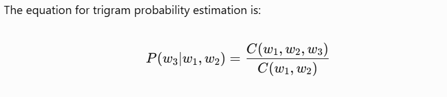
Exam Reference Diagram / Mathematical Expression
Long Analytical Answer Q11. State any three major challenges involved in processing Indian languages.
Module 1: Overview and Language ModelingProcessing Indian languages is challenging because they have different scripts, grammatical rules and sentence structures. These differences make it difficult for computers to understand and process them correctly.
Different Scripts: Indian languages use different scripts. For example, Bengali uses the Bengali script, Hindi uses Devanagari and Tamil uses the Tamil script.
Morphological Complexity: Words can have different forms because of prefixes, suffixes and grammatical changes.
Limited Resources: Many Indian languages have fewer digital dictionaries, language tools and training datasets.
Word Order: Different Indian languages follow different sentence structures, which creates difficulties for language models.
Example: Bengali, Hindi and Tamil have different grammatical structures.
These challenges make NLP system development difficult. Better datasets and language-processing tools can improve NLP applications for Indian languages.
Long Analytical Answer Q30. Define Information Retrieval (IR). Explain its primary objective.
Module 1: Overview and Language ModelingInformation Retrieval (IR) is the process of finding useful and relevant information from a large collection of documents according to a user's search query. It helps users find the information they need quickly.
Searching Information: It searches documents using keywords or search queries.
Finding Relevant Results: It identifies documents related to the user's question.
Ranking Documents: It arranges search results according to their relevance.
Saving Time: It helps users find useful information without reading every document.
Example: Google Search is an Information Retrieval system. When we search for "Best programming languages", it displays related websites and articles.
The primary objective of IR is to provide the most relevant information to users in less time. It makes searching easier, faster and more effective.
Long Analytical Answer Q60. Explain the Markov Assumption in Statistical Language Modeling.
Module 1: Overview and Language ModelingThe Markov Assumption is used in Statistical Language Modelling to simplify word prediction. It assumes that the next word depends only on a limited number of previous words instead of the complete sentence.
It reduces the need to remember the entire sentence.
In a Bigram Model, the next word depends on one previous word.
In a Trigram Model, the next word depends on two previous words.
It reduces computational complexity and makes word prediction faster.
Example: In the sentence "I love eating food", a Trigram Model predicts the next word using the previous two words.
The Markov Assumption makes language modelling easier because computers do not need to calculate every previous word. It is widely used in statistical language models.
Long Analytical Answer Q71. What is Smoothing? Why is it required?
Module 1: Overview and Language ModelingSmoothing is a technique used in Statistical Language Modelling to give a small probability to word combinations that are not found in the training data. It helps solve the zero-probability problem.
Zero Probability: It prevents unseen word combinations from receiving zero probability.
Better Prediction: It helps language models predict new sentences.
Improved Accuracy: It makes probability calculations more reliable.
Common Techniques: Laplace Smoothing and Good-Turing Smoothing are commonly used techniques.
Example: If a word combination does not appear in the training data, the model may give it zero probability. Laplace Smoothing adds 1 to each count to avoid this problem.
Smoothing is important because language models may receive new words and sentences that were not present in their training data.
Long Analytical Answer Q73. Construct a trigram language model for the given corpus, calculate trigram probabilities using Maximum Likelihood Estimation, and predict the most probable next word for the given contexts.
Module 1: Overview and Language ModelingA Trigram Language Model predicts the next word using the previous two words. Maximum Likelihood Estimation (MLE) calculates the probability of a word using its frequency in the training corpus.
Consider the following example corpus:
I love NLP.
I love AI.
I study NLP.
Step 1: Identify Trigrams
The trigrams are:
I love NLP
I love AI
I study NLP
Step 2: Calculate Probability
Step 3: Predict the Next Word
Both NLP and AI have equal probabilities.
Therefore, both words are equally probable next words.
This example shows how a trigram model predicts words using previous two words.
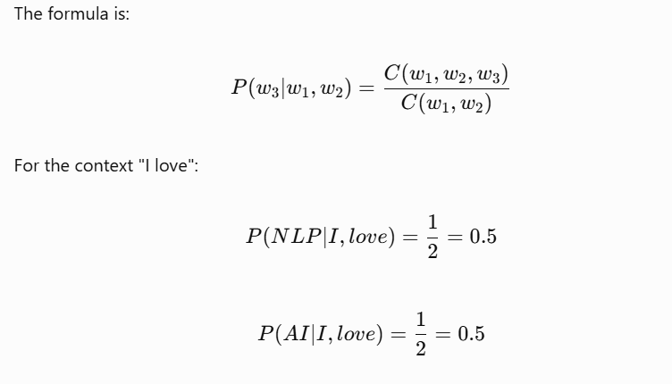
Exam Reference Diagram / Mathematical Expression
Long Analytical Answer Q74. What is Regular Expression? Write Regular Expressions to extract words ending with ing, alphabetic strings, and exactly 10-digit mobile numbers.
Module 1: Overview and Language ModelingA Regular Expression (Regex) is a pattern used to search, match and extract specific text from a string. It makes text processing easier and faster.
The following are some useful regular expressions:
Words ending with ing:
\b\w+ing\b
It matches words like playing, reading and writing.
Alphabetic Strings:
[A-Za-z]+
It matches strings containing English letters.
Exactly 10-digit Mobile Numbers:
\b[0-9]{10}\b
It matches a number containing exactly 10 digits.
Uses of Regex: It is used for searching, text validation, data extraction and pattern matching.
Regular Expressions are very useful in NLP because they help computers identify specific patterns in large amounts of text.
Long Analytical Answer Q75. Explain the importance of tokenization in NLP. Differentiate between unigram, bigram, and trigram.
Module 1: Overview and Language ModelingTokenization is the process of breaking text into smaller units called tokens. These tokens may be words, sentences or characters. It is one of the first steps in Natural Language Processing.
Unigram: It contains one word at a time. Example: "I", "love", "NLP".
Bigram: It contains two consecutive words. Example: "I love", "love NLP".
Trigram: It contains three consecutive words. Example: "I love NLP".
Importance: Tokenization helps computers analyse text, understand word relationships and prepare data for further NLP tasks.
Example: The sentence "I love learning NLP" can be divided into four individual word tokens.
Tokenization makes text processing easier and helps language models understand sentence structure.
Long Analytical Answer Q76. Discuss Maximum Likelihood Estimation, the zero-probability problem, and the role of smoothing techniques.
Module 1: Overview and Language ModelingMaximum Likelihood Estimation (MLE) is a statistical method used to calculate the probability of words based on their frequency in training data. It helps language models predict the next word.
MLE: It calculates probability by dividing the frequency of a word combination by the frequency of its previous context.
Zero-Probability Problem: If a word combination is not present in the training data, MLE gives it zero probability.
Problem: Zero probability can affect the complete probability calculation and reduce prediction accuracy.
Smoothing: Techniques like Laplace Smoothing add a small value to word counts to avoid zero probability.
Example: Laplace Smoothing adds 1 to every word count.
\[ P(w)=\frac{Count(w)+1}{N+V} \]
Here, N is the total number of words and V is the vocabulary size.
Thus, smoothing helps language models handle unseen words and combinations.
Long Analytical Answer Q79. Explain the role of Exploratory Data Analysis and text preprocessing in NLP. Discuss corpus size, vocabulary size, TTR, text-length distribution, and Zipf's Law.
Module 1: Overview and Language ModelingExploratory Data Analysis (EDA) is the process of understanding text data before applying NLP techniques. Text preprocessing cleans and prepares the data for further analysis.
Corpus Size: It represents the total number of words or tokens in a collection of documents.
Vocabulary Size: It represents the total number of unique words in the corpus.
TTR: Type-Token Ratio measures vocabulary richness. Its formula is:
\[ TTR=\frac{\text{Unique Words}}{\text{Total Words}} \]
Text-Length Distribution: It shows how short or long the documents are.
Zipf's Law: It states that frequently used words appear more often than less common words.
EDA helps identify the structure and quality of text data. Text preprocessing includes removing unnecessary symbols, handling missing values, tokenization and normalisation. Together, they improve the quality of NLP results.
Long Analytical Answer Q97. Explain the Markov Assumption in Statistical Language Modeling and how it reduces the computational limitations of the chain rule.
Module 1: Overview and Language ModelingThe Markov Assumption is a statistical method used in language modelling. It states that the next word depends only on a limited number of previous words instead of the complete sentence.
Chain Rule: It calculates the probability of a sentence by considering all previous words.
Computational Problem: Calculating all previous word combinations requires large amounts of data and computation.
Markov Assumption: It simplifies the calculation by considering only a fixed number of previous words.
N-gram Models: A Bigram Model uses one previous word, while a Trigram Model uses two previous words.
Example: In a Trigram Model, the next word is predicted using the previous two words.
The Markov Assumption reduces computational complexity and makes language prediction faster. It is an important concept in Statistical Language Modelling.
Long Analytical Answer Q98. Describe the structural characteristics of Indian languages that create challenges for traditional N-gram Language Models.
Module 1: Overview and Language ModelingIndian languages have different grammatical and structural characteristics. These differences create difficulties for traditional N-gram Language Models, which predict words using a limited number of previous words.
Free Word Order: Some Indian languages allow words to appear in different positions without changing the main meaning.
Rich Morphology: A single word can have many forms because of prefixes, suffixes and grammatical changes.
Compound Words: Many words are formed by joining two or more smaller words.
Limited Resources: Many Indian languages have fewer digital texts and training datasets.
Example: Bengali, Hindi and Tamil have different sentence structures and grammatical rules.
Traditional N-gram models may fail to understand all these variations because they depend on limited previous words.
Therefore, processing Indian languages requires better datasets and more advanced language models.
Long Analytical Answer Q100. Elaborate on the role of NLTK's nltk.tokenize and pos_tag modules in NLP preprocessing and specify the underlying algorithms.
Module 1: Overview and Language ModelingNLTK stands for Natural Language Toolkit. It is a Python library used for Natural Language Processing. Its tokenization and POS tagging tools help prepare and analyse text.
nltk.tokenize: It divides text into smaller units, such as words and sentences.
Sentence Tokenization: The Punkt algorithm is commonly used to identify sentence boundaries.
pos_tag: It identifies the grammatical category of each word, such as noun, verb, adjective and adverb.
Underlying Algorithm: NLTK's commonly used English POS tagger uses an Averaged Perceptron algorithm, based on a trained statistical model.
Example:
Sentence: "I love Python."
POS Tags:
I - Pronoun
love - Verb
Python - Proper Noun
These tools help computers understand sentence structure and prepare text for further NLP processing.
Long Analytical Answer Q102. Define TTR and Zipf's Law. Explain their mathematical calculation and use in initial text-based EDA.
Module 1: Overview and Language ModelingTTR and Zipf's Law are important concepts used in Exploratory Data Analysis (EDA). They help us understand vocabulary diversity and word frequency in text data.
TTR: Type-Token Ratio measures the richness of vocabulary in a text.
TTR Formula:
\[ TTR=\frac{\text{Unique Words}}{\text{Total Words}} \]
A higher TTR generally indicates greater vocabulary diversity.
Zipf's Law: It states that a word's frequency is approximately inversely proportional to its rank.
\[ f(r)\propto\frac{1}{r} \]
Uses in EDA: TTR helps measure vocabulary richness, while Zipf's Law helps study frequently used and less frequently used words.
Example: The word "the" may appear many times, while uncommon words appear only once or twice.
These concepts help understand the structure and characteristics of text data.
Long Analytical Answer Q103. Explain the theoretical connection between Regular Expressions and Finite-State Automata. Differentiate DFA and NFA.
Module 1: Overview and Language ModelingRegular Expressions and Finite-State Automata are two important concepts in computer science and NLP. Both are used to recognise patterns in text and identify specific strings.
Regular Expressions: They describe patterns used to search and match text.
Finite-State Automata: They are mathematical machines that recognise strings according to given rules.
DFA: A Deterministic Finite Automaton has exactly one possible transition for each input symbol from a state.
NFA: A Non-Deterministic Finite Automaton can have multiple possible transitions or no transition for an input symbol. It may also have epsilon transitions.
Difference: DFA follows only one possible path for an input, while NFA can have multiple possible paths.
Both DFA and NFA can recognise regular languages. Regular Expressions can be converted into equivalent finite-state automata.
Long Analytical Answer Q105. Why does MLE fail with unseen words during text classification? Explain how Laplace Smoothing resolves this problem.
Module 1: Overview and Language ModelingMaximum Likelihood Estimation (MLE) calculates the probability of a word based on its frequency in training data. However, it creates a problem when a new word does not appear in the training data.
Unseen Words: MLE cannot find a frequency for words that are missing from the training data.
Zero Probability: It gives zero probability to unseen words.
Laplace Smoothing: It solves this problem by adding 1 to every word count.
Better Classification: It gives a small non-zero probability to unseen words and improves classification reliability.
The formula is:
\[ P(w)=\frac{Count(w)+1}{N+V} \]
Where:
Count(w) = Frequency of the word.
N = Total number of words.
V = Vocabulary size.
Example: If a new word is not found in the training data, Laplace Smoothing still gives it a small probability.
Therefore, Laplace Smoothing helps text classification handle unseen words more effectively.
Long Analytical Answer Q31. Differentiate between the Boolean Model and the Vector Space Model.
Module 5: Information Retrieval and Lexical ResourcesThe Boolean Model and Vector Space Model are two important methods used in Information Retrieval. Both help users find relevant documents from a large collection of information.
Boolean Model: It uses logical operators like AND, OR and NOT to search documents.
Exact Matching: It gives results that either match or do not match the search query.
Vector Space Model: It represents documents and queries using numerical values and calculates their similarity.
Ranking: It ranks documents according to their relevance to the search query.
Example: In the Boolean Model, searching "Java AND Python" finds documents containing both terms. The Vector Space Model can rank documents according to how closely they match the query.
Thus, the Boolean Model provides exact matching, while the Vector Space Model provides flexible searching and ranking.
Long Analytical Answer Q34. Explain the role of Stemmers in Information Retrieval with an example.
Module 5: Information Retrieval and Lexical ResourcesA Stemmer is a tool used in Information Retrieval to reduce different forms of words to their root or basic form. It helps search systems understand similar words and find relevant documents.
Word Reduction: It reduces different forms of a word to a common stem.
Better Searching: It helps search systems find documents containing different forms of the same word.
Time Saving: It reduces unnecessary differences between words and makes searching more efficient.
Improved Results: It helps retrieve more relevant documents for a search query.
Example: The words playing, played and plays can be reduced to the common stem "play".
When a user searches for "playing", the system may also find documents containing "played" or "plays".
Therefore, stemming improves the searching process and makes Information Retrieval more effective.
Long Analytical Answer Q35. Why are POS Taggers used in Information Retrieval systems?
Module 5: Information Retrieval and Lexical ResourcesPOS stands for Part of Speech. POS Taggers are tools used to identify the grammatical role of each word in a sentence. They help Information Retrieval systems understand the meaning and structure of text.
Word Identification: They identify nouns, verbs, adjectives and adverbs.
Meaning Understanding: They help computers understand how words are used in a sentence.
Query Processing: They help search systems understand user queries more accurately.
Better Results: They improve information searching and reduce confusion between words with different grammatical roles.
Example: The word "book" can be used as a noun or a verb. In "Read a book", it is a noun. In "Book a ticket", it is a verb.
Thus, POS Taggers help Information Retrieval systems understand language better and provide more accurate search results.
Long Analytical Answer Q46. What is the primary role of an Inverted Index in Information Retrieval?
Module 5: Information Retrieval and Lexical ResourcesAn Inverted Index is an important data structure used in Information Retrieval. It stores words along with the list of documents in which those words appear. It helps search systems find information quickly.
Word Storage: It stores important words from a collection of documents.
Document Mapping: It maintains a list of documents where each word appears.
Fast Searching: It helps find relevant documents without checking every document separately.
Time Saving: It makes the searching process faster and more efficient.
Example: Suppose the word "computer" appears in documents 1, 3 and 5. The inverted index stores these document numbers against the word "computer".
When a user searches for "computer", the system directly finds the related documents.
Therefore, the primary role of an Inverted Index is to make information searching faster and easier.
Long Analytical Answer Q51. What is Latent Semantic Indexing (LSI) in alternative IR models?
Module 5: Information Retrieval and Lexical ResourcesLatent Semantic Indexing (LSI) is an Information Retrieval technique used to identify hidden relationships between words and documents. It helps search systems understand the meaning of information instead of depending only on exact word matching.
Meaning Identification: It identifies hidden meanings and relationships between words.
Document Analysis: It analyses documents to find common topics and related terms.
Word Relationships: It can identify relationships between words having similar meanings.
Better Searching: It helps retrieve relevant documents even when different words are used in the search query.
Example: The words "car" and "automobile" have similar meanings. LSI can identify their relationship even though the words are different.
LSI commonly uses a mathematical technique called Singular Value Decomposition (SVD) to reduce the document-term matrix.
Therefore, LSI improves search results by identifying hidden semantic relationships.
Long Analytical Answer Q64. Why is stop word removal applied selectively depending on the NLP task?
Module 5: Information Retrieval and Lexical ResourcesStop word removal is a text preprocessing technique used to remove common words like "is", "the", "a", "an" and "of" from text. These words usually carry less important information in some NLP tasks.
Reduces Unnecessary Words: It removes common words that may not be useful for searching.
Saves Time: It reduces the amount of text that needs to be processed.
Improves Searching: It can help search systems focus on important keywords.
Task Dependency: It should be applied carefully because some common words are important for understanding meaning.
Example: In sentiment analysis, the word "not" is very important. The sentence "I am happy" has a different meaning from "I am not happy".
If "not" is removed, the actual meaning changes.
Therefore, stop word removal should be applied selectively according to the requirements of the NLP task.
Long Analytical Answer Q5. Why is POS (Part-of-Speech) Tagging required in NLP?
Module 2: Statistical and Syntactic AnalysisPOS Tagging is an important process in Natural Language Processing (NLP). It identifies the grammatical category of each word in a sentence, such as noun, verb, adjective and adverb. It helps computers understand how words are used in a sentence.
Word Identification: It identifies whether a word is a noun, verb, adjective or another grammatical category.
Sentence Understanding: It helps computers understand the structure and meaning of sentences.
Text Analysis: It is useful in text classification, machine translation and information retrieval.
Ambiguity Removal: It helps identify the correct grammatical role of words that have multiple uses.
Example: In "I read a book", the word "book" is a noun. In "Book a ticket", it is a verb.
Therefore, POS Tagging makes language processing easier and improves the accuracy of NLP applications.
Long Analytical Answer Q8. Compare open class and closed class word groups with suitable examples.
Module 2: Statistical and Syntactic AnalysisWords in English grammar are divided into two main groups: Open Class and Closed Class. Both groups have different roles in sentence formation.
Open Class: These words include nouns, verbs, adjectives and adverbs. New words can easily be added to this group.
Closed Class: These words include pronouns, prepositions, conjunctions and articles. New words are rarely added to this group.
Examples of Open Class: Computer, beautiful, running and quickly.
Examples of Closed Class: He, she, in, on, and, but and the.
Difference: Open-class words carry the main meaning of a sentence, while closed-class words mainly show grammatical relationships between words.
Example: In "She uses a computer", computer is an open-class word, while she and a are closed-class words.
Both groups are important for understanding sentence structure and meaning in NLP.
Long Analytical Answer Q12. Distinguish between CBOW and Skip-Gram architectures of Word2Vec.
Module 2: Statistical and Syntactic AnalysisCBOW and Skip-Gram are two architectures of Word2Vec used to create word embeddings. They help computers understand relationships between words by converting words into numerical vectors.
CBOW: Continuous Bag of Words predicts the target word using the surrounding context words.
Skip-Gram: It predicts the surrounding context words using the given target word.
Training Speed: CBOW is generally faster because it uses multiple context words to predict one target word.
Rare Words: Skip-Gram generally performs better with rare words because it learns separate context relationships for each target word.
Example: Consider "I love learning NLP".
CBOW uses surrounding words to predict "learning".
Skip-Gram uses "learning" to predict surrounding words like "love" and "NLP".
Both models are useful for learning word meanings and relationships. However, their prediction directions are opposite.
Long Analytical Answer Q13. Distinguish between stemming and lemmatization with suitable examples.
Module 2: Statistical and Syntactic AnalysisStemming and Lemmatization are two important text preprocessing techniques used in NLP. Both reduce words to a simpler form, but they follow different methods.
Stemming: It removes prefixes or suffixes from words to obtain a basic stem.
Lemmatization: It converts a word into its meaningful dictionary form called a lemma.
Accuracy: Stemming is generally faster but may produce meaningless words. Lemmatization is more accurate because it considers vocabulary and grammar.
Examples: Stemming may convert "studies" into "studi", while lemmatization converts "studies" into "study".
More Examples:
Playing -> Play
Played -> Play
Better -> Good (lemmatization)
Stemming is useful when speed is important, while lemmatization is useful when meaningful words are required.
Therefore, both techniques reduce word variations and help NLP systems process text more effectively.
Long Analytical Answer Q14. Define Minimum Edit Distance. Name the basic edit operations used in spelling correction.
Module 2: Statistical and Syntactic AnalysisMinimum Edit Distance (MED) is a method used in NLP to calculate the minimum number of operations required to convert one word into another. It is commonly used in spelling correction and text comparison.
The three basic edit operations are:
Insertion: Adding a new character to a word. Example: Cat -> Cart.
Deletion: Removing a character from a word. Example: Book -> Boo.
Substitution: Replacing one character with another. Example: Cat -> Bat.
Minimum Cost: It calculates the smallest total cost required to change one word into another.
Example: If we want to convert "cat" into "bat", we replace the letter 'c' with 'b'. Therefore, the edit distance is 1.
Minimum Edit Distance helps spelling correction systems identify incorrect words and suggest the closest correct words.
Long Analytical Answer Q15. Explain open and closed word classes with suitable examples.
Module 2: Statistical and Syntactic AnalysisIn English grammar, words are divided into two major categories called Open Class and Closed Class. These classes help us understand how words are used in sentences.
Open Class Words: These include nouns, verbs, adjectives and adverbs. New words can easily be added to this category.
Closed Class Words: These include pronouns, prepositions, conjunctions and articles. New words are rarely added to this category.
Examples of Open Class: Student, running, beautiful and slowly.
Examples of Closed Class: He, she, in, on, and, but and the.
Example: In the sentence "She reads a beautiful book", reads, beautiful and book are open-class words. She and a are closed-class words.
Open-class words provide the main information, while closed-class words connect words and maintain grammatical structure.
Both categories are important for POS Tagging and sentence analysis in NLP.
Long Analytical Answer Q17. Explain how vocabulary explosion affects BoW performance on large datasets.
Module 2: Statistical and Syntactic AnalysisBag of Words (BoW) is a text representation technique that converts documents into numerical vectors based on word frequency. Vocabulary explosion occurs when the number of unique words becomes very large in a dataset.
Large Vocabulary: Different words from many documents increase the vocabulary size.
High Memory Usage: The system needs more memory to store large numerical vectors.
Sparse Vectors: Most documents contain only a small number of vocabulary words, resulting in many zero values.
Slow Processing: Large vocabulary increases computational time and makes model training slower.
Example: If a dataset contains 10,000 unique words, each document may require a vector containing 10,000 positions, even when it contains only 100 words.
Vocabulary explosion makes BoW less efficient for large datasets. Techniques like stop word removal, feature selection and TF-IDF can help reduce unnecessary information.
Long Analytical Answer Q19. Briefly explain POS tagging. Why is it important in NLP?
Module 2: Statistical and Syntactic AnalysisPOS Tagging stands for Part-of-Speech Tagging. It is the process of identifying the grammatical category of each word in a sentence. It helps computers understand the role of words in human language.
Identification: It identifies nouns, verbs, adjectives, adverbs and other word categories.
Sentence Structure: It helps understand how words are arranged in a sentence.
Meaning: It helps identify the correct use of words having multiple meanings.
Applications: It is used in machine translation, information retrieval, text summarisation and speech processing.
Example: Consider the sentence "The boy plays cricket."
The - Article
Boy - Noun
Plays - Verb
Cricket - Noun
POS Tagging helps computers understand the grammatical structure of this sentence.
Therefore, it is an important preprocessing step in NLP and improves the performance of many language-processing applications.
Long Analytical Answer Q20. Calculate the TF-IDF score when a word appears 5 times in a 100-word document and occurs in 10 out of 1,000 documents.
Module 2: Statistical and Syntactic AnalysisTF-IDF stands for Term Frequency-Inverse Document Frequency. It measures the importance of a word in a particular document compared with the entire document collection.
Given:
Total words in the document = 100
Frequency of the word = 5
Total documents = 1,000
Documents containing the word = 10
Final Answer: 0.2303
Therefore, the TF-IDF score is approximately 0.2303.
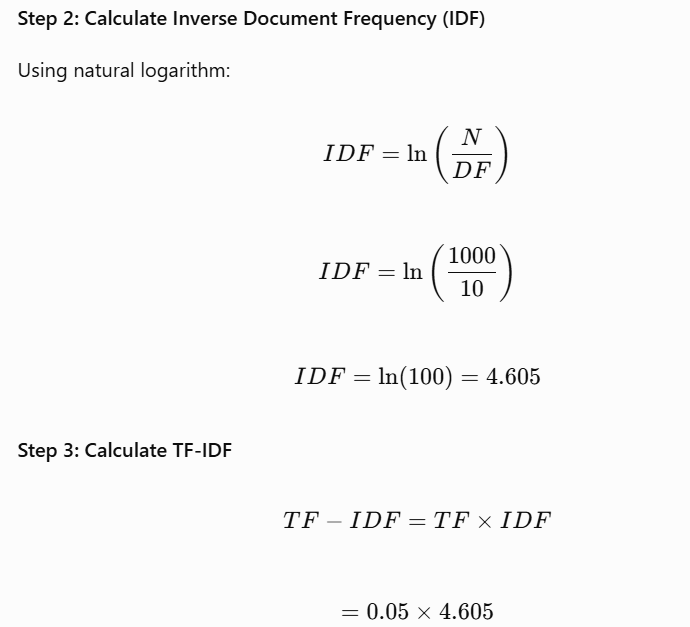
Exam Reference Diagram / Mathematical Expression
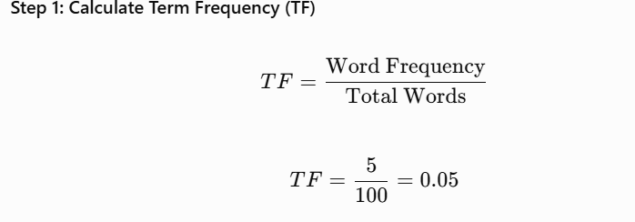
Exam Reference Diagram / Mathematical Expression
Long Analytical Answer Q23. What is one-hot encoding? Explain it with a suitable example.
Module 2: Statistical and Syntactic AnalysisOne-Hot Encoding is a text representation technique used in NLP to convert words into numerical vectors. Each word is represented by a vector containing only one 1 and all other values as 0.
Vocabulary Creation: First, a list of unique words is created from the given text.
Vector Creation: Each word receives a separate numerical position.
Binary Values: The position of the selected word contains 1, while all other positions contain 0.
Machine Learning: These numerical vectors help computers process text data.
Example:
Consider the sentence "I love NLP".
Vocabulary: [I, love, NLP]
One-hot encoding is simple and easy to understand. However, it does not capture the meaning or relationships between words.
| Word | One-Hot Vector |
|---|---|
| I | [1, 0, 0] |
| love | [0, 1, 0] |
| NLP | [0, 0, 1] |
Long Analytical Answer Q24. What are the disadvantages of one-hot encoding?
Module 2: Statistical and Syntactic AnalysisOne-Hot Encoding is a simple technique used to convert words into numerical vectors. However, it has several disadvantages when working with large text datasets.
High Memory Usage: Every word requires a separate vector position, which increases memory requirements.
Sparse Representation: Most vector values are zero, making the representation inefficient.
No Semantic Meaning: It cannot identify relationships between similar words.
Vocabulary Problem: New words require new vector positions, making vocabulary management difficult.
Example: The words "happy" and "joyful" have similar meanings, but one-hot encoding represents them using completely different vectors.
For a large vocabulary of 10,000 words, every word requires a vector of 10,000 positions.
Therefore, one-hot encoding is not very efficient for large NLP applications. Word2Vec and GloVe are better alternatives because they can capture semantic relationships between words.
Long Analytical Answer Q40. For "deep learning is amazing" with window size 1, list all Skip-Gram target-context pairs.
Module 2: Statistical and Syntactic AnalysisSkip-Gram is a Word2Vec architecture that predicts surrounding context words using a given target word. A window size of 1 means the model considers one word on the left and one word on the right.
Given Sentence:
"deep learning is amazing"
Step 1: Identify Words
deep
learning
is
amazing
Step 2: Create Target-Context Pairs
Target: deep -> Context: learning
Target: learning -> Context: deep
Target: learning -> Context: is
Target: is -> Context: learning
Target: is -> Context: amazing
Target: amazing -> Context: is
Step 3: Final Answer
Therefore, a total of 6 target-context pairs are generated.
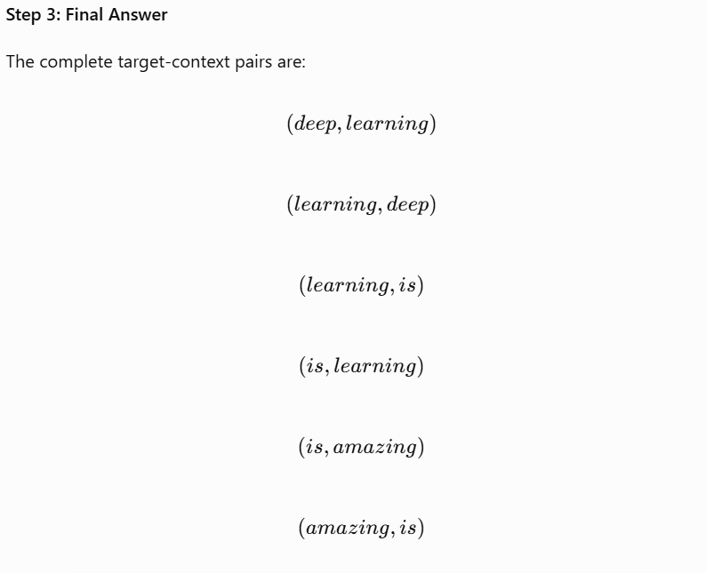
Exam Reference Diagram / Mathematical Expression
Long Analytical Answer Q43. What is Type-Token Ratio (TTR) and how is it calculated?
Module 2: Statistical and Syntactic AnalysisType-Token Ratio (TTR) is a measurement used in NLP to identify the vocabulary richness of a text. It compares the number of unique words with the total number of words.
Types: Types represent the number of unique words in a text.
Tokens: Tokens represent the total number of words, including repeated words.
Calculation: TTR is calculated by dividing the number of unique words by the total number of words.
Importance: It helps understand vocabulary diversity in a document or corpus.
Formula:
Therefore, the TTR is approximately 0.714. A higher TTR generally indicates greater vocabulary richness, although it is also affected by text length.
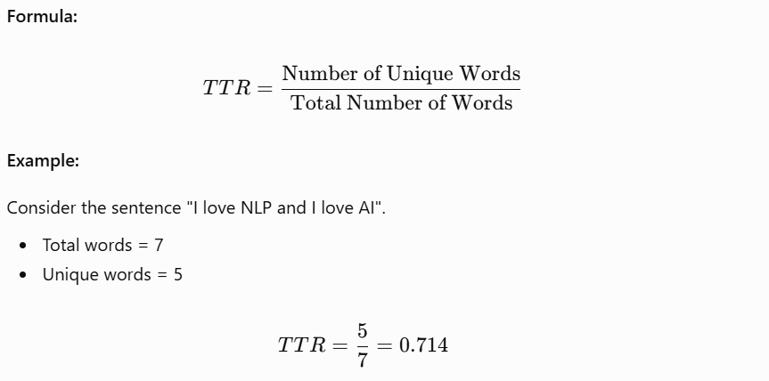
Exam Reference Diagram / Mathematical Expression
Long Analytical Answer Q44. Differentiate between DFA and NFA.
Module 2: Statistical and Syntactic AnalysisDFA and NFA are two types of Finite-State Automata used in computer science and NLP. They recognise patterns and determine whether a given string follows certain rules.
DFA: DFA stands for Deterministic Finite Automaton. It has exactly one possible transition for each input symbol from a state.
NFA: NFA stands for Non-Deterministic Finite Automaton. It can have multiple possible transitions or no transition for an input symbol.
Transitions: DFA follows only one path for an input, while NFA can follow multiple possible paths.
Epsilon Transition: NFA can have epsilon transitions, which allow movement without reading an input symbol. DFA does not support these transitions.
Example: Both DFA and NFA can recognise whether a string contains a particular pattern.
Both machines have states, transitions, a starting state and accepting states. They have equal recognition power because both can recognise regular languages.
Long Analytical Answer Q45. Explain Laplace Smoothing and give its conditional probability formula.
Module 2: Statistical and Syntactic AnalysisLaplace Smoothing is a statistical technique used in NLP to solve the zero-probability problem. It adds 1 to the frequency of every possible word combination so that unseen combinations receive a small non-zero probability.
Zero Probability: It prevents unseen words or word combinations from receiving zero probability.
Adding One: It adds 1 to every possible count.
Improved Prediction: It helps language models predict new sentences more reliably.
Applications: It is used in language modelling and Naive Bayes text classification.
Laplace Smoothing makes NLP models more reliable when they encounter unseen words.
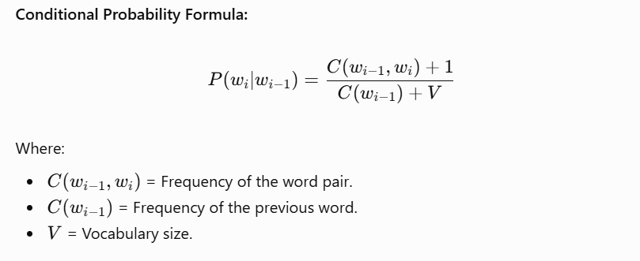
Exam Reference Diagram / Mathematical Expression
Long Analytical Answer Q47. Explain Cosine Similarity and state its equation.
Module 2: Statistical and Syntactic AnalysisCosine Similarity is a mathematical technique used to measure how similar two documents or vectors are. It calculates the angle between two vectors rather than directly comparing their lengths.
Similarity Measurement: It measures how closely two documents are related.
Vector Representation: Documents are first converted into numerical vectors.
Score: Its value generally ranges from -1 to +1. A value closer to +1 indicates greater similarity.
Applications: It is used in search engines, document comparison and recommendation systems.
Formula:
Where:
A and B are two vectors.
\(A\cdot B\) is their dot product.
\(|A|\) and \(|B|\) represent vector lengths.
Example: If two documents contain similar words, their cosine similarity may be high.
Therefore, Cosine Similarity helps search systems identify documents with similar content.
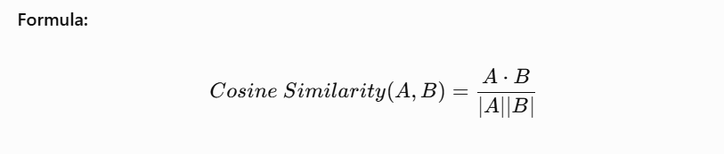
Exam Reference Diagram / Mathematical Expression
Long Analytical Answer Q61. What is a Context-Free Grammar (CFG) and what are its four components?
Module 2: Statistical and Syntactic AnalysisA Context-Free Grammar (CFG) is a set of grammatical rules used to describe the structure of sentences in a language. It helps computers understand how words are arranged to form meaningful sentences.
A CFG contains four main components:
Non-Terminals (N): These are symbols representing grammatical categories, such as Sentence, Noun Phrase and Verb Phrase.
Terminals (T): These are actual words or symbols used in sentences, such as boy, eats and food.
Production Rules (P): These are rules used to generate sentences from grammatical symbols.
Start Symbol (S): It represents the starting point of the grammar.
The sentence becomes "The boy eats food".
CFG is useful in syntactic parsing and understanding sentence structures in NLP.
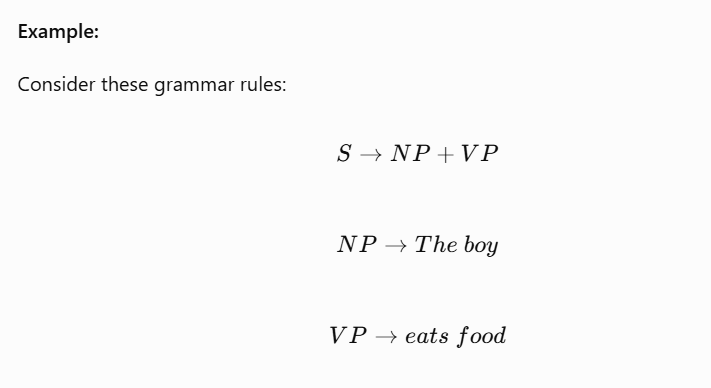
Exam Reference Diagram / Mathematical Expression
Long Analytical Answer Q62. Explain the CYK algorithm in syntactic parsing.
Module 2: Statistical and Syntactic AnalysisThe CYK algorithm stands for Cocke-Younger-Kasami algorithm. It is a parsing algorithm used in NLP to check whether a sentence follows a given Context-Free Grammar (CFG).
Grammar Conversion: First, the grammar is converted into Chomsky Normal Form (CNF).
Table Creation: A triangular table is created to store possible grammatical symbols.
Word Analysis: The algorithm identifies the grammatical categories of individual words.
Combination: It combines smaller word groups to identify larger grammatical structures.
Example: Consider the sentence "The boy eats food". The algorithm checks whether the words can form valid noun phrases, verb phrases and a complete sentence.
The CYK algorithm uses dynamic programming to avoid repeating the same calculations.
It is useful in syntactic parsing because it identifies the grammatical structure of sentences. Its standard time complexity is \(O(n^3)\) for a fixed grammar.
Long Analytical Answer Q65. Explain intrinsic evaluation versus extrinsic evaluation of vector models.
Module 2: Statistical and Syntactic AnalysisIntrinsic and Extrinsic Evaluation are two methods used to measure the performance of word vector models and word embeddings.
Intrinsic Evaluation: It directly checks the quality of word vectors using tasks such as word similarity and word analogy.
Extrinsic Evaluation: It checks how useful word vectors are in real NLP applications.
Testing Method: Intrinsic evaluation uses predefined datasets, while extrinsic evaluation uses complete NLP tasks.
Examples: Word similarity is an intrinsic task, while sentiment analysis and text classification are extrinsic tasks.
Example: If the words "king" and "queen" have similar vector relationships, intrinsic evaluation can measure this relationship. If those vectors improve sentiment classification, extrinsic evaluation measures that improvement.
Intrinsic evaluation is generally easier and faster. Extrinsic evaluation gives a better idea of how useful a model is in practical applications.
Both methods are important for evaluating word embedding quality.
Long Analytical Answer Q70. What is morphology? Explain inflectional morphology and derivational morphology.
Module 2: Statistical and Syntactic AnalysisMorphology is the study of the structure and formation of words. In NLP, it helps computers understand how words are formed using smaller meaningful units called morphemes.
There are two main types of morphology:
Inflectional Morphology: It changes the grammatical form of a word without changing its basic meaning or word category.
Examples of Inflection: Play -> Played, Book -> Books and Walk -> Walking.
Derivational Morphology: It creates a new word by adding prefixes or suffixes. It may change the meaning or grammatical category of a word.
Examples of Derivation: Happy -> Unhappy, Teach -> Teacher and Kind -> Kindness.
Difference: Inflection changes the grammatical form, while derivation creates a new word.
Morphology is important in NLP because it helps with stemming, lemmatization, text analysis and language understanding.
Long Analytical Answer Q72. Explain GloVe with a suitable example.
Module 2: Statistical and Syntactic AnalysisGloVe stands for Global Vectors for Word Representation. It is a word embedding technique used in NLP to convert words into numerical vectors. It learns word meanings by analysing how frequently words appear together in a large collection of text.
Word Representation: It converts words into numerical vectors.
Global Statistics: It uses word co-occurrence statistics from the entire corpus.
Semantic Relationships: It identifies relationships between words having similar meanings.
Applications: It is used in text classification, sentiment analysis and machine translation.
Example: Words like king, queen, man and woman have meaningful relationships in GloVe word vectors.
GloVe learns these relationships by studying how words appear together in documents.
Unlike simple one-hot encoding, GloVe captures semantic similarities between words.
Therefore, GloVe helps computers understand the meaning and relationships of words more effectively.
Long Analytical Answer Q77. How does the Bag of Words model represent text, and why does it lose word-order context?
Module 2: Statistical and Syntactic AnalysisBag of Words (BoW) is a text representation technique used in NLP. It converts text into numerical vectors by counting the frequency of words in a document.
Vocabulary Creation: First, all unique words from the documents are collected.
Word Counting: The frequency of each vocabulary word is calculated in every document.
Vector Creation: Each document is represented as a numerical vector based on word frequency.
Loss of Word Order: BoW only counts words and ignores their original positions and arrangement.
Example:
Consider two sentences:
"Dog bites man."
"Man bites dog."
Both sentences contain the same words, so standard BoW represents them using identical frequency vectors.
However, their meanings are different.
BoW is simple and easy to implement, but it cannot understand grammar, word order or deeper meaning.
Therefore, it is useful for basic text classification but has limitations in understanding language context.
Long Analytical Answer Q78. Construct BoW vectors for "Data science is fun" and "Fun with data." State the disadvantages of BoW.
Module 2: Statistical and Syntactic AnalysisBag of Words (BoW) is a technique that converts text into numerical vectors based on word frequency. It first creates a vocabulary containing all unique words from the given sentences.
Given Sentences:
Data science is fun.
Fun with data.
Step 1: Create Vocabulary
Vocabulary:
[Data, science, is, fun, with]
Step 2: Count Word Frequencies
Step 3: Construct BoW Vectors
Sentence 1 = [1, 1, 1, 1, 0]
Sentence 2 = [1, 0, 0, 1, 1]
Disadvantages:
It ignores word order.
It cannot understand word meanings.
It creates sparse vectors.
Large vocabulary requires more memory.
Therefore, BoW is simple but cannot capture the complete meaning of sentences.
| Word | Sentence 1 | Sentence 2 |
|---|---|---|
| Data | 1 | 1 |
| science | 1 | 0 |
| is | 1 | 0 |
| fun | 1 | 1 |
| with | 0 | 1 |
Long Analytical Answer Q82. Explain Bag of Words using the given three sentences and discuss its advantages and disadvantages.
Module 2: Statistical and Syntactic AnalysisBag of Words (BoW) is a text representation technique that converts sentences into numerical vectors. It counts the frequency of each unique word and represents documents using those counts.
Step 1: Consider Three Sentences
I love NLP.
I love Python.
Python is amazing.
Step 2: Create Vocabulary
Vocabulary:
[I, love, NLP, Python, is, amazing]
Step 3: Construct BoW Vectors
Advantages:
Simple to understand and implement.
Converts text into numerical data.
Useful for text classification.
Disadvantages:
Ignores word order.
Cannot understand word meanings.
Creates sparse vectors.
BoW is useful for basic NLP tasks but has limitations in understanding context.
Note: These three sentences are illustrative because the question does not include a specific corpus.
| Word | Sentence 1 | Sentence 2 | Sentence 3 |
|---|---|---|---|
| I | 1 | 1 | 0 |
| love | 1 | 1 | 0 |
| NLP | 1 | 0 | 0 |
| Python | 0 | 1 | 1 |
| is | 0 | 0 | 1 |
| amazing | 0 | 0 | 1 |
Long Analytical Answer Q86. Given a vocabulary and a new test document, find the BoW representation.
Module 2: Statistical and Syntactic AnalysisBag of Words (BoW) represents a document as a numerical vector using a fixed vocabulary. Each position in the vector represents a particular word, and its value shows how many times that word appears in the document.
Example:
Consider the vocabulary:
[Data, Science, Python, AI, Learning]
New test document:
"Data Science is fun. I love Python."
Step 1: Identify Vocabulary Words
Data = 1
Science = 1
Python = 1
AI = 0
Learning = 0
Step 2: Construct the BoW Vector
BoW=[1,1,1,0,0]
Step 3: Understand the Result
The vector contains five positions because the vocabulary has five words. The first three words appear once, while AI and Learning do not appear.
Therefore, the BoW representation is [1, 1, 1, 0, 0].
The exact answer depends on the vocabulary and test document given in the question.
Long Analytical Answer Q87. Explain Cosine Similarity with a suitable example.
Module 2: Statistical and Syntactic AnalysisCosine Similarity is a mathematical method used to measure the similarity between two documents or numerical vectors. It calculates the angle between two vectors to identify how closely they are related.
Vector Comparison: It compares two numerical vectors.
Similarity Score: Its value generally ranges from -1 to +1.
Higher Similarity: A value closer to +1 indicates that the vectors are more similar.
Applications: It is used in search engines, document comparison and recommendation systems.
Example:
The similarity score is approximately 0.816, showing that the two vectors are fairly similar.
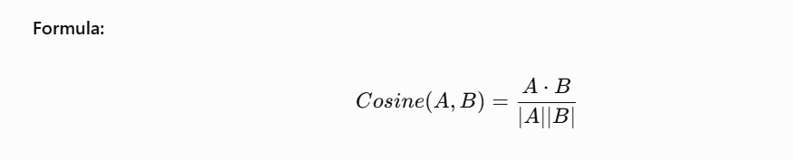
Exam Reference Diagram / Mathematical Expression
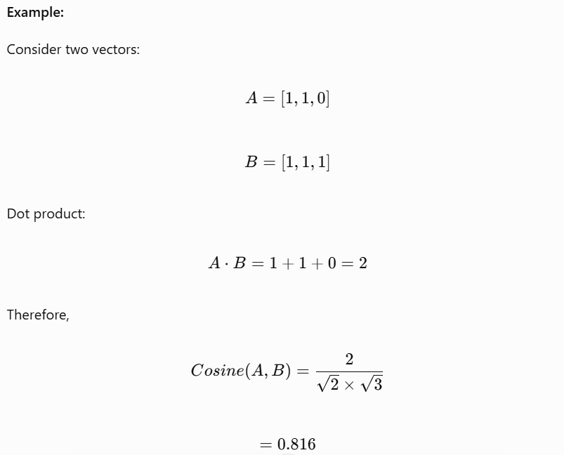
Exam Reference Diagram / Mathematical Expression
Long Analytical Answer Q88. Why is TF-IDF generally preferred over standard Bag of Words for Information Retrieval?
Module 2: Statistical and Syntactic AnalysisTF-IDF stands for Term Frequency-Inverse Document Frequency. It is a text representation technique used to measure the importance of words in a document. It is generally preferred over standard Bag of Words because it gives more importance to meaningful and less common words.
Word Importance: TF-IDF identifies important words in a document.
Common Words: It reduces the importance of words that appear in many documents.
Better Ranking: It helps search systems rank relevant documents more effectively.
Improved Searching: It focuses on words that are more useful for identifying document content.
Example: The word "the" may appear in almost every document, so it receives a low IDF value. A word like "programming" may appear in fewer documents and receive a higher IDF value.
BoW mainly counts word frequency, while TF-IDF considers both word frequency and document frequency.
Therefore, TF-IDF often provides better results in Information Retrieval.
Long Analytical Answer Q92. Explain the prediction direction of CBOW regarding context words and target words.
Module 2: Statistical and Syntactic AnalysisCBOW stands for Continuous Bag of Words. It is a Word2Vec architecture used to learn word embeddings. Its main purpose is to predict the target word using the surrounding context words.
Input: CBOW takes the surrounding context words as input.
Target: The centre word is treated as the target word.
Prediction: The model predicts the missing target word using the context words.
Training: It learns word relationships by repeatedly predicting target words from their surrounding words.
Example:
Consider the sentence:
"I love learning NLP."
If the target word is "learning", the context words may be "love" and "NLP".
The model uses these context words to predict "learning".
The prediction direction is:
Context\ Words -------- Target\ Word
CBOW is generally faster to train because it combines multiple context words to predict one target word.
Long Analytical Answer Q93. How does CBOW aggregate multiple context word vectors before passing them to the hidden layer?
Module 2: Statistical and Syntactic AnalysisCBOW is a Word2Vec architecture that uses surrounding context words to predict a target word. Before making the prediction, it combines the numerical vectors of all context words.
Context Selection: The model first selects surrounding words using a fixed window size.
Vector Conversion: Each context word is converted into a numerical vector using an embedding matrix.
Aggregation: The context vectors are added or averaged to create a single combined vector.
Prediction: The combined vector is passed through the hidden layer and output layer to predict the target word.
The combined vector is used to predict the target word.
Thus, CBOW combines context information before making a prediction.
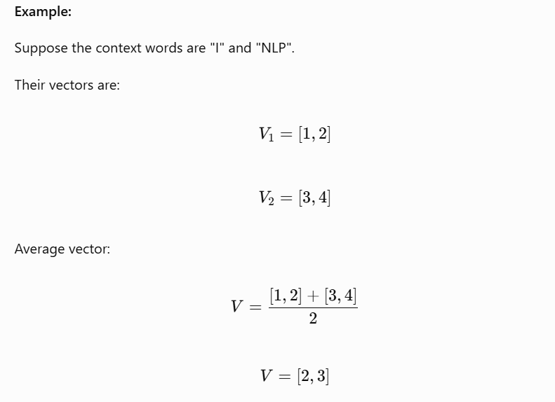
Exam Reference Diagram / Mathematical Expression
Long Analytical Answer Q94. Contrast Skip-Gram with CBOW. Which model performs better on rare words and why?
Module 2: Statistical and Syntactic AnalysisSkip-Gram and CBOW are two Word2Vec architectures used to create word embeddings. Both learn relationships between words, but their prediction directions are different.
CBOW: It uses surrounding context words to predict one target word.
Skip-Gram: It uses one target word to predict surrounding context words.
Training Speed: CBOW is generally faster because it predicts one target word using multiple context words.
Rare Words: Skip-Gram generally performs better on rare words because it learns multiple context relationships for each target word.
Example:
Consider "I love learning Python".
CBOW uses "love" and "Python" to predict "learning".
Skip-Gram uses "learning" to predict "love" and "Python".
Conclusion: Skip-Gram is generally preferred for rare words because it generates more training examples from each target word. CBOW is often preferred when faster training is important.
Long Analytical Answer Q95. Write or explain the loss function that Skip-Gram maximizes during training.
Module 2: Statistical and Syntactic AnalysisSkip-Gram is a Word2Vec architecture that predicts surrounding context words using a given target word. During training, it tries to maximise the probability of correctly predicting context words.
Target Word: The model selects one word as the input.
Context Words: It identifies surrounding words within a fixed window.
Probability: It calculates the probability of each context word appearing around the target word.
Training: It adjusts word vectors to increase the probability of correct context predictions.
.
The model maximises this objective during training. Equivalently, it minimises the negative log-likelihood loss.
Thus, Skip-Gram learns meaningful word relationships.
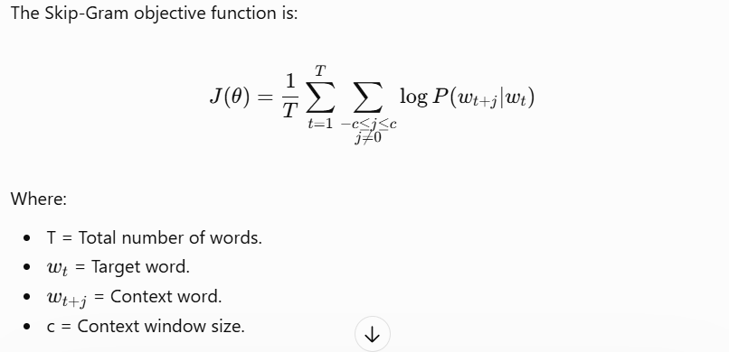
Exam Reference Diagram / Mathematical Expression
Long Analytical Answer Q96. Explain the difference between TF and IDF. Why is TF-IDF better than raw word counts?
Module 2: Statistical and Syntactic AnalysisTF and IDF are two important components of TF-IDF. They help measure the importance of words in a document and a collection of documents.
Term Frequency (TF): It measures how many times a word appears in a particular document.
Inverse Document Frequency (IDF): It measures how rare or common a word is across all documents.
TF-IDF: It combines TF and IDF to calculate the importance of a word.
Better Results: TF-IDF reduces the importance of very common words and gives more weight to meaningful words.
Formulas:
Example: The word "the" may appear frequently in every document, but it is not very useful for identifying a particular topic.
Therefore, TF-IDF is generally more useful than raw word counts for Information Retrieval.
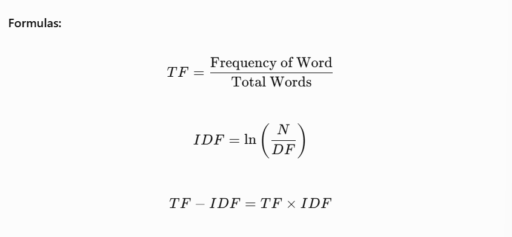
Exam Reference Diagram / Mathematical Expression
Long Analytical Answer Q101. Contrast deterministic artificial programming languages with natural human languages across lexical, syntactic, and pragmatic ambiguity.
Module 2: Statistical and Syntactic AnalysisArtificial programming languages and natural human languages are different in their structure and meaning. Programming languages follow strict rules, while natural languages can have different meanings depending on context.
Lexical Ambiguity: In natural language, one word can have multiple meanings. For example, "bank" can mean a financial institution or a riverbank. Programming languages use predefined meanings for keywords.
Syntactic Ambiguity: Natural language sentences may have different grammatical interpretations. Programming languages follow strict syntax rules.
Pragmatic Ambiguity: Human language depends on situation, intention and context. Programming languages generally do not depend on human intentions.
Interpretation: Computers can follow programming instructions precisely, while natural language requires deeper understanding.
Example: "Can you open the door?" is usually a request, not a question about physical ability.
Therefore, natural language processing is more difficult because human language contains ambiguity and depends on context.
Long Analytical Answer Q104. Write the dynamic programming recurrence for Minimum Edit Distance and compute the operational cost of converting "graffe" into "giraffe."
Module 2: Statistical and Syntactic AnalysisMinimum Edit Distance (MED) is a technique used to calculate the minimum number of operations needed to convert one word into another. It uses dynamic programming to find the lowest conversion cost.
The three basic operations are insertion, deletion and substitution.
Example:
Convert "graffe" into "giraffe".
Original word = graffe
Target word = giraffe
Insert the letter 'i' after 'g'.
Operational Cost:
1
Final Answer: 1 operation
Therefore, the Minimum Edit Distance is 1.
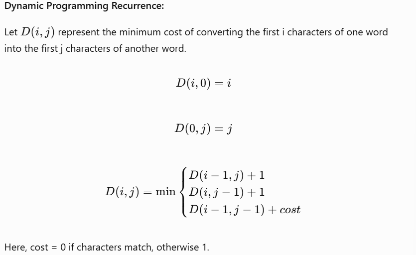
Exam Reference Diagram / Mathematical Expression
Long Analytical Answer Q106. Compare C-BOW and Skip-Gram Word2Vec architectures in terms of input-output structure, training focus, and rare-word performance.
Module 2: Statistical and Syntactic AnalysisCBOW and Skip-Gram are two Word2Vec architectures used in NLP to learn numerical representations of words. Both help computers understand relationships between words.
Input-Output Structure: CBOW takes multiple context words as input and predicts one target word. Skip-Gram takes one target word as input and predicts multiple context words.
Training Focus: CBOW focuses on predicting the centre word from surrounding words, while Skip-Gram focuses on predicting surrounding words from the centre word.
Training Speed: CBOW is generally faster because it combines context information to make one prediction.
Rare Words: Skip-Gram generally performs better on rare words because it learns more context relationships for each target word.
Example: In "I love Python", CBOW predicts Python using surrounding words, while Skip-Gram uses Python to predict surrounding words.
Both models are useful, but the choice depends on dataset size and training requirements.
Long Analytical Answer Q107. Differentiate between intrinsic and extrinsic evaluation of word embedding models.
Module 2: Statistical and Syntactic AnalysisIntrinsic and Extrinsic Evaluation are two methods used to measure the quality and performance of word embedding models. Word embeddings convert words into numerical vectors.
Intrinsic Evaluation: It directly measures the quality of word vectors using tasks like word similarity and word analogy.
Extrinsic Evaluation: It measures how well word vectors perform in real NLP applications.
Testing: Intrinsic evaluation uses predefined word datasets, while extrinsic evaluation uses complete NLP tasks.
Examples: Word similarity is an intrinsic task, while sentiment analysis, machine translation and text classification are extrinsic tasks.
Example: If two similar words have closely related vectors, intrinsic evaluation checks their similarity. If these vectors improve a sentiment analysis model, extrinsic evaluation checks that improvement.
Intrinsic evaluation is generally faster and easier. Extrinsic evaluation takes more time but shows the practical usefulness of word embeddings.
Therefore, both methods are important for evaluating word embedding models.
Long Analytical Answer Q108. Explain the formula and components of TF-IDF weighting and how IDF overcomes limitations of TF.
Module 2: Statistical and Syntactic AnalysisTF-IDF stands for Term Frequency-Inverse Document Frequency. It is a numerical weighting technique used in NLP and Information Retrieval to measure the importance of a word in a document.
It has two main components:
Term Frequency (TF): It measures how frequently a word appears in a particular document.
Inverse Document Frequency (IDF): It measures how important or rare a word is across the complete document collection.
4. Importance of IDF: TF alone gives high importance to frequently occurring words, even if they appear in almost every document. IDF reduces the weight of common words and increases the importance of rare and useful words.
Example: The word "the" appears in many documents, so it receives a low IDF value. A topic-specific word receives a higher IDF value.
Therefore, TF-IDF provides better word weighting than simple word frequency.
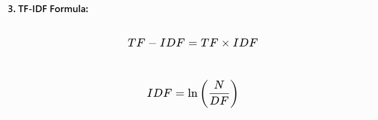
Exam Reference Diagram / Mathematical Expression
Long Analytical Answer Q7. What is Word Sense Disambiguation (WSD)?
Module 3: Semantic Analysis and Discourse ProcessingWord Sense Disambiguation (WSD) is an NLP technique used to identify the correct meaning of a word based on its surrounding words and sentence context. Some words have multiple meanings, so computers need to understand how they are used.
Meaning Identification: WSD identifies the correct meaning of an ambiguous word.
Context Analysis: It studies the surrounding words to understand the intended meaning.
Ambiguity Removal: It helps computers avoid confusion between different meanings of the same word.
Applications: It is used in machine translation, search engines and text understanding.
Example: Consider the word "bank".
"I deposited money in the bank." Here, bank means a financial institution.
"He sat near the river bank." Here, bank means the side of a river.
Therefore, WSD helps computers understand the actual meaning of words according to their context.
Long Analytical Answer Q9. Explain lexical ambiguity and syntactic ambiguity with suitable examples.
Module 3: Semantic Analysis and Discourse ProcessingAmbiguity occurs when a word or sentence has more than one possible meaning. In NLP, ambiguity is mainly divided into lexical ambiguity and syntactic ambiguity.
Lexical Ambiguity: It occurs when a single word has multiple meanings. The correct meaning depends on the surrounding words.
Example of Lexical Ambiguity: The word "bat" can mean a flying animal or a cricket-playing object.
Syntactic Ambiguity: It occurs when a sentence has more than one possible grammatical structure or interpretation.
Example of Syntactic Ambiguity: "I saw the man with a telescope." It may mean that I used a telescope to see the man, or the man had a telescope.
Difference: Lexical ambiguity is related to the meaning of individual words, while syntactic ambiguity is related to sentence structure.
Both types of ambiguity create challenges for NLP systems because computers must identify the correct interpretation.
Long Analytical Answer Q16. Explain First-Order Logic and Conceptual Dependency with suitable examples.
Module 3: Semantic Analysis and Discourse ProcessingFirst-Order Logic (FOL) and Conceptual Dependency (CD) are two methods used in NLP to represent the meaning of sentences in a structured form.
First-Order Logic: It represents information using objects, properties, relations and logical expressions. It helps computers understand facts and relationships.
FOL Example: "Ram loves Sita" can be represented as Loves(Ram, Sita).
Conceptual Dependency: It represents sentence meaning using basic actions and relationships, focusing on the underlying meaning rather than exact words.
CD Example: "Ram gave a book to Sita" represents a transfer of possession from Ram to Sita.
Difference: FOL uses logical expressions to represent facts, while Conceptual Dependency uses conceptual actions to represent sentence meaning.
Both methods help computers understand natural language. They are useful in semantic analysis, knowledge representation and language understanding.
Long Analytical Answer Q18. Explain Hypernym and Hyponym relationships with suitable examples.
Module 3: Semantic Analysis and Discourse ProcessingHypernym and Hyponym are semantic relationships between words. They describe the connection between general categories and their specific members.
Hypernym: A hypernym is a general word that represents a larger category. It includes several specific words.
Hyponym: A hyponym is a specific word that belongs to a general category.
Relationship: A hypernym represents a broader meaning, while a hyponym represents a narrower meaning.
Applications: These relationships are used in WordNet, semantic analysis and information retrieval.
Example:
Animal is a hypernym of Dog.
Dog is a hyponym of Animal.
Fruit is a hypernym of Mango.
Mango is a hyponym of Fruit.
Difference: Hypernym means a general category, whereas hyponym means a specific member of that category.
These relationships help NLP systems understand word meanings and organise vocabulary into semantic hierarchies.
Long Analytical Answer Q21. Why is NER important in Information Extraction?
Module 3: Semantic Analysis and Discourse ProcessingNER stands for Named Entity Recognition. It is an NLP technique used to identify important names and classify them into categories such as people, organisations, locations and dates.
Entity Identification: NER identifies important names from unstructured text.
Entity Classification: It classifies names into categories such as Person, Organisation, Location and Date.
Information Extraction: It helps extract useful information from documents, emails and news articles.
Applications: It is used in search engines, question-answering systems and business data analysis.
Example: Consider the sentence "Rahul works at Google in Kolkata."
Rahul - Person
Google - Organisation
Kolkata - Location
NER helps computers identify important information without reading every sentence manually.
Therefore, NER is an important part of Information Extraction because it converts unstructured text into organised and meaningful information.
Long Analytical Answer Q22. Define WSD. Why is it important in Machine Translation?
Module 3: Semantic Analysis and Discourse ProcessingWord Sense Disambiguation (WSD) is a technique in NLP used to identify the correct meaning of a word according to its context. It is especially important in Machine Translation because one word can have different meanings in different situations.
Correct Meaning: WSD identifies the intended meaning of an ambiguous word.
Translation Accuracy: It helps machine translation systems select the correct translated word.
Context Understanding: It analyses surrounding words to understand the actual meaning.
Error Reduction: It reduces incorrect translations caused by words having multiple meanings.
Example: Consider the English word "bank".
"I went to the bank to deposit money." Here, bank means a financial institution.
"He sat on the river bank." Here, bank means the side of a river.
If a translation system ignores context, it may select the wrong meaning.
Therefore, WSD improves translation quality and helps computers translate sentences more accurately.
Long Analytical Answer Q25. Differentiate between Cohesion and Coherence.
Module 3: Semantic Analysis and Discourse ProcessingCohesion and Coherence are two important concepts in discourse processing. They help make sentences and paragraphs meaningful and understandable.
Cohesion: It refers to the grammatical and vocabulary connections between sentences. It uses pronouns, conjunctions and repeated words.
Coherence: It refers to the logical connection between ideas in a paragraph or document.
Cohesion Example: "Rahul bought a book. He reads it every day." The words "He" and "it" connect the sentences.
Coherence Example: "It was raining heavily. Therefore, I carried an umbrella." The two sentences are logically connected.
Difference: Cohesion focuses on the connection between words and sentences, while coherence focuses on the overall meaning and logical flow of ideas.
Both are important because they make written communication clear, organised and meaningful.
Long Analytical Answer Q32. Define WordNet. Explain Synset with an example.
Module 3: Semantic Analysis and Discourse ProcessingWordNet is a lexical database of English words used in Natural Language Processing. It groups words according to their meanings and shows relationships between them.
Word Organisation: WordNet organises nouns, verbs, adjectives and adverbs into meaningful groups.
Synset: A Synset is a group of words that have the same or nearly the same meaning.
Word Relationships: It connects words through relationships such as synonymy, antonymy, hypernymy and hyponymy.
Applications: It is used in word sense disambiguation, information retrieval and semantic analysis.
Example: The words "happy", "glad" and "cheerful" have similar meanings and may belong to a related Synset.
Another example is:
Animal - Hypernym
Dog - Hyponym
WordNet helps computers understand relationships between words.
Therefore, it is an important lexical resource for understanding the meaning of natural language.
Long Analytical Answer Q33. Differentiate between Hypernym and Hyponym.
Module 3: Semantic Analysis and Discourse ProcessingHypernym and Hyponym are two important semantic relationships used in NLP. They describe how general and specific words are connected.
Hypernym: A hypernym is a general word that represents a larger category. Example: Animal.
Hyponym: A hyponym is a specific word that belongs to a general category. Example: Dog.
Relationship: A hypernym includes several hyponyms, while a hyponym belongs to a broader category.
Applications: These relationships are used in WordNet, semantic analysis and language understanding.
Example:
Animal -> Hypernym of Dog.
Dog -> Hyponym of Animal.
Fruit -> Hypernym of Mango.
Mango -> Hyponym of Fruit.
Difference: Hypernym represents a general category, whereas Hyponym represents a specific member of that category.
These relationships help computers understand how words are organised and related to each other.
Long Analytical Answer Q36. Define Research Corpus. Explain any two types of corpora.
Module 3: Semantic Analysis and Discourse ProcessingA Research Corpus is a collection of written or spoken language data used for linguistic research and Natural Language Processing. Researchers use corpora to study language patterns, vocabulary and sentence structures.
General Corpus: It contains texts from different subjects and areas of everyday language. It represents general language usage.
Specialised Corpus: It contains texts related to a particular subject, such as medicine, law, science or education.
Data Collection: A corpus may contain books, newspapers, articles, conversations and online documents.
Applications: It is used in language research, machine translation, text analysis and language model development.
Example:
General Corpus: A collection of newspapers, stories and everyday conversations.
Specialised Corpus: A collection of medical research papers and healthcare documents.
A research corpus provides real language examples for studying how people use language.
Therefore, corpora are important resources for NLP research and language processing.
Long Analytical Answer Q39. Differentiate between Information Extraction and Information Retrieval.
Module 3: Semantic Analysis and Discourse ProcessingInformation Extraction (IE) and Information Retrieval (IR) are two important NLP techniques. Both help users obtain useful information from large collections of text, but their purposes are different.
Information Extraction: It identifies and extracts specific facts, names, dates and relationships from unstructured text.
Information Retrieval: It searches a collection of documents and finds documents relevant to a user's query.
Output: IE produces structured information, while IR produces a list of relevant documents or results.
Applications: IE is used in data mining and knowledge extraction, while IR is used in search engines and digital libraries.
Example:
Consider the sentence "Rahul joined Google in Kolkata in 2025."
IE extracts Rahul, Google, Kolkata and 2025.
IR finds the document when a user searches for information about Rahul joining Google.
Therefore, IE extracts facts, whereas IR retrieves relevant documents.
Long Analytical Answer Q41. Explain the difference between BIO and BILOU tagging schemes in NER.
Module 3: Semantic Analysis and Discourse ProcessingBIO and BILOU are tagging schemes used in Named Entity Recognition (NER). They help computers identify the beginning, middle and ending positions of named entities in a sentence.
BIO Scheme: B represents the beginning of an entity, I represents the inside of an entity and O represents a word outside an entity.
BILOU Scheme: B represents the beginning, I represents inside, L represents the last word, O represents outside and U represents a single-word entity.
Difference: BIO uses three main tags, while BILOU uses five tags to provide more detailed entity boundaries.
Applications: Both schemes are used to train NER models and identify names of people, places and organisations.
Example: Consider "Rahul Kumar lives in Kolkata."
Using BIO:
Rahul - B-PER
Kumar - I-PER
lives - O
in - O
Kolkata - B-LOC
BILOU can mark Rahul as B-PER and Kumar as L-PER.
Therefore, BILOU provides more detailed information about entity boundaries.
Long Analytical Answer Q42. How does an NER system distinguish between "Apple" the fruit and "Apple" the company?
Module 3: Semantic Analysis and Discourse ProcessingNamed Entity Recognition (NER) identifies names in text and classifies them into categories. Sometimes the same word can represent different things. NER uses context to identify the correct meaning.
Context Analysis: The system studies surrounding words to understand how "Apple" is being used.
Entity Classification: It identifies whether the word represents an organisation, product or common object.
Machine Learning: NER models learn from previously labelled examples to identify similar patterns.
Meaning Identification: The system uses sentence meaning and related words to select the correct category.
Example:
"I ate an apple after lunch." Here, Apple refers to a fruit.
"Apple launched a new iPhone." Here, Apple refers to a company.
The words "ate" and "lunch" indicate a fruit, while "launched" and "iPhone" indicate an organisation.
Therefore, NER uses context to distinguish between different meanings of the same word.
Long Analytical Answer Q48. Explain Anaphora Resolution with a simple example.
Module 3: Semantic Analysis and Discourse ProcessingAnaphora Resolution is an NLP technique used to identify the word or phrase to which a pronoun or another referring expression points. It helps computers understand connections between sentences.
Reference Identification: It identifies pronouns such as he, she, it and they.
Antecedent Identification: It finds the noun or phrase referred to by the pronoun.
Context Understanding: It analyses surrounding sentences to identify the correct reference.
Applications: It is used in machine translation, text summarisation and question-answering systems.
Example:
"Rahul bought a new laptop. He uses it every day."
Here:
He refers to Rahul.
It refers to the laptop.
Without Anaphora Resolution, a computer may not understand which person or object a pronoun represents.
Therefore, Anaphora Resolution helps NLP systems understand relationships between words and sentences.
Long Analytical Answer Q49. What is Centering Theory in discourse processing?
Module 3: Semantic Analysis and Discourse ProcessingCentering Theory is a theory used in discourse processing to explain how attention moves between people, objects and ideas in connected sentences. It helps computers understand which topic is currently important in a conversation or paragraph.
Main Focus: It identifies the main person or object being discussed in a sentence.
Attention Tracking: It tracks how the main topic continues or changes across sentences.
Pronoun Understanding: It helps identify the correct reference of pronouns such as he, she and it.
Discourse Understanding: It helps maintain smooth connections between sentences.
Example:
"Rahul bought a car. He drives it every day."
Here, Rahul remains the main focus, while "he" refers to Rahul and "it" refers to the car.
Centering Theory helps computers understand topic continuity in conversations.
Therefore, it is useful in anaphora resolution, dialogue systems and text understanding.
Long Analytical Answer Q50. Explain Entity-Based Coherence in document analysis.
Module 3: Semantic Analysis and Discourse ProcessingEntity-Based Coherence is a method used to measure how logically connected sentences are by tracking the people, objects and topics discussed in a document. It helps determine whether a document maintains a consistent flow of information.
Entity Identification: It identifies important entities such as people, places, organisations and objects.
Entity Tracking: It observes how these entities appear across different sentences.
Logical Connection: It checks whether related entities maintain a meaningful connection throughout the document.
Document Analysis: It helps identify whether sentences are logically connected or suddenly change topics.
Example:
"Rahul bought a laptop. He uses the laptop for programming. The device is very useful."
Here, Rahul, laptop and device are connected through the sentences.
Entity-Based Coherence helps computers understand how information is organised in a document.
Therefore, it is useful in text summarisation, document analysis and language understanding.
Long Analytical Answer Q56. What is PropBank and how does it annotate sentences?
Module 3: Semantic Analysis and Discourse ProcessingPropBank stands for Proposition Bank. It is a linguistic resource used in NLP to identify actions and the participants involved in those actions. It adds semantic role labels to sentences.
Verb Identification: PropBank identifies the main verb or action in a sentence.
Semantic Roles: It labels the participants using roles such as Arg0, Arg1 and Arg2.
Argument Labelling: Arg0 generally represents the agent, while Arg1 generally represents the main object or affected participant.
Applications: It is used in Semantic Role Labelling, information extraction and language understanding.
Example:
"Ram gave a book to Sita."
Gave - Main verb
Ram - Arg0 (Giver)
A book - Arg1 (Thing given)
Sita - Arg2 (Recipient)
PropBank helps computers understand who performed an action and who or what was affected.
Therefore, it is an important resource for semantic analysis.
Long Analytical Answer Q57. Explain FrameNet and Frame Elements.
Module 3: Semantic Analysis and Discourse ProcessingFrameNet is a lexical database used in NLP to understand the meaning of words through situations or events. It is based on the idea that words can activate different semantic frames.
Semantic Frames: A frame represents a particular situation, event or activity.
Frame Elements: These are the important participants or roles involved in a situation.
Word Meaning: FrameNet connects words with the situations in which they are commonly used.
Applications: It is used in Semantic Role Labelling, information extraction and language understanding.
Example: Consider the sentence "Ram bought a book from Sita."
The Buying frame may contain:
Buyer - Ram
Goods - Book
Seller - Sita
These participants are called Frame Elements.
FrameNet helps computers understand events and the roles played by different participants.
Therefore, it is useful for representing the deeper meaning of sentences.
Long Analytical Answer Q58. Differentiate between Homonymy and Polysemy.
Module 3: Semantic Analysis and Discourse ProcessingHomonymy and Polysemy are two types of lexical relationships in which a word has more than one meaning. However, their meanings are related in different ways.
Homonymy: It occurs when the same word has multiple unrelated meanings.
Polysemy: It occurs when a single word has multiple related meanings.
Difference: Homonymous meanings are unrelated, while polysemous meanings share some connection.
Applications: Both concepts are important in Word Sense Disambiguation and semantic analysis.
Examples:
Homonymy: "Bat" can mean a flying animal or a cricket-playing object.
Polysemy: "Head" can mean a body part or the leader of an organisation.
In homonymy, the meanings are separate, while in polysemy, the meanings are connected.
Understanding these relationships helps NLP systems identify the correct meaning of words according to their context.
Long Analytical Answer Q59. What is Scope Ambiguity in semantic analysis?
Module 3: Semantic Analysis and Discourse ProcessingScope Ambiguity occurs when a sentence has more than one possible meaning because the scope or order of logical operators is unclear. It is an important problem in semantic analysis.
Meaning Difference: A sentence may have multiple interpretations depending on which word or operator has a wider scope.
Quantifiers: Words such as every, some and all can create scope ambiguity.
Logical Interpretation: Different scopes can produce different logical meanings.
Applications: It is important in machine translation, question answering and natural language understanding.
Example:
"Every student read a book."
It may mean:
Every student read the same book.
Every student read a different book.
The sentence looks simple, but its meaning changes depending on the interpretation of the quantifiers.
Therefore, scope ambiguity creates difficulties for computers when interpreting sentences.
Long Analytical Answer Q63. What is Template Filling in Information Extraction?
Module 3: Semantic Analysis and Discourse ProcessingTemplate Filling is an Information Extraction technique used to collect specific information from unstructured text and organise it into a predefined structure called a template.
Template Creation: First, a template is created with required fields such as name, date, location and organisation.
Information Identification: The system identifies important information from documents.
Field Filling: The extracted information is placed into the correct template fields.
Applications: It is used in news analysis, business reports, event tracking and database creation.
Example:
Consider the sentence "Rahul joined Google in Kolkata on 10 January 2026."
The template may contain:
Template Filling converts unstructured text into organised information.
Therefore, it helps computers collect and store useful facts automatically.
| Field | Information |
|---|---|
| Person | Rahul |
| Organisation | |
| Location | Kolkata |
| Date | 10 January 2026 |
Long Analytical Answer Q67. Explain Semantic Role Labeling (SRL).
Module 3: Semantic Analysis and Discourse ProcessingSemantic Role Labeling (SRL) is an NLP technique used to identify the roles played by different words or phrases in a sentence. It helps computers understand who performed an action, what happened and who was affected.
Action Identification: SRL identifies the main verb or action in a sentence.
Role Identification: It identifies participants such as the agent, object and receiver.
Meaning Understanding: It explains the relationship between an action and its participants.
Applications: It is used in question answering, information extraction and machine translation.
Example:
"Ram gave a book to Sita."
Action - Gave
Agent - Ram
Object - Book
Recipient - Sita
SRL helps computers understand the meaning of sentences beyond their grammatical structure.
Therefore, it is an important technique for semantic analysis and natural language understanding.
Long Analytical Answer Q69. Explain Abstract Meaning Representation (AMR).
Module 3: Semantic Analysis and Discourse ProcessingAbstract Meaning Representation (AMR) is a method used in NLP to represent the meaning of a sentence in a structured graph format. It focuses on the meaning of a sentence rather than its exact words or grammatical structure.
Meaning Representation: AMR represents the main meaning of a sentence using concepts and relationships.
Graph Structure: It uses nodes to represent concepts and edges to represent relationships.
Grammar Independence: It focuses on sentence meaning rather than exact grammatical arrangements.
Applications: It is used in machine translation, text summarisation and question-answering systems.
Example:
Consider the sentence "The boy wants to eat an apple."
AMR identifies:
Person - Boy
Action - Want
Action - Eat
Object - Apple
It connects these concepts to show that the boy wants to perform the action of eating an apple.
Therefore, AMR helps computers represent and understand sentence meaning in a structured way.
Long Analytical Answer Q80. Explain any two approaches used in WSD with suitable examples.
Module 3: Semantic Analysis and Discourse ProcessingWord Sense Disambiguation (WSD) is used to identify the correct meaning of a word based on its context. Different approaches help computers select the intended meaning of ambiguous words.
Knowledge-Based Approach: It uses dictionaries, WordNet and other lexical resources to identify the correct meaning of a word.
Example of Knowledge-Based Approach: In "He deposited money in the bank", dictionary meanings and related words help identify bank as a financial institution.
Supervised Learning Approach: It uses previously labelled training data to learn the correct meaning of words.
Example of Supervised Learning: A model is trained using sentences containing "bank" with labels such as financial institution and riverbank. It then predicts the correct meaning for new sentences.
Difference: Knowledge-based methods depend on lexical resources, while supervised methods depend on labelled training data.
Both approaches help computers understand ambiguous words and improve NLP applications.
Long Analytical Answer Q89. Explain WordNet in detail, including Synsets, Synonymy, Antonymy, Hypernymy, and Hyponymy.
Module 3: Semantic Analysis and Discourse ProcessingWordNet is a lexical database used in NLP to organise words according to their meanings and semantic relationships. It helps computers understand how different words are connected.
Synsets: A Synset is a group of words having the same or nearly the same meaning. Example: Happy, Glad and Cheerful.
Synonymy: It represents words with similar meanings. Example: Big and Large.
Antonymy: It represents words with opposite meanings. Example: Hot and Cold.
Hypernymy and Hyponymy: Hypernymy represents a general category, while hyponymy represents a specific member. Example: Animal is a hypernym of Dog, and Dog is its hyponym.
WordNet organises words into meaningful groups and relationships.
It is used in Word Sense Disambiguation, semantic analysis, information retrieval and machine translation.
Therefore, WordNet helps computers understand word meanings and relationships more effectively.
Long Analytical Answer Q90. Compare WordNet and FrameNet in terms of architecture, applications, and differences.
Module 3: Semantic Analysis and Discourse ProcessingWordNet and FrameNet are two important lexical resources used in Natural Language Processing. Both help computers understand word meanings, but they organise information differently.
WordNet: It organises words into Synsets based on similar meanings and relationships such as synonymy, antonymy and hypernymy.
FrameNet: It organises words according to semantic frames that represent situations, events and activities.
Architecture: WordNet focuses on word-to-word semantic relationships, while FrameNet focuses on situations and their participants, called Frame Elements.
Applications: WordNet is used in WSD and information retrieval, while FrameNet is used in Semantic Role Labelling and information extraction.
Example:
WordNet: Dog and Animal have a hyponym-hypernym relationship.
FrameNet: Buying includes Buyer, Seller and Goods.
Both resources improve language understanding.
Conclusion: WordNet explains relationships between words, while FrameNet explains the meaning of situations and events.
Long Analytical Answer Q109. Compare First-Order Logic, Conceptual Dependency, and AMR as frameworks for representing natural-language semantics.
Module 3: Semantic Analysis and Discourse ProcessingFirst-Order Logic (FOL), Conceptual Dependency (CD) and Abstract Meaning Representation (AMR) are three frameworks used to represent the meaning of natural-language sentences.
First-Order Logic: It represents meaning through objects, properties, relations and logical expressions. Example: Loves(Ram, Sita).
Conceptual Dependency: It represents meaning through basic actions and conceptual relationships. Example: Giving a book represents the transfer of possession from one person to another.
AMR: It represents sentence meaning through a graph containing concepts and relationships. Example: "The boy eats an apple" contains concepts such as boy, eat and apple.
Main Difference: FOL focuses on logical statements, CD focuses on basic conceptual actions, and AMR focuses on graph-based meaning representation.
All three frameworks help computers understand natural language.
They are useful in semantic analysis, knowledge representation and language-processing applications.
Long Analytical Answer Q110. Explain Homonymy, Polysemy, Hyponymy, and Hypernymy with examples.
Module 3: Semantic Analysis and Discourse ProcessingHomonymy, Polysemy, Hyponymy and Hypernymy are important semantic relationships studied in NLP. They help computers understand the meanings and connections between words.
Homonymy: It occurs when the same word has multiple unrelated meanings. Example: Bat can mean a flying animal or a cricket-playing object.
Polysemy: It occurs when a word has multiple related meanings. Example: Head can mean a body part or the leader of an organisation.
Hypernymy: It represents a general category. Example: Animal is a hypernym of Dog.
Hyponymy: It represents a specific word belonging to a general category. Example: Dog is a hyponym of Animal.
Difference: Homonymy and Polysemy deal with multiple meanings of words, while Hypernymy and Hyponymy describe general and specific word relationships.
These relationships are important in WordNet, WSD and semantic analysis because they help computers understand language more accurately.
Long Analytical Answer Q111. Differentiate between discourse cohesion and discourse coherence. Explain cohesive devices and rhetorical structure connections.
Module 3: Semantic Analysis and Discourse ProcessingDiscourse Cohesion and Discourse Coherence are two important concepts used to understand how sentences and paragraphs are connected in a document.
Cohesion: It refers to grammatical and vocabulary connections between sentences. It uses pronouns, conjunctions and repeated words.
Coherence: It refers to the logical connection between ideas and the overall meaning of a document.
Cohesive Devices: These include pronouns, conjunctions, repetition and similar words. Example: "Rita is a student. She studies daily."
Rhetorical Structure: It explains how sentences and paragraphs are connected through relationships such as cause, contrast, explanation and result.
Example: "It was raining, so I stayed home." The word "so" creates cohesion, while the cause-and-effect relationship creates coherence.
Cohesion connects sentences through language, whereas coherence connects ideas through meaning.
Both are necessary for clear and meaningful communication.
Long Analytical Answer Q112. Explain the objective of SRL and show how semantic roles remain consistent across active and passive voice.
Module 3: Semantic Analysis and Discourse ProcessingSemantic Role Labelling (SRL) is an NLP technique used to identify the roles played by different participants in an action. Its main objective is to understand who performed an action and who or what was affected.
Action Identification: SRL identifies the main verb or action in a sentence.
Role Identification: It identifies the agent, object, receiver and other participants.
Active Voice: It identifies the person performing the action and the object receiving the action.
Passive Voice: It identifies the same semantic roles even when the grammatical sentence structure changes.
Example:
Active: "Ram wrote a letter."
Agent - Ram
Action - Wrote
Object - Letter
Passive: "A letter was written by Ram."
Agent - Ram
Action - Written
Object - Letter
Although the sentence structure changes, the semantic roles remain the same.
Therefore, SRL helps computers understand sentence meaning independently of grammatical voice.
Long Analytical Answer Q113. Compare PropBank and FrameNet as annotated semantic resources.
Module 3: Semantic Analysis and Discourse ProcessingPropBank and FrameNet are two semantic resources used in NLP to understand the meaning of sentences. Both identify actions and the roles of participants, but they follow different annotation methods.
PropBank: It annotates verbs using numbered semantic roles such as Arg0, Arg1 and Arg2.
FrameNet: It uses semantic frames to represent situations and identifies participants through Frame Elements.
Annotation: PropBank focuses on verb-specific arguments, while FrameNet focuses on the meaning of events and situations.
Applications: Both are used in Semantic Role Labelling, information extraction and language understanding.
Example:
"Ram gave a book to Sita."
PropBank: Ram - Arg0, Book - Arg1, Sita - Arg2.
FrameNet: The Giving frame includes Giver, Theme and Recipient.
Conclusion: PropBank provides numbered argument labels, while FrameNet provides situation-based semantic roles.
Both are useful for understanding the deeper meaning of natural language.
Long Analytical Answer Q114. Outline the three main pipeline steps of Information Extraction and explain Template Filling.
Module 3: Semantic Analysis and Discourse ProcessingInformation Extraction (IE) is an NLP process used to collect important information from unstructured text and convert it into structured data. It generally follows three major steps.
Named Entity Recognition (NER): It identifies names of people, places, organisations, dates and other important entities.
Relation Extraction: It identifies relationships between the extracted entities.
Template Filling: It places the extracted information into predefined fields to create structured records.
Structured Output: The final information is stored in tables, databases or other organised formats for further use.
Example:
Consider the sentence "Rahul joined Google in Kolkata in 2025."
Person: Rahul
Organisation: Google
Location: Kolkata
Date: 2025
These details are placed into a predefined template.
Therefore, Information Extraction converts unstructured text into useful structured information.
| Field | Value |
|---|---|
| Person | Rahul |
| Company | |
| Location | Kolkata |
| Year | 2025 |
Long Analytical Answer Q125. What is a Synset in WordNet? Explain how Hypernym and Hyponym relationships build a semantic hierarchy.
Module 3: Semantic Analysis and Discourse ProcessingA Synset is a group of words in WordNet that have the same or nearly the same meaning. WordNet uses Synsets to organise vocabulary and show relationships between different words.
Synset: It groups words with similar meanings. Example: Happy, Glad and Cheerful.
Hypernym: It represents a broader category. Example: Animal is a hypernym of Dog.
Hyponym: It represents a specific member of a broader category. Example: Dog is a hyponym of Animal.
Semantic Hierarchy: Hypernym and Hyponym relationships organise words from general categories to specific categories.
Example:
WordNet uses these relationships to organise word meanings.
Therefore, Synsets, Hypernyms and Hyponyms help computers understand vocabulary and semantic relationships.
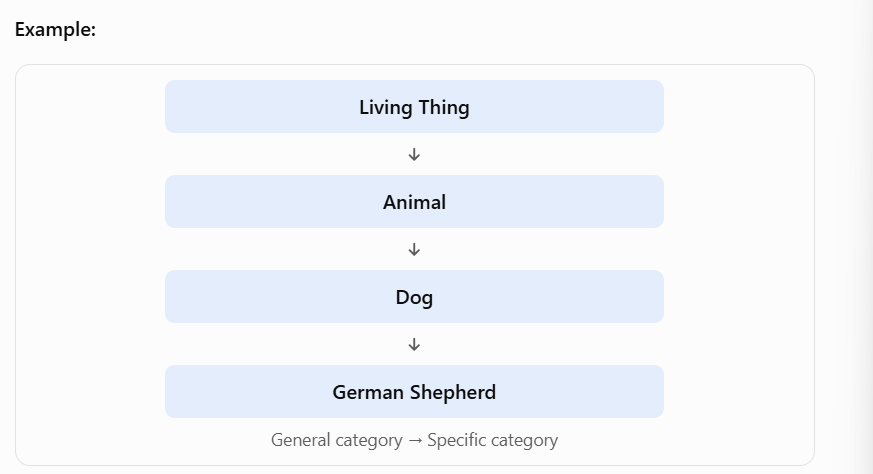
Exam Reference Diagram / Mathematical Expression
Long Analytical Answer Q26. Define NLG. Why is it considered the opposite of NLU?
Module 4: Natural Language Generation and Machine TranslationNatural Language Generation (NLG) is a process in which a computer converts structured data or information into meaningful human language. It helps computers produce sentences, reports, summaries, and responses.
Meaning of NLG: NLG converts computer data into natural language that humans can easily understand.
Purpose: It is used to generate automatic reports, weather updates, news summaries, and chatbot responses.
Meaning of NLU: Natural Language Understanding (NLU) helps computers understand the meaning and intention of human language.
Opposite Processes: NLU converts human language into structured information, whereas NLG converts structured information into human language.
Example:
NLU: The computer understands the sentence, "It is raining today."
NLG: The computer generates the sentence, "Today's weather forecast predicts heavy rainfall."
Therefore, NLG and NLU perform opposite but complementary functions in Natural Language Processing (NLP).
Long Analytical Answer Q27. Explain the three major stages of an NLG architecture.
Module 4: Natural Language Generation and Machine TranslationNatural Language Generation (NLG) architecture generally consists of three major stages. These stages convert structured information into meaningful sentences.
Document Planning: In this stage, the system decides what information should be included and in which order. It selects the important facts according to the user's requirements.
Microplanning: This stage decides how the selected information will be expressed. It includes lexical selection, aggregation, and referring expression generation.
Surface Realization: In this stage, the system converts the planned information into grammatically correct sentences. It handles word order, grammar, punctuation, and sentence structure.
Final Output: The generated sentences are presented to the user in readable natural language.
Example:
Suppose a weather system receives data showing a temperature of 35°C and no rainfall.
Document Planning: Select temperature and rainfall information.
Microplanning: Choose suitable words and combine information.
Surface Realization: "Today will be hot with a temperature of 35°C and no rainfall."
Long Analytical Answer Q28. What is Lexical Selection? Explain its importance with an example.
Module 4: Natural Language Generation and Machine TranslationLexical Selection is an important process in Natural Language Generation (NLG). It means selecting the most suitable words to express a particular meaning or information.
Meaning: Lexical Selection chooses appropriate words from a vocabulary to communicate information clearly.
Word Selection: The system selects words according to the context, meaning, and purpose of the sentence.
Importance: It makes generated sentences more natural, meaningful, accurate, and easy to understand.
Context Awareness: The same meaning can be expressed using different words depending on the situation and audience.
Example:
Suppose a weather system has information that the temperature is 40°C.
It may select words such as:
"The weather is hot."
"The temperature is extremely high."
"Today is a very warm day."
The system selects the most suitable expression according to the context.
Therefore, Lexical Selection helps an NLG system produce natural and meaningful sentences instead of simply displaying raw data.
Long Analytical Answer Q29. Explain any three characteristics of Indian languages that make Machine Translation difficult.
Module 4: Natural Language Generation and Machine TranslationMachine Translation (MT) converts text from one language into another. Translating Indian languages into English or other languages is difficult because Indian languages have several linguistic characteristics.
Rich Morphology: Indian languages use different word forms based on gender, number, tense, person, and case. One root word can have many forms.
Free Word Order: Many Indian languages allow flexible sentence structures. Words can appear in different orders without changing the basic meaning.
Postpositions: Indian languages often use postpositions after nouns, whereas English generally uses prepositions before nouns.
Translation Difficulty: These differences make it difficult for translation systems to identify correct grammar, word relationships, and sentence structures.
Example:
In English: "I am going to school."
In Hindi: "मैं स्कूल जा रहा हूँ।"
The word order and grammatical structure are different.
Therefore, machine translation systems must understand the grammar and structure of both languages to produce accurate translations.
Long Analytical Answer Q52. Explain the Interlingua approach to Machine Translation.
Module 4: Natural Language Generation and Machine TranslationThe Interlingua approach is a method of Machine Translation in which the source language is first converted into a language-independent representation called Interlingua. The target language is then generated from this representation.
Source Analysis: The system analyses the source sentence and identifies its meaning, grammar, and important information.
Interlingua Representation: The meaning of the source sentence is converted into a common representation that does not depend on any particular language.
Target Generation: The system uses the Interlingua representation to generate a sentence in the target language.
Advantages: It reduces the need to develop separate translation rules for every language pair and is useful for multilingual translation systems.
Example:
English: "Ram eats an apple."
Interlingua: Person = Ram, Action = Eat, Object = Apple.
Hindi: "राम एक सेब खाता है।"
The same Interlingua representation can also generate sentences in Bengali, French, or other languages.
Thus, Interlingua makes multilingual translation easier.
Long Analytical Answer Q53. Differentiate between task-oriented dialogue systems and conversational chatbots.
Module 4: Natural Language Generation and Machine TranslationTask-oriented dialogue systems and conversational chatbots are both used to communicate with users. However, their purposes and working methods are different.
Purpose: Task-oriented systems are designed to complete specific tasks, while conversational chatbots are designed to communicate and provide general information.
Conversation: Task-oriented systems follow a structured conversation. Chatbots can support more flexible conversations.
Information: Task-oriented systems collect specific details such as date, time, location, and booking information. Chatbots respond to different questions and topics.
Applications: Task-oriented systems are used for flight booking, hotel reservations, and banking. Chatbots are used for customer support, general queries, and entertainment.
Example:
Task-oriented system: A flight-booking system asks for the source, destination, and travel date.
Conversational chatbot: A chatbot answers questions such as "What is Machine Learning?"
Therefore, task-oriented systems focus on completing specific tasks, whereas conversational chatbots focus on general communication.
Long Analytical Answer Q54. How does a frame-based dialogue system manage conversation flow?
Module 4: Natural Language Generation and Machine TranslationA frame-based dialogue system manages conversations by collecting information from users to complete a particular task. It uses a structure called a frame, which contains different slots or fields.
Frame Creation: The system creates a frame containing all the required information for a task.
Slot Filling: It collects information from the user and fills the required slots one by one.
Missing Information: If any slot is empty, the system asks the user a question to collect the missing information.
Task Completion: When all required slots are filled, the system processes the information and completes the task.
Example:
In a railway ticket-booking system, the frame may contain:
Source: Kolkata
Destination: Delhi
Date: 15 December
Number of passengers: 2
If the date is missing, the system asks, "When do you want to travel?"
After collecting all the required details, the system proceeds with the booking.
Thus, frame-based systems maintain an organized conversation.
Long Analytical Answer Q55. Explain Aggregation in Natural Language Generation.
Module 4: Natural Language Generation and Machine TranslationAggregation is an important process in Natural Language Generation (NLG). It means combining related pieces of information into a single sentence or a smaller number of sentences.
Meaning: Aggregation combines multiple related facts to make the generated text shorter and more natural.
Sentence Combination: It joins sentences using conjunctions such as "and", "but", and "because".
Avoiding Repetition: It removes unnecessary repetition and makes the text easier to read.
Importance: Aggregation improves the readability, fluency, and quality of automatically generated text.
Example:
Without Aggregation:
The temperature is 30°C.
The weather is sunny.
There is no rainfall.
With Aggregation:
"The weather is sunny, with a temperature of 30°C and no rainfall."
The second version communicates the same information using fewer words.
Therefore, Aggregation helps NLG systems generate clear, concise, and natural sentences.
Long Analytical Answer Q66. Explain the MANTRA translation system developed for Indian language translation.
Module 4: Natural Language Generation and Machine TranslationMANTRA stands for Machine Assisted Translation Tool. It is an Indian Machine Translation system developed by the Centre for Development of Advanced Computing (C-DAC).
Purpose: MANTRA was developed to translate administrative and official documents from English into Indian languages.
Working: It uses linguistic rules and grammatical information to analyse the source sentence and generate the target-language sentence.
Translation: It focuses on translating government-related documents while maintaining their meaning and grammatical structure.
Applications: It has been used for translating official documents, such as government circulars, administrative orders, and other formal communications.
Example:
An English administrative sentence such as "The officer has approved the application" can be translated into an Indian language using the system.
MANTRA helps reduce the time and effort required for translating official documents.
Thus, MANTRA is an important contribution to the development of Machine Translation technology for Indian languages.
Long Analytical Answer Q68. Why are postpositions in Indian languages a challenge for English translation?
Module 4: Natural Language Generation and Machine TranslationPostpositions are grammatical words that appear after nouns or noun phrases to show relationships such as place, direction, and time. They create difficulties in Machine Translation because English generally uses prepositions before nouns.
Different Positions: English uses prepositions before nouns, whereas many Indian languages use postpositions after nouns.
Word Order: Translation systems must change the position of these words while translating between English and Indian languages.
Grammatical Relationships: Postpositions help identify relationships between different words in a sentence. Incorrect translation may change the meaning.
Translation Difficulty: The system must understand the grammatical role of each postposition and place the corresponding English preposition correctly.
Example:
English: "The book is on the table."
Hindi: "किताब मेज पर है।"
Here, "on" appears before "the table" in English, while "पर" appears after "मेज" in Hindi.
Therefore, different positions of prepositions and postpositions make Machine Translation challenging.
Long Analytical Answer Q115. Detail the three-stage architecture of an NLG system using a weather forecasting example.
Module 4: Natural Language Generation and Machine TranslationA Natural Language Generation (NLG) system converts structured data into meaningful human language. It generally works through three major stages.
Document Planning: The system selects important information from the available data. In weather forecasting, it may select temperature, rainfall, humidity, and wind speed.
Microplanning: The system decides how to express the selected information. It performs lexical selection, aggregation, and referring expression generation.
Surface Realization: The system converts the planned information into grammatically correct sentences. It decides the correct word order and sentence structure.
Final Output: The generated weather report is presented to the user in natural language.
Example:
Weather Data:
Temperature: 32°C
Weather: Sunny
Rainfall: 0%
Wind Speed: 10 km/h
Generated Report:
"Today will be sunny with a temperature of 32°C. There is no chance of rainfall, and the wind speed will be around 10 km/h."
Thus, NLG converts weather data into an understandable weather report.
Long Analytical Answer Q116. Explain Discourse Planning, Aggregation, and Lexical Selection in NLG.
Module 4: Natural Language Generation and Machine TranslationDiscourse Planning, Aggregation, and Lexical Selection are important processes in Natural Language Generation (NLG). They help convert structured information into meaningful and natural sentences.
Discourse Planning: It decides what information should be included in the output and the order in which the information should be presented.
Aggregation: It combines related information into fewer sentences to avoid repetition and improve readability.
Lexical Selection: It selects suitable words to express the intended meaning according to the context.
Importance: These processes make generated text clear, meaningful, well-organized, and easy to understand.
Example:
Suppose a weather system receives the following information:
Temperature: 35°C
Weather: Sunny
Rainfall: No rain
Working:
Discourse Planning: Select temperature and weather information.
Aggregation: Combine both facts.
Lexical Selection: Choose suitable words such as "hot" and "sunny".
Final Output:
"Today will be a hot and sunny day with a temperature of 35°C and no rainfall."
Long Analytical Answer Q117. Discuss the primary challenges in Machine Translation related to Structural Differences and Word Sense Ambiguity.
Module 4: Natural Language Generation and Machine TranslationMachine Translation converts text from one language into another. However, structural differences and word sense ambiguity create major challenges for translation systems.
Structural Differences: Different languages follow different grammatical rules and sentence structures. A sentence in one language may require a different word order in another language.
Word Sense Ambiguity: A single word may have multiple meanings depending on the context. The system must identify the correct meaning before translating.
Translation Errors: If the system fails to understand sentence structure or word meaning, it may generate incorrect or confusing translations.
Context Understanding: Machine Translation systems need grammatical knowledge and contextual information to produce accurate translations.
Example:
The English word "Bank" can mean:
A financial institution.
The side of a river.
Sentence 1: "I deposited money in the bank."
Sentence 2: "He sat on the river bank."
The translation system must understand the context to select the correct meaning.
Thus, structural differences and word ambiguity make Machine Translation difficult.
Long Analytical Answer Q118. Analyze how Rich Morphology, Free Word Order, and Postpositions create hurdles for English-to-Indian-language Machine Translation.
Module 4: Natural Language Generation and Machine TranslationEnglish-to-Indian-language Machine Translation is challenging because Indian languages have different grammatical characteristics. Rich morphology, free word order, and postpositions create major difficulties.
Rich Morphology: Indian languages change word forms according to gender, number, tense, person, and case. The system must select the correct form while translating.
Free Word Order: Many Indian languages allow flexible sentence structures. The translation system must identify the grammatical relationship between words instead of depending only on word position.
Postpositions: Indian languages generally place postpositions after nouns, whereas English uses prepositions before nouns. Therefore, the system must rearrange words.
Combined Difficulty: These characteristics make it difficult to maintain correct grammar and meaning during translation.
Example:
English: "Ram is going to school."
Hindi: "राम स्कूल जा रहा है।"
The sentence structure and grammatical forms differ between the two languages.
Therefore, Machine Translation systems need proper linguistic rules and contextual understanding.
Long Analytical Answer Q119. Compare Direct, Transfer, and Interlingua approaches to Machine Translation.
Module 4: Natural Language Generation and Machine TranslationDirect, Transfer, and Interlingua are three major approaches to Machine Translation. They differ in how they convert a source-language sentence into a target-language sentence.
Direct Approach: It translates words or phrases directly from the source language into the target language. It uses dictionaries and basic grammatical rules.
Transfer Approach: It first analyses the source sentence, converts its structure into an intermediate representation, and then changes it into the target-language structure.
Interlingua Approach: It converts the source sentence into a language-independent representation. The target language is generated from this common representation.
Difference: Direct translation is simpler, Transfer handles structural differences, and Interlingua is useful for multilingual translation systems.
Example:
English: "Ram eats an apple."
Direct: Translates the words directly into the target language.
Transfer: Changes the English grammatical structure into the target-language structure.
Interlingua: Creates a common meaning representation: Ram = Person, Eat = Action, Apple = Object.
Thus, these approaches provide different methods for translating languages.
Long Analytical Answer Q120. Distinguish between Chatbots and Task-Oriented Dialogue Systems.
Module 4: Natural Language Generation and Machine TranslationChatbots and Task-Oriented Dialogue Systems are computer programs that interact with users through natural language. However, they have different objectives.
Purpose: Chatbots mainly provide information and support general conversations. Task-oriented systems help users complete specific tasks.
Conversation Structure: Chatbots can support open-ended conversations, whereas task-oriented systems generally follow a structured conversation.
Information Collection: Chatbots may answer questions without collecting many details. Task-oriented systems collect required information to complete a task.
Applications: Chatbots are used in customer support and general assistance. Task-oriented systems are used in ticket booking, hotel reservations, and banking.
Example:
Chatbot:
User: "What is Artificial Intelligence?"
Bot: "Artificial Intelligence is the ability of machines to perform tasks that normally require human intelligence."
Task-Oriented System:
User: "I want to book a flight."
System: "Please provide your departure city and destination."
Therefore, chatbots focus on conversation, while task-oriented systems focus on completing specific tasks.
Long Analytical Answer Q121. Explain the "form-filling metaphor" in Frame-Based Dialogue Systems with a flight-booking example.
Module 4: Natural Language Generation and Machine TranslationThe form-filling metaphor is a method used in Frame-Based Dialogue Systems. In this method, a conversation is treated like filling out an online form. The system collects information from the user and stores it in different slots.
Frame Creation: The system creates a frame containing all the required information for a particular task.
Slot Filling: Each required detail is stored in a separate slot, such as departure city, destination, travel date, and passenger count.
Missing Information: If any required slot is empty, the system asks the user a question to collect the missing information.
Task Completion: When all required slots are filled, the system processes the information and completes the task.
Example: Flight Booking
A flight-booking frame contains:
Departure: Kolkata
Destination: Mumbai
Travel Date: 20 December
Passengers: 2
If the travel date is missing, the system asks, "When would you like to travel?"
After collecting all details, the system searches for available flights.
Thus, the form-filling metaphor makes conversations organized and task-focused.
Long Analytical Answer Q31. Differentiate between the Boolean Model and the Vector Space Model.
Module 5: Information Retrieval and Lexical ResourcesThe Boolean Model and Vector Space Model are two important models used in Information Retrieval (IR). Both help users find relevant documents from a collection.
Boolean Model: It uses Boolean operators such as AND, OR, and NOT to search documents. It gives exact results based on the query conditions.
Vector Space Model: It represents documents and queries as numerical vectors. It calculates similarity between them using mathematical methods.
Result Matching: The Boolean Model provides matching or non-matching results. The Vector Space Model calculates similarity scores and ranks documents.
Flexibility: The Boolean Model is suitable for exact searches, whereas the Vector Space Model is useful for finding partially matching and relevant documents.
Example:
Query: "Java AND Python"
Boolean Model: Retrieves documents containing both Java and Python.
Vector Space Model: Retrieves documents and ranks them according to their similarity to the query.
Thus, the Boolean Model focuses on exact matching, while the Vector Space Model focuses on similarity and ranking.
Long Analytical Answer Q34. Explain the role of Stemmers in Information Retrieval with an example.
Module 5: Information Retrieval and Lexical ResourcesA Stemmer is a tool used in Information Retrieval (IR) to reduce words to their root or base form. It helps search engines identify different forms of the same word.
Word Reduction: A Stemmer removes common prefixes or suffixes from words to produce a common stem.
Improves Searching: It helps the search system find documents containing different forms of a search word.
Reduces Vocabulary: It reduces the number of different word forms stored in the index.
Improves Retrieval: It increases the chances of finding relevant documents even when the exact word form is different.
Example:
The words "playing", "played", and "plays" may be reduced to the stem "play".
If a user searches for "playing", the search engine may also retrieve documents containing "played" or "plays".
Therefore, Stemmers improve search efficiency by matching related word forms.
Long Analytical Answer Q35. Why are POS Taggers used in Information Retrieval systems?
Module 5: Information Retrieval and Lexical ResourcesA Part-of-Speech (POS) Tagger is a tool that identifies the grammatical category of each word in a sentence. It labels words as nouns, verbs, adjectives, adverbs, and other grammatical categories.
Word Identification: POS Taggers identify the grammatical role of each word in a document or search query.
Improves Accuracy: They help search engines understand the meaning of words according to their grammatical use.
Better Indexing: POS information can help identify important nouns, verbs, and phrases during document indexing.
Ambiguity Removal: The same word may have different grammatical roles. POS Tagging helps distinguish them using context.
Example:
Sentence: "I book a ticket."
- "book" is a verb.
Sentence: "I read a book."
- "book" is a noun.
The POS Tagger identifies the different uses of the word "book".
Thus, POS Taggers help Information Retrieval systems process queries and documents more accurately.
Long Analytical Answer Q46. What is the primary role of an Inverted Index in Information Retrieval?
Module 5: Information Retrieval and Lexical ResourcesAn Inverted Index is a data structure used in Information Retrieval systems to store information about the locations of words in documents. It helps search engines retrieve documents quickly.
Word Mapping: It maps each unique word to a list of documents containing that word.
Fast Searching: Instead of checking every document, the system directly finds the list associated with the search word.
Efficient Retrieval: It reduces searching time and improves the performance of search engines.
Document Identification: It may also store additional information, such as word frequency and word positions in documents.
Example:
Suppose there are three documents:
D1: Java and Python
D2: Java programming
D3: Python programming
The Inverted Index will be:
If a user searches for "Java", the system directly retrieves D1 and D2.
Thus, an Inverted Index makes searching faster and more efficient.
| Word | Document List |
|---|---|
| Java | D1, D2 |
| Python | D1, D3 |
| Programming | D2, D3 |
Long Analytical Answer Q51. What is Latent Semantic Indexing (LSI) in alternative IR models?
Module 5: Information Retrieval and Lexical ResourcesLatent Semantic Indexing (LSI) is an Information Retrieval technique that identifies hidden relationships between words and documents. It helps search engines understand the meaning of documents beyond exact keyword matching.
Meaning: LSI identifies relationships between terms and documents using mathematical techniques.
Singular Value Decomposition: It uses a mathematical method called Singular Value Decomposition (SVD) to reduce the document-term matrix into a smaller representation.
Meaning-Based Retrieval: It can identify documents containing related words even when the exact query word is not present.
Advantages: It helps overcome problems such as synonymy, where different words have similar meanings.
Example:
A user searches for "Car".
A document contains the words "automobile" and "vehicle" instead of "car".
Traditional keyword matching may not retrieve that document. However, LSI may identify the relationship between these terms and retrieve it.
Therefore, LSI improves Information Retrieval by identifying hidden semantic relationships between words and documents.
Long Analytical Answer Q64. Why is stop-word removal applied selectively depending on the NLP task?
Module 5: Information Retrieval and Lexical ResourcesStop-word removal is a preprocessing technique in which common words such as "is", "the", "a", "an", and "of" are removed from text. However, stop-word removal should be applied selectively because these words may be important in some NLP tasks.
Reduces Unnecessary Words: In Information Retrieval, removing common words can reduce the size of the index.
Improves Efficiency: It can reduce storage requirements and improve searching speed.
Meaning Preservation: In some tasks, stop words are important for understanding sentence meaning and grammatical structure.
Task Dependency: Search engines may remove stop words, but translation, sentiment analysis, and question answering may need to retain them.
Example:
Sentence: "The movie is not good."
If the word "not" is removed, the sentence becomes "The movie is good."
The meaning changes completely.
Therefore, stop-word removal should depend on the requirements of the NLP application.
Long Analytical Answer Q81. Explain the three major design features of an Information Retrieval System.
Module 5: Information Retrieval and Lexical ResourcesAn Information Retrieval (IR) system is designed to search and retrieve relevant information from a large collection of documents. It generally contains three major design features.
Indexing: The system processes documents and creates an index of important words. It helps store information in an organized way for faster searching.
Query Processing: It accepts the user's search query and processes it using techniques such as tokenization, stop-word removal, and stemming.
Ranking: The system compares the processed query with indexed documents and ranks the results according to their relevance.
Result Presentation: The system displays the most relevant documents to the user in an organized order.
Example:
When a user searches for "Python programming":
Indexing: Stores important words from documents.
Query Processing: Processes the words "Python" and "programming".
Ranking: Gives higher positions to more relevant documents.
Thus, these features help an IR system provide fast and relevant search results.
Long Analytical Answer Q83. Explain the working principle of the Probabilistic Information Retrieval Model with a suitable example.
Module 5: Information Retrieval and Lexical ResourcesThe Probabilistic Information Retrieval Model is a search technique that uses probability to estimate how relevant a document is to a user's query. It ranks documents according to their estimated relevance.
Probability Estimation: The system estimates the probability that a document is relevant to a given query.
Document Analysis: It examines document terms and other available information to determine relevance.
Relevance Ranking: Documents are assigned relevance scores based on probability. Documents with higher scores are ranked first.
Improvement: The system can improve its results using user feedback, such as marking documents as relevant or irrelevant.
Example:
Suppose a user searches for "Machine Learning".
The system finds three documents:
D1: Contains detailed Machine Learning information.
D2: Contains some Machine Learning information.
D3: Contains unrelated information.
The system estimates that D1 is most likely to be relevant, followed by D2 and D3.
Therefore, the Probabilistic Model ranks documents according to their estimated chances of relevance.
Long Analytical Answer Q84. Discuss the Classical Models of Information Retrieval: Boolean, Vector Space, and Probabilistic Models.
Module 5: Information Retrieval and Lexical ResourcesClassical Information Retrieval models are techniques used to search and retrieve relevant documents from a collection. The three major models are Boolean, Vector Space, and Probabilistic.
Boolean Model: It uses AND, OR, and NOT operators to retrieve documents. A document either matches the query or does not match it.
Vector Space Model: It represents documents and queries as numerical vectors. It calculates similarity using methods such as Cosine Similarity.
Probabilistic Model: It estimates the probability that a document is relevant to a query and ranks documents according to their relevance scores.
Main Difference: Boolean focuses on exact matching, Vector Space focuses on similarity, and Probabilistic models focus on estimated relevance.
Example:
For the query "Python programming":
Boolean: Finds documents containing the required terms.
Vector Space: Ranks documents based on similarity.
Probabilistic: Ranks documents based on estimated relevance.
Thus, all three models help retrieve information using different methods.
Long Analytical Answer Q85. Explain the design features of an Information Retrieval System, including Indexing, Query Processing, and Ranking.
Module 5: Information Retrieval and Lexical ResourcesAn Information Retrieval (IR) system uses different processes to find relevant documents from a large collection of information. Its main design features are Indexing, Query Processing, and Ranking.
Indexing: The system analyses documents, extracts important terms, and creates an index. An Inverted Index is commonly used for fast searching.
Query Processing: It accepts the user's query and performs operations such as tokenization, stop-word removal, and stemming.
Ranking: It calculates the relevance of each document using techniques such as TF-IDF and Cosine Similarity.
Result Display: After ranking, the system displays the most relevant documents first so that users can easily find the required information.
Example:
A user searches for "Java programming tutorials".
Indexing: Stores important words from documents.
Query Processing: Processes the search terms.
Ranking: Gives higher scores to documents about Java programming tutorials.
Thus, these features make searching faster, easier, and more accurate.
Long Analytical Answer Q91. Explain the role of Stemmers and POS Taggers in IR. Compare Porter Stemmer and Lancaster Stemmer.
Module 5: Information Retrieval and Lexical ResourcesStemmers and POS Taggers are important NLP tools used in Information Retrieval. They help process words and improve the quality of search results.
Role of Stemmers: Stemmers reduce different word forms to a common stem. For example, "playing", "played", and "plays" may become "play".
Role of POS Taggers: POS Taggers identify the grammatical category of words, such as nouns, verbs, and adjectives. They help understand the context of words.
Porter Stemmer: It uses a series of suffix-removal rules. It is comparatively moderate and widely used in English text processing.
Lancaster Stemmer: It uses more aggressive stemming rules and often produces shorter stems than Porter. However, it may remove too much of a word.
Example:
Words: "connected", "connecting", and "connection".
Both stemmers attempt to reduce related word forms, but their exact output may differ.
Main Difference: Porter is generally less aggressive, while Lancaster is more aggressive and may produce shorter stems.
Long Analytical Answer Q99. Explain the structural design and working mechanism of an Inverted Index and its use with Cosine Similarity for document ranking.
Module 5: Information Retrieval and Lexical ResourcesAn Inverted Index is a data structure that stores words along with the documents in which they appear. It is used for fast searching in Information Retrieval systems. Cosine Similarity helps rank the retrieved documents.
Structure: An Inverted Index contains a dictionary of unique terms and a posting list for each term. The posting list stores document IDs and may contain term frequency and word positions.
Working: When a user enters a query, the system looks up the query terms in the index and retrieves the matching documents.
Cosine Similarity: The system represents documents and queries as vectors and calculates the similarity between them. A higher score indicates greater similarity.
Ranking: Documents are arranged according to their similarity scores, with the most relevant documents appearing first.
The cosine similarity formula is:
Example:
A user searches for "Java programming". Documents containing both terms with higher importance may receive higher similarity scores and appear at the top.
Thus, the Inverted Index provides fast retrieval, while Cosine Similarity supports document ranking.
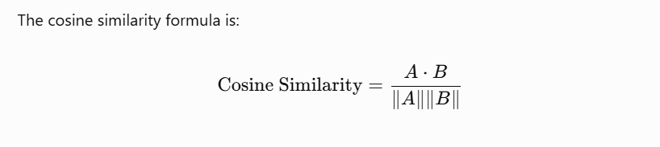
Exam Reference Diagram / Mathematical Expression
Long Analytical Answer Q122. Describe the three major functional steps of an IR system: Indexing, Querying, and Ranking.
Module 5: Information Retrieval and Lexical ResourcesAn Information Retrieval (IR) system searches a collection of documents and retrieves information according to the user's requirements. It mainly works through three functional steps.
Indexing: The system analyses documents, extracts important terms, and stores them in an index. This makes searching faster and more efficient.
Querying: The user enters a search query. The system processes it using techniques such as tokenization, stemming, and stop-word removal.
Ranking: The system compares the query with indexed documents and calculates their relevance scores using methods such as TF-IDF and Cosine Similarity.
Final Results: The documents are arranged according to their relevance, and the most useful results are displayed first.
Example:
A user searches for "Data Science courses".
Indexing: Stores terms from available documents.
Querying: Processes "Data Science courses".
Ranking: Gives higher scores to documents closely related to Data Science courses.
Thus, these three steps help an IR system provide relevant search results efficiently.
Long Analytical Answer Q123. Compare Boolean, Vector Space, and Probabilistic Models of IR regarding scoring and ranking.
Module 5: Information Retrieval and Lexical ResourcesBoolean, Vector Space, and Probabilistic Models are three classical approaches used in Information Retrieval. They differ mainly in how they match queries and rank documents.
Boolean Model: It uses AND, OR, and NOT operators. It does not calculate numerical relevance scores. Documents either match or do not match the query.
Vector Space Model: It represents documents and queries as vectors. It calculates similarity scores using Cosine Similarity and ranks documents according to those scores.
Probabilistic Model: It estimates the probability that a document is relevant to a query. Documents with higher estimated relevance are ranked first.
Ranking Difference: Boolean generally does not provide ranked results, while Vector Space and Probabilistic Models support relevance-based ranking.
Example:
For the query "Python programming":
Boolean: Retrieves matching documents.
Vector Space: Ranks documents by similarity.
Probabilistic: Ranks documents by estimated relevance.
Therefore, Vector Space and Probabilistic Models provide more flexible ranking than the basic Boolean Model.
Long Analytical Answer Q124. Explain how LSI and Neural Models overcome the limitations of exact keyword matching in traditional IR.
Module 5: Information Retrieval and Lexical ResourcesTraditional Information Retrieval systems often depend on exact keyword matching. They may fail to retrieve relevant documents when the query and document use different words with similar meanings. Latent Semantic Indexing (LSI) and Neural Models help solve this problem.
LSI: It uses Singular Value Decomposition (SVD) to identify hidden relationships between words and documents.
Semantic Understanding: LSI can identify related terms and retrieve documents even when exact keywords are missing.
Neural Models: They use machine learning techniques, such as neural networks and language embeddings, to understand the meaning and context of words.
Better Retrieval: These models can match queries and documents based on semantic similarity instead of depending only on exact word matching.
Example:
A user searches for "Car".
A document contains "automobile" and "vehicle" instead of "car".
Traditional IR may miss the document.
LSI may identify relationships between these terms.
Neural Models may understand that these words have similar meanings.
Thus, LSI and Neural Models improve search results through semantic understanding.
Data Science (MCA37505) Master Solutions
150 MCQs, 68 Short Questions, 50 Long Questions & 24 Verified Examination Diagrams
Part A: Multiple Choice Questions (150 Fully Answered)
150 Questions covering Python syntax, linear algebra, statistics, optimization and ML
What is the full form of IDE?
Which data type is used to store text in Python?
What is the output of 3 + 2 * 2 in Python?
Which keyword is used to define a function in Python?
Python is a _______ typed language.
Which of the following is not a data type in Python?
What symbol is used for single-line comments in Python?
What does IDE stand for in Python development?
Which of the following creates a list in Python?
A variable name in Python cannot start with a:
What is the output of len("Data") in Python?
Which of the following is used to store tabular data in Python?
Which of the following is a logical operator in Python?
Which keyword is used for decision-making in Python?
Which package is commonly used for data manipulation in Python?
What will be the result of 5 // 2 in Python?
In Python, a tuple is:
Which of the following is a valid Python variable name?
The function used to display output in Python is:
Which character is used to join strings in Python?
Identify what a Data Scientist primarily works with.
Indicate the purpose of a function in Python.
Identify the use of a DataFrame in Python.
Indicate the operation that combines two data frames by columns.
Select the purpose of control structures in Python.
Identify the purpose of Python's if-elif-else structure.
Indicate the module commonly used for data manipulation in Python.
Indicate how Python represents Boolean logic.
Indicate the purpose of recasting in Python.
Select what the type() function in Python returns.
Select the method used to combine two lists in Python.
Indicate the main difference between a list and a tuple in Python.
Locate the purpose of indentation in Python.
Identify the option that allows iteration over a range of numbers in Python.
Indicate the option that exactly describes Python.
Infer what the term "casting" refers to in Python.
Recognize the result of combining a string and an integer using +.
Identify the use of import keyword in Python.
Identify the purpose of the input() function in Python.
Write the use of 'df' in Python.
Use the appropriate Python function to convert an integer a to a string.
Interpret the df.head(3) function to determine what it returns.
Write the appropriate method to concatenate two DataFrames df1 and df2 horizontally.
Identify the statement that correctly initializes a Python dictionary.
Choose the output of range(1,5) in a for-loop.
Choose the loop used when the number of iterations is unknown.
Choose the function that adds an element to a list.
Choose the line of code that creates a variable x with value 10.
Relate the function used to convert a string s = "123" to an integer.
Choose the code that will output even numbers from 1 to 10.
Estimate what df['Age'].mean() calculates.
Choose the operator used to test equality in Python.
Illustrate how matrix multiplication is done using NumPy.
Interpret what list(range(3)) will return.
Write the output of print("Data" + "Science").
Choose the output of df.shape.
Identify the purpose of solving linear equations in data analysis.
Indicate why matrix representation is useful in solving equations.
Recognize the output of dot product of vectors.
Identify the use of a hyperplane in machine learning.
Locate the importance of eigenvalues in linear algebra.
Indicate the purpose of using eigenvectors in data science.
Indicate the significance of a random variable in probability theory.
Identify the function of a Probability Mass Function (PMF).
Recognize the main difference between PMF and PDF.
Identify the use of sample statistics.
Recognize why standard deviation is a better measure than range.
Identify why variance is important in understanding data spread.
Recognize the function of correlation between two variables.
Identify the range of the correlation coefficient.
Indicate the reason hypothesis testing is performed in data science.
Indicate the significance of the null hypothesis (H₀).
Indicate the result of a small p-value in hypothesis testing.
Recognize the type of data that is best for a Z-test.
Identify why statistical inference is crucial in analysis.
Indicate the importance of hypothesis testing in decision-making.
Examine the role of eigenvalues in PCA.
Differentiate between a PMF and a PDF based on which characteristic.
Analyze the correlation outcomes to identify which one indicates no linear relationship.
Compare standard deviation and range to analyze why standard deviation is preferred for measuring data variability.
Interpret the meaning of a p-value below 0.05 in hypothesis testing.
Analyze the options to identify the most appropriate test for comparing a sample mean with a known population mean.
Interpret the role of a hyperplane in n-dimensional space within the context of binary classification.
Differentiate between sample mean and population mean based on which statistical characteristics.
Analyze why the variance formula includes squaring the deviations.
Distinguish the type of error that occurs when the null hypothesis is wrongly rejected in hypothesis testing.
Interpret how linear equations help in identifying patterns within data.
Analyze how correlation analysis supports regression modeling.
Interpret the implication of a correlation coefficient of -0.95.
Analyze why a data scientist might prefer using sample statistics over full population data.
Analyze why understanding random variables is crucial in statistical modelling.
Analyze how the reliability of sample estimates can be evaluated.
Analyze which aspect of a Probability Density Function (PDF) supports continuous probability distribution analysis.
Interpret the meaning of a correlation coefficient close to +1 between two variables.
Analyze the impact of ignoring variance in statistical models as:
Identify the scenario that demonstrates the use of eigenvectors in machine learning.
Apply your knowledge of gradient descent to identify the function it minimizes.
Apply the steps of gradient descent to determine.
Apply your understanding of optimization to determine how the direction of steepest descent is calculated.
Use your understanding of calculus to determine the gradient of a function as:
Apply your understanding of gradient descent to explain the role of the learning rate as:
Use your knowledge of Python libraries to identify one commonly applied to optimization problems.
Apply your understanding of optimization to identify an unconstrained optimization problem as:
Apply your knowledge of optimization to identify the method used when equality constraints are present.
Apply your understanding of gradients to determine what the gradient vector points toward.
The partial derivatives in gradient descent are applied for:
The equation used to update weights in gradient descent is:
The convergence in gradient descent is identified by:
What effect does too high a learning rate have?
In which scenario is gradient descent not ideal?
The technique used to handle inequality constraints in optimization is:
How would you compute a multivariate gradient in Python?
The method that finds local minimum in smooth and convex functions is:
The primary goal of optimization in data science is illustrated by:
Multivariate optimization is applicable for:
How does adding constraints to optimization affect the solution?
How does gradient descent behave on a convex cost function?
What can be inferred if the gradient in descent is zero?
Why is learning rate tuning critical in gradient descent?
How do equality constraints affect an optimization problem's solution space?
What distinguishes unconstrained from constrained optimization?
How would the presence of multiple minima affect gradient descent?
When analyzing optimization paths, what does a sharp curvature indicate?
How do Lagrange multipliers assist in constrained optimization?
What does a plateau in the cost function surface suggest?
Why is analyzing gradient magnitude important during optimization?
Which of the following techniques is used to assess the performance of a linear regression model?
What does a high variance inflation factor (VIF) indicate in multiple linear regression?
In linear regression, which of the following is used to evaluate the goodness of fit?
Which method is commonly used to improve the fit of a linear regression model?
What is the goal of multiple linear regression model selection?
Which diagnostic measure would best justify whether a predictor should be kept in a multiple linear regression model?
When comparing two linear models, which criterion should be used to justify the better model fit while avoiding overfitting?
How would you justify the use of cross-validation in linear regression modelling?
A model has a high R² but performs poorly on test data. What does this most likely indicate?
Why would stepwise regression be justified in building a multiple linear regression model?
Why would logistic regression be preferred over linear regression for a binary classification problem?
When selecting k in k-NN, how can you justify the best value of k for your model?
What is a valid justification for using k-means clustering on customer segmentation data?
How would you evaluate whether k-NN is appropriate for a given dataset?
Which of the following justifies the use of normalization before applying k-NN?
How would you design a model to classify email as spam using logistic regression?
To build a k-NN model for image classification, which step is essential before model training?
The method used for creating a customer segmentation tool using clustering is:
Which technique is used to design a solution for credit risk classification using Python and machine learning?
To create an efficient k-NN classification system on a large dataset, what would you implement?
Identify the result of True and False in Python.
Compute the result of the code: print(3 > 2 and 2 > 1).
Choose the output of bool("False") in Python.
Interpret what the expression not(True) returns.
Part B: Short Conceptual Questions (Modules 1 to 5)
Python fundamentals, random variables, hypothesis testing, gradient rules and models
Short Answer Q1. What is the role of Python in Data Science?
Module -1Python is a popular programming language used in Data Science because it is simple, flexible, and has many useful libraries. Libraries such as Pandas are used for data handling, NumPy for numerical calculations, Matplotlib and Seaborn for data visualization, and Scikit-learn for machine learning. Python helps data scientists collect, clean, analyze, visualize, and model data easily. It also supports automation and works well with databases and other tools.
Short Answer Q1. Define a function in Python with an example.
Module -1A function is a reusable block of code that performs a specific task. It is defined using the def keyword.
def add(a, b):
return a + b
print(add(5, 3))
Output:
8
Functions reduce code repetition and make programs easier to understand.
Short Answer Q2. What are data types? Give two examples in Python.
Module -1Data types define the type of value stored in a variable. They tell Python how the data should be handled.
Two examples are:
Integer (int) - stores whole numbers.
age = 20
String (str) - stores text.
name = "Yuvaraj"
Other Python data types include float, list, tuple, set, dictionary, and boolean.
Short Answer Q3. What is a control structure in Python?
Module -1A control structure controls the flow or order in which statements are executed in a program. It helps a program make decisions and repeat tasks.
Common control structures are:
if-else - used for decision-making.
for loop - used to repeat statements.
while loop - repeats statements while a condition is true.
Example:
age = 20
if age >= 18:
print("Adult")else:
print("Minor")
Short Answer Q4. Mention two basic operations supported by DataFrames in Python.
Module -1Two basic operations supported by Pandas DataFrames are:
Selecting data - We can select specific rows or columns from a DataFrame.
df["Name"]
Filtering data - We can filter rows based on a condition.
df[df["Age"] > 18]
Other operations include sorting, grouping, joining, adding, and deleting data.
Short Answer Q5. Explain how Python supports Data Science workflows.
Module -1Python supports the complete Data Science workflow. It can be used for data collection, data cleaning, data analysis, visualization, and machine learning. Pandas helps handle and clean datasets, while NumPy performs numerical calculations. Matplotlib and Seaborn create graphs and charts. Scikit-learn provides machine-learning algorithms. Python can also connect with databases and APIs.
Therefore, Python provides a simple and powerful environment for processing data and obtaining useful information from it.
Short Answer Q6. Describe the difference between a list and a DataFrame in Python.
Module -1A list is a basic Python data structure used to store multiple values in a single sequence.
names = ["A", "B", "C"]
A DataFrame is a two-dimensional data structure provided by the Pandas library. It stores data in rows and columns, similar to a table.
import pandas as pd
df = pd.DataFrame({"Name": ["A", "B"], "Age": [20, 21]})
A list is useful for simple collections, while a DataFrame is more suitable for structured data analysis.
Short Answer Q7. How does type casting help in Python programming?
Module -1Type casting means converting a value from one data type to another. It is useful when different types of data need to be used together.
Example:
x = "10"
y = int(x)
print(y + 5)
Output:
15
Here, the string "10" is converted into an integer using int(). Common type-casting functions are int(), float(), str(), and bool().
Short Answer Q8. Explain the importance of functions in Python programming.
Module -1Functions are important because they make programs organized, reusable, and easier to maintain. A function allows us to write a particular task once and use it many times.
For example:
def square(n):
return n * n
print(square(5))
Functions reduce code duplication and make programs easier to test and debug. They also divide a large program into smaller and manageable parts.
Short Answer Q9. Differentiate between arithmetic and logical operations in Python.
Module -1Arithmetic operations are used for mathematical calculations.
Examples:
a + b
a - b
a * b
a / b
Logical operations are used to combine or evaluate conditions.
Examples:
a > 5 and b < 10
a == 5 or b == 10
not(a > 5)
Arithmetic operations produce numerical results, while logical operations generally produce True or False.
Short Answer Q10. Write a Python code snippet to check if a number is positive, negative, or zero.
Module -1num = int(input("Enter a number: "))
if num > 0:
print("Positive")elif num < 0:
print("Negative")else:
print("Zero")The program takes a number as input and uses if, elif, and else to check its value.
Short Answer Q11. Implement a Python function that returns the square of a number.
Module -1def square(num):
return num * num
result = square(5)
print(result)
Output:
25
The function square() takes a number as an argument and returns its square.
Short Answer Q12. Create a DataFrame using Python's pandas library with two columns: Name and Age.
Module -1import pandas as pd
data = {
"Name": ["Rahul", "Amit", "Priya"],
"Age": [20, 21, 22]
}
df = pd.DataFrame(data)
print(df)
Output:
Name Age
0 Rahul 20
1 Amit 21
2 Priya 22
Here, pd.DataFrame() creates a DataFrame with two columns: Name and Age.
Short Answer Q13. Write a Python expression to convert a float value to an integer.
Module -1The int() function can be used to convert a float into an integer.
x = 10.75
y = int(x)
print(y)
Output:
10
The decimal part is removed during conversion. Thus, 10.75 becomes 10.
Short Answer Q14. Demonstrate how to join two DataFrames using pandas' concat() method.
Module -1import pandas as pd
df1 = pd.DataFrame({"Name": ["Amit", "Rahul"]})
df2 = pd.DataFrame({"Name": ["Priya", "Riya"]})
result = pd.concat([df1, df2], ignore_index=True)
print(result)
Output:
Name
0 Amit
1 Rahul
2 Priya
3 Riya
The concat() method combines two or more DataFrames. ignore_index=True creates a new continuous index.
Short Answer Q15. Write a Python program to find the factorial of a number using a loop.
Module -1num = 5
factorial = 1
for i in range(1, num + 1):
factorial = factorial * i
print("Factorial =", factorial)Output:
Factorial = 120
The for loop multiplies all numbers from 1 to the given number. For 5:
Short Answer Q16. Explain the concept of a random variable with an example.
MODULE 2: LINEAR ALGEBRA AND STATISTICAL MODELLING FOR DATA SCIENCE• A random variable is a variable whose value depends on the outcome of a random experiment.
• It assigns a numerical value to each possible outcome.
• There are two types: discrete and continuous random variables.
• Example: When a coin is tossed, let X = number of heads.
• X can have values 0 or 1.
Short Answer Q17. What is the difference between a Probability Mass Function (PMF) and a Probability Density Function (PDF)?
MODULE 2: LINEAR ALGEBRA AND STATISTICAL MODELLING FOR DATA SCIENCEPMF: PDF:
For a continuous variable, probability is found over an interval, not at one exact point.
| PMF | |
|---|---|
| Used for discrete random variables. | Used for continuous random variables. |
| Gives probability of a specific value. | Gives probability density over a range. |
| Example: number of heads in coin tosses. | Example: height or weight. |
Short Answer Q18. Explain the importance of hypothesis testing in data analysis.
MODULE 2: LINEAR ALGEBRA AND STATISTICAL MODELLING FOR DATA SCIENCE• Hypothesis testing is a statistical method used to make decisions about a population using sample data.
• It helps determine whether an observed result is statistically significant.
• It uses two hypotheses:
Null hypothesis (H₀): No significant difference or effect.
Alternative hypothesis (H₁): A significant difference or effect exists.
• It is commonly used in research, experiments, and Data Science to support conclusions from data.
Short Answer Q19. Describe the term 'sample statistics' with an example.
MODULE 2: LINEAR ALGEBRA AND STATISTICAL MODELLING FOR DATA SCIENCE• Sample statistics are numerical values calculated from a sample taken from a population.
• They are used to understand or estimate characteristics of the whole population.
• Common sample statistics include mean, median, variance, and standard deviation.
• Example: Suppose the ages of 5 selected students are [18, 20, 19, 21, 22].
• The average age of these students is a sample mean.
Short Answer Q20. What is the significance of eigenvalues in Data Science?
MODULE 2: LINEAR ALGEBRA AND STATISTICAL MODELLING FOR DATA SCIENCEEigenvalues are important in linear algebra and Data Science.
They indicate the amount of information or variance represented by an eigenvector.
They are widely used in Principal Component Analysis (PCA).
In PCA, larger eigenvalues represent directions containing more variance in the data.
Therefore, eigenvalues help in dimensionality reduction and identifying important patterns in datasets.
Short Answer Q21. Calculate the mean of the dataset: [5, 10, 15, 20, 25].
MODULE 2: LINEAR ALGEBRA AND STATISTICAL MODELLING FOR DATA SCIENCEThe formula for mean is:
Mean = Sum of values / Number of values
Sum = 5 + 10 + 15 + 20 + 25 = 75
Number of values = 5
Therefore,
Mean = 75 / 5 = 15
Short Answer Q22. Write a Python function to compute the variance of a list of numbers.
MODULE 2: LINEAR ALGEBRA AND STATISTICAL MODELLING FOR DATA SCIENCEdef variance(numbers):
mean = sum(numbers) / len(numbers)
var = sum((x - mean) ** 2 for x in numbers) / len(numbers)
return var
print(variance([2, 4, 6, 8]))
This function first calculates the mean, then calculates the squared differences from the mean and returns their average.
Note: This calculates population variance.
Short Answer Q23. Apply hypothesis testing to determine if a coin is fair when heads occur 48 times out of 100 tosses.
MODULE 2: LINEAR ALGEBRA AND STATISTICAL MODELLING FOR DATA SCIENCETotal tosses = 100
Heads = 48
Observed proportion = 0.48
H₀: The coin is fair, so .
H₁: The coin is not fair, so .
Short Answer Q24. Using a one-proportion z-test:
MODULE 2: LINEAR ALGEBRA AND STATISTICAL MODELLING FOR DATA SCIENCEAt the 5% significance level, the critical values are approximately ±1.96.
Since -0.40 lies between -1.96 and 1.96, we do not reject H₀.
Conclusion: The result is consistent with a fair coin.
Short Answer Q25. Compute the standard deviation for the dataset: [4, 8, 6, 5, 3].
MODULE 2: LINEAR ALGEBRA AND STATISTICAL MODELLING FOR DATA SCIENCEData = [4, 8, 6, 5, 3]
Step 1: Mean
Step 2: Squared deviations
= 14.8
Step 3: Standard deviation
Short Answer Q26. Using Python, calculate the correlation between two lists: X = [1, 2, 3], Y = [4, 5, 6].
MODULE 2: LINEAR ALGEBRA AND STATISTICAL MODELLING FOR DATA SCIENCEimport numpy as np
X = [1, 2, 3]
Y = [4, 5, 6]
correlation = np.corrcoef(X, Y)[0, 1]
print(correlation)
Output:
1.0
Therefore, the correlation is 1, which means X and Y have a perfect positive linear correlation.
Short Answer Q27. Calculate the eigenvalues of the matrix [2112].
MODULE 2: LINEAR ALGEBRA AND STATISTICAL MODELLING FOR DATA SCIENCEGiven:
Eigenvalues are found using:
Therefore:
A dataset has values [10, 12, 15, 14, 13]. Compute the standard deviation.
Data = [10, 12, 15, 14, 13]
Mean:
Sum of squared deviations:
Population variance:
Standard deviation:
Short Answer Q28. Solve the system of equations:
MODULE 2: LINEAR ALGEBRA AND STATISTICAL MODELLING FOR DATA SCIENCE2x+3y=8 x−y=2
From the second equation:
Substitute into the first equation:
Now,
Short Answer Q30. Apply the gradient descent rule to minimize the function \(f(x)=x^2\).
MODULE 2: LINEAR ALGEBRA AND STATISTICAL MODELLING FOR DATA SCIENCEGradient descent is an optimization technique used to find the minimum value of a function.
Given function: \(f(x)=x^2\).
Short Answer Q30. Calculate the derivative: \(f'(x)=2x\).
MODULE 2: LINEAR ALGEBRA AND STATISTICAL MODELLING FOR DATA SCIENCEShort Answer Q31. Apply the gradient descent rule:
MODULE 2: LINEAR ALGEBRA AND STATISTICAL MODELLING FOR DATA SCIENCE\[x_{\text{new}}=x-\alpha(2x)\]
Here, \(\alpha\) represents the learning rate.
Repeatedly update the value of \(x\) until it approaches zero.
The minimum occurs at \(x=0\), where \(f(x)=0\).
Conclusion: Gradient descent minimizes the function by moving towards the point where its derivative becomes zero.
Short Answer Q31. Write a Python snippet to compute the gradient of \(f(x,y)=x^2+y^2\).
MODULE 2: LINEAR ALGEBRA AND STATISTICAL MODELLING FOR DATA SCIENCEThe gradient represents the partial derivatives of a function with respect to its variables.
Python Code:
def gradient(x, y):
dx = 2 * x
dy = 2 * y
return dx, dy
print(gradient(2, 3))
Output:
(4, 6)
Conclusion: Python calculates the gradient using partial derivatives. The gradient helps identify the direction of the steepest increase of a function.
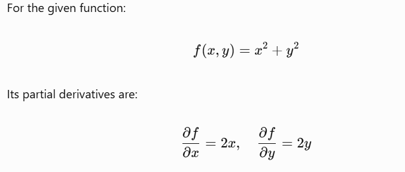
Exam Mathematical Diagram
Short Answer Q32. Apply unconstrained optimization to find the minimum of \(f(x)=(x-3)^2\).
MODULE 2: LINEAR ALGEBRA AND STATISTICAL MODELLING FOR DATA SCIENCEUnconstrained optimization finds the minimum or maximum of a function without additional restrictions on its variables.
Given function:
\[f(x)=(x-3)^2\]
Short Answer Q34. Differentiate the function:
MODULE 2: LINEAR ALGEBRA AND STATISTICAL MODELLING FOR DATA SCIENCE\[f'(x)=2(x-3)\]
Put the derivative equal to zero:
\[2(x-3)=0\]
Therefore, \(x=3\).
Substitute \(x=3\):
\[f(3)=(3-3)^2=0\]
Since the second derivative is positive, the point represents a minimum.
Conclusion: The minimum value is 0, which occurs at \(x=3\).
Short Answer Q33. How do you apply equality constraints in optimization problems?
MODULE 2: LINEAR ALGEBRA AND STATISTICAL MODELLING FOR DATA SCIENCEEquality constraints are conditions that require decision variables to satisfy a specific equation during optimization.
First, define the objective function that needs to be minimized or maximized.
Short Answer Q36. Identify the equality constraint, usually written as \(g(x)=0\).
MODULE 2: LINEAR ALGEBRA AND STATISTICAL MODELLING FOR DATA SCIENCEIntroduce a Lagrange multiplier, represented by \(\lambda\).
Construct the Lagrangian function:
\[L(x,\lambda)=f(x)+\lambda g(x)\]
Short Answer Q37. Differentiate the Lagrangian with respect to the variables and multiplier.
MODULE 2: LINEAR ALGEBRA AND STATISTICAL MODELLING FOR DATA SCIENCESet the derivatives equal to zero and solve the equations.
For example, a company may minimize production costs while maintaining a fixed production quantity.
Conclusion: Equality constraints help find optimal solutions while satisfying specific mathematical conditions.
Short Answer Q34. Analyze how gradient descent converges in a convex function.
MODULE 2: LINEAR ALGEBRA AND STATISTICAL MODELLING FOR DATA SCIENCEGradient descent is an optimization algorithm that repeatedly updates variables to minimize a function.
A convex function has a bowl-shaped structure.
It has a global minimum, meaning no other point has a lower value.
Gradient descent calculates the derivative to determine the direction of movement.
It updates the variable using a suitable learning rate.
With an appropriate learning rate, each iteration moves closer to the minimum.
The gradient gradually becomes smaller near the minimum.
Eventually, the algorithm converges to the minimum or approaches it.
Conclusion: Gradient descent converges efficiently for suitable convex functions when the learning rate is properly selected.
Short Answer Q35. Compare unconstrained and constrained optimization problems.
MODULE 2: LINEAR ALGEBRA AND STATISTICAL MODELLING FOR DATA SCIENCEUnconstrained and constrained optimization are two important types of optimization problems.
Unconstrained optimization finds the best solution without restrictions.
Constrained optimization finds the best solution while satisfying given conditions.
Conclusion: Both methods find optimal solutions, but constrained optimization considers additional restrictions.
| Unconstrained Optimization | Constrained Optimization |
|---|---|
| No restrictions on variables. | Variables must follow restrictions. |
| Easier to solve. | Generally more complex. |
| Uses derivatives and gradients. | Uses constraints and optimization methods. |
| No additional conditions are required. | Equality or inequality conditions are required. |
| Example: Minimize \(f(x)=x^2\). | Example: Minimize cost within a fixed budget. |
Short Answer Q36. Analyze why choosing an appropriate learning rate is critical in gradient descent.
MODULE 2: LINEAR ALGEBRA AND STATISTICAL MODELLING FOR DATA SCIENCEThe learning rate controls how much a variable changes during each gradient descent iteration.
Very Small Learning Rate: The algorithm moves slowly and requires many iterations to reach the minimum.
Very Large Learning Rate: The algorithm may jump over the minimum and fail to converge.
Suitable Learning Rate: It provides balanced updates and helps the algorithm reach the minimum efficiently.
Convergence: A proper learning rate improves the stability of optimization.
Performance: It reduces unnecessary iterations and saves computational time.
For example, a learning rate of 0.01 may provide smaller updates than 0.5.
Conclusion: Choosing an appropriate learning rate is essential for achieving faster, stable, and accurate optimization.
Short Answer Q37. Identify the role of the Lagrange multiplier in optimization with constraints.
MODULE 2: LINEAR ALGEBRA AND STATISTICAL MODELLING FOR DATA SCIENCEA Lagrange multiplier is a mathematical value used to solve optimization problems with equality constraints.
It is represented by the symbol \(\lambda\).
It helps combine the objective function and constraint into one Lagrangian function.
The Lagrangian is written as:
\[L(x,\lambda)=f(x)+\lambda g(x)\]
The function is differentiated with respect to the variables and multiplier.
The resulting equations are solved to find the optimal solution.
The multiplier can also represent how much the optimal objective value changes when the constraint is slightly relaxed.
For example, it can help minimize production costs while maintaining a fixed production quantity.
Conclusion: Lagrange multipliers help find optimal solutions while satisfying equality constraints.
Short Answer Q38. Using gradient descent, compute one iteration to minimize \(f(x)=x^2+4x+4\), starting at \(x=0\), with learning rate \(\alpha=0.1\).
MODULE 2: LINEAR ALGEBRA AND STATISTICAL MODELLING FOR DATA SCIENCE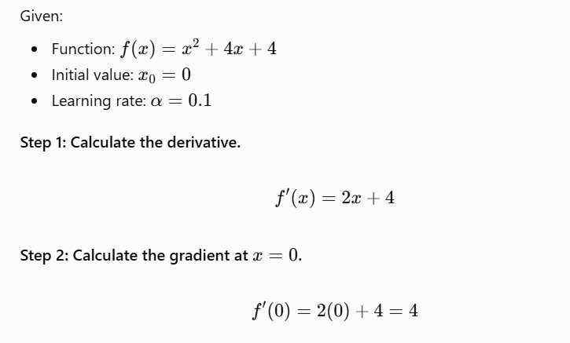
Exam Mathematical Diagram
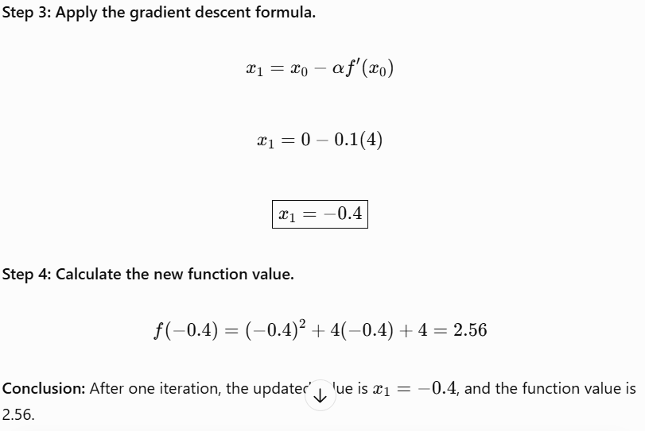
Exam Mathematical Diagram
Short Answer Q30. Apply the gradient descent rule to minimize the function \(f(x)=x^2\).
MODULE 3: OPTIMIZATION FOR DATA SCIENCE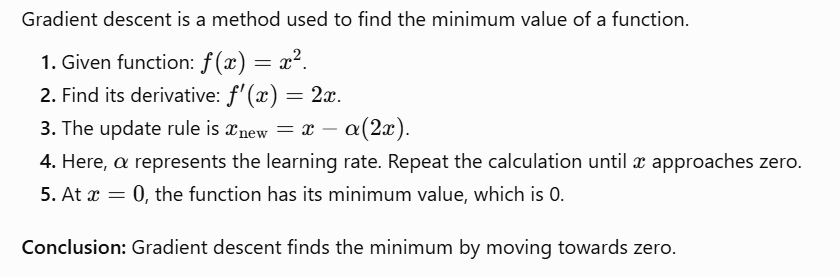
Exam Mathematical Diagram
Short Answer Q31. Write a Python snippet to compute the gradient of .
MODULE 3: OPTIMIZATION FOR DATA SCIENCEPython code:
def gradient(x, y):
return 2*x, 2*y
print(gradient(2, 3))
5. Output: (4, 6). It means the gradient at (2, 3) is (4, 6).
Conclusion: Python calculates gradients easily using mathematical formulas.
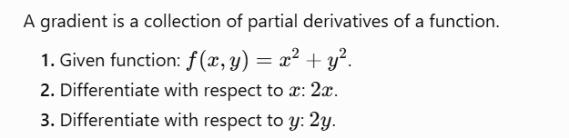
Exam Mathematical Diagram
Short Answer Q32. Apply unconstrained optimization to find the minimum of .
MODULE 3: OPTIMIZATION FOR DATA SCIENCE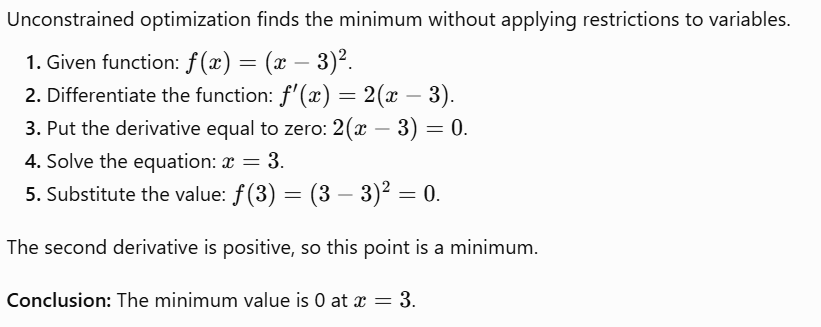
Exam Mathematical Diagram
Short Answer Q33. How do you apply equality constraints in optimization problems?
MODULE 3: OPTIMIZATION FOR DATA SCIENCEEquality constraints are conditions that must be satisfied while solving an optimization problem.
First, define the objective function that needs to be minimized or maximized.
Short Answer Q47. Identify the equality constraint and write it as .
MODULE 3: OPTIMIZATION FOR DATA SCIENCEIntroduce a Lagrange multiplier, represented by .
Short Answer Q48. Create the Lagrangian function:
MODULE 3: OPTIMIZATION FOR DATA SCIENCEShort Answer Q49. Differentiate the function and solve the resulting equations to find the optimal solution.
MODULE 3: OPTIMIZATION FOR DATA SCIENCEExample: Minimizing production costs while producing a fixed quantity.
Conclusion: Equality constraints help find solutions that satisfy given conditions.
Short Answer Q34. Analyze how gradient descent converges in a convex function.
MODULE 3: OPTIMIZATION FOR DATA SCIENCEGradient descent is used to find the minimum of a function. A convex function has a single global minimum.
A convex function has a bowl-shaped structure.
Gradient descent calculates the derivative of the function.
It moves towards the minimum by updating the variable.
A suitable learning rate helps the algorithm move closer to the minimum.
After repeated iterations, the gradient approaches zero and the algorithm converges.
Conclusion: Gradient descent can find the global minimum of a convex function when suitable conditions and learning rates are used.
Short Answer Q35. Compare unconstrained and constrained optimization problems.
MODULE 3: OPTIMIZATION FOR DATA SCIENCEUnconstrained and constrained optimization are methods used to find the best solution.
Unconstrained Optimization: It finds the minimum or maximum without restrictions on variables.
Constrained Optimization: It finds the best solution while following given restrictions.
Complexity: Unconstrained problems are generally easier to solve.
Methods: Unconstrained problems use derivatives, while constrained problems may use Lagrange multipliers.
Examples: Minimizing x^2 is unconstrained; minimizing cost within a fixed budget is constrained.
Conclusion: Both methods find optimal solutions, but constrained optimization follows additional conditions.
Short Answer Q36. Analyze why choosing an appropriate learning rate is critical in gradient descent.
MODULE 3: OPTIMIZATION FOR DATA SCIENCEThe learning rate controls how much a variable changes during each gradient descent step.
A very small learning rate makes the optimization process slow.
A very large learning rate may jump over the minimum.
It can also make the algorithm unstable or prevent convergence.
A suitable learning rate helps the algorithm reach the minimum efficiently.
It improves the speed, stability, and accuracy of optimization.
Example: A learning rate of 0.01 produces smaller updates than 0.5.
Conclusion: Choosing the correct learning rate is important for faster and stable gradient descent.
Short Answer Q37. Identify the role of the Lagrange multiplier in optimization with constraints.
MODULE 3: OPTIMIZATION FOR DATA SCIENCEA Lagrange multiplier is used to solve optimization problems with equality constraints.
It is represented by the symbol .
It combines the objective function and constraint into one function.
The Lagrangian is written as .
We differentiate the Lagrangian with respect to variables and the multiplier.
We solve the resulting equations to find the optimal solution.
Example: It helps minimize production costs while maintaining a fixed production quantity.
Conclusion: Lagrange multipliers help find the best solution while satisfying equality constraints.
Short Answer Q38. Using gradient descent, compute one iteration to minimize starting at x=0 with learning rate a=0.1.
MODULE 3: OPTIMIZATION FOR DATA SCIENCE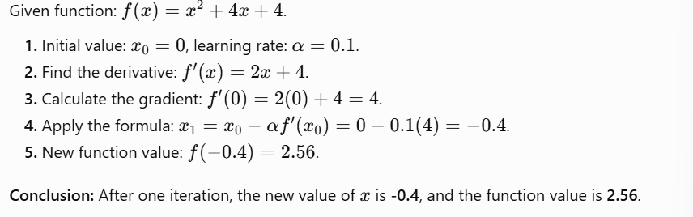
Exam Mathematical Diagram
Short Answer Q39. Analyze the effect of outliers on a linear regression model.
MODULE 4: PREDICTIVE MODELLING - LINEAR REGRESSIONOutliers are data points that are very different from other values in a dataset. They can affect a linear regression model.
Outliers can change the position of the regression line.
They may increase prediction errors.
They can make the model less accurate.
They may give misleading results about the relationship between variables.
We can detect outliers using scatter plots and remove them only when justified.
Conclusion: Handling outliers properly improves the accuracy and reliability of a regression model.
Short Answer Q40. How does cross-validation improve the performance of a predictive model?
MODULE 4: PREDICTIVE MODELLING - LINEAR REGRESSIONCross-validation is a technique used to check how well a predictive model performs on unseen data.
It divides the dataset into several smaller parts.
One part is used for testing, while the remaining parts are used for training.
This process is repeated using different parts.
It helps identify overfitting and underfitting.
It provides a more reliable estimate of model performance.
Conclusion: Cross-validation improves model evaluation and helps select a model that performs well on new data.
Short Answer Q41. When should multiple linear regression be used instead of simple linear regression?
MODULE 4: PREDICTIVE MODELLING - LINEAR REGRESSIONMultiple linear regression is used when one dependent variable is influenced by two or more independent variables.
Simple linear regression uses only one independent variable.
Multiple linear regression uses multiple independent variables.
It helps study several factors together.
It can improve predictions when the additional variables provide useful information.
For example, house prices can be predicted using area, location, number of rooms, and age.
Conclusion: Multiple linear regression is suitable when several factors affect the result.
Short Answer Q42. Justify the use of diagnostic plots in evaluating a regression model's performance.
MODULE 4: PREDICTIVE MODELLING - LINEAR REGRESSIONDiagnostic plots are graphs used to check whether a regression model works properly.
Residual Plot: Shows prediction errors and helps identify patterns.
Q-Q Plot: Checks whether residuals approximately follow a normal distribution.
Scale-Location Plot: Checks whether error variation is consistent.
Leverage Plot: Helps identify unusual observations that may strongly influence the model.
These plots help detect problems and improve model accuracy.
Conclusion: Diagnostic plots help evaluate regression assumptions and make the model more reliable.
Short Answer Q43. Fit a linear regression model for the points (1,2), (2,3), and (3,5). Find the line
MODULE 4: PREDICTIVE MODELLING - LINEAR REGRESSION.
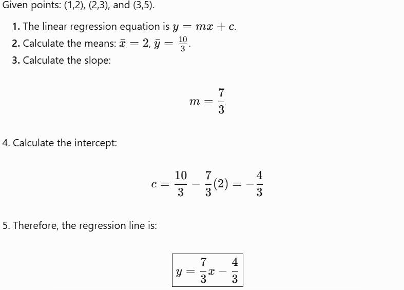
Exam Mathematical Diagram
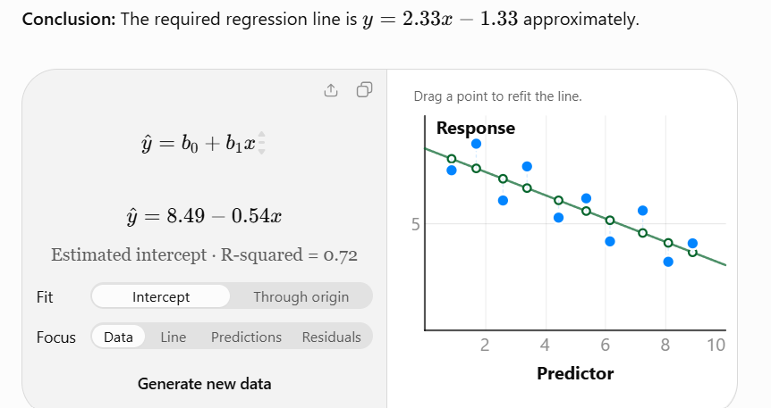
Exam Mathematical Diagram
Short Answer Q44. Evaluate the effectiveness of Logistic Regression for binary classification tasks.
MODULE 5: CLASSIFICATION AND REGRESSIONLogistic Regression is a popular machine learning algorithm used for binary classification.
Simple: It is easy to understand, implement and use.
Prediction: It predicts two possible outcomes, such as Yes or No.
Probability: It calculates the probability of each class.
Performance: It works well when the data has a clear linear relationship.
Limitation: It may not perform well with complex or non-linear data.
Conclusion: Logistic Regression is effective for simple binary classification problems.
Short Answer Q45. Explain why K-Nearest Neighbors (KNN) might be preferred over Logistic Regression in certain situations.
MODULE 5: CLASSIFICATION AND REGRESSIONK-Nearest Neighbors (KNN) is a machine learning algorithm used for classification and prediction.
Non-linear Data: KNN can handle non-linear relationships between data.
Simple Method: It is easy to understand and does not require complex training.
Similarity: It classifies new data by comparing it with nearby data points.
Flexibility: It can work with different types of classification problems.
Limitations: It can be slow when the dataset is very large.
Conclusion: KNN is preferred when data has complex patterns and nearby points are similar.
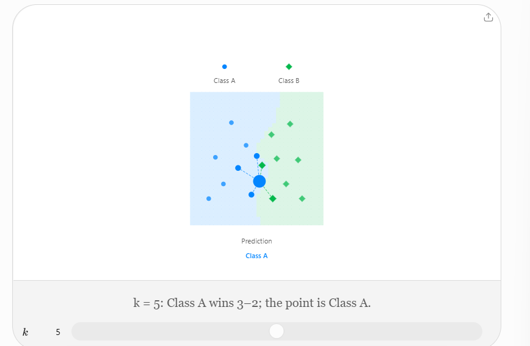
Exam Mathematical Diagram
Short Answer Q46. Design a simple scenario where K-means clustering could be applied effectively.
MODULE 5: CLASSIFICATION AND REGRESSIONK-means clustering can be used to group similar data points without using labelled data.
Scenario: A shopping mall wants to understand its customers.
Data Collection: It collects customer age, income and shopping expenses.
Short Answer Q63. Apply K-means: The algorithm divides customers into different groups.
MODULE 5: CLASSIFICATION AND REGRESSIONGroups: Customers may be grouped as high spenders, average spenders and low spenders.
Use: The mall creates different offers for each customer group.
Conclusion: K-means helps the mall understand customer behaviour and improve marketing.
Short Answer Q47. Propose a classification problem suitable for Logistic Regression and justify your choice.
MODULE 5: CLASSIFICATION AND REGRESSIONLogistic Regression is suitable for predicting whether a student will pass or fail an examination.
Problem: Predict whether a student will pass or fail.
Input Data: Use attendance, study hours and previous marks.
Training: Train the model using previous students' records.
Prediction: The model calculates the probability of passing.
Result: It classifies the student as Pass or Fail.
Conclusion: Logistic Regression is suitable because the problem has only two possible outcomes.
Short Answer Q48. Differentiate between supervised and unsupervised learning.
MODULE 5: CLASSIFICATION AND REGRESSIONSupervised and unsupervised learning are two important types of machine learning.
Supervised Learning: It uses labelled data for training.
Unsupervised Learning: It uses unlabelled data for training.
Purpose: Supervised learning predicts results, while unsupervised learning finds hidden patterns.
Examples: Classification and regression are supervised learning methods.
Applications: Clustering and customer grouping are unsupervised learning methods.
Conclusion: Supervised learning uses known answers, while unsupervised learning discovers patterns from data.
Short Answer Q49. Justify the use of normalization in machine learning preprocessing.
MODULE 5: CLASSIFICATION AND REGRESSIONNormalization is a preprocessing technique used to bring data values into a common scale.
Common Scale: It converts different values into a similar range.
Fair Comparison: It prevents large values from dominating smaller values.
Better Performance: It can improve the performance of some machine learning algorithms.
Faster Training: It may help algorithms such as KNN and gradient descent work faster.
Accuracy: It can improve prediction results when features have different scales.
Conclusion: Normalization makes data suitable for many machine learning algorithms.
Short Answer Q50. Formulate a real-life application of clustering in Data Science.
MODULE 5: CLASSIFICATION AND REGRESSIONClustering is used in Data Science to group similar data without predefined labels.
Application: A company wants to group its customers.
Data Collection: It collects customer age, location and purchasing habits.
Clustering: The algorithm groups customers with similar behaviour.
Analysis: The company studies the needs of each customer group.
Decision: It creates suitable products, offers and marketing strategies for each group.
Conclusion: Clustering helps companies understand customers and make better business decisions.
Part C: Long Analytical Questions with Diagrams (Modules 1 to 5)
Comprehensive examination-style answers with mathematical equations, gradient computations and scatter plots
Long Analytical Answer Q1. What is the role of Python in Data Science?
Module 1: Introduction to Data SciencePython is an important programming language used in Data Science.
Data Collection: Python helps collect data from files, websites and databases.
Data Cleaning: It helps remove missing and incorrect data.
Data Analysis: It is used to understand and analyse large datasets.
Visualization: Libraries like Matplotlib and Seaborn create charts and graphs.
Machine Learning: Libraries like Scikit-learn help build prediction models.
Conclusion: Python makes data science work easier and faster.
Long Analytical Answer Q2. Define a function in Python with an example.
Module 1: Introduction to Data ScienceA function is a block of reusable code that performs a specific task.
Definition: A function performs a particular operation.
Keyword: The def keyword is used to create a function.
Name: Every function has a name.
Arguments: A function can accept values as input.
Return: It can return a result using the return keyword.
Example:
def add(a, b):
return a + b
print(add(5, 3))
Output:
8
Conclusion: Functions make Python programs reusable and organised.
Long Analytical Answer Q3. What are data types? Give two examples in Python.
Module 1: Introduction to Data ScienceData types define the kind of value stored in a variable.
Integer: It stores whole numbers, such as 10 and 25.
Float: It stores decimal numbers, such as 10.5 and 5.7.
String: It stores text, such as "Python".
Boolean: It stores either True or False.
List: It stores multiple values in a single variable.
Example:
age = 22
price = 50.5
Conclusion: Data types help Python understand and manage different values.
Long Analytical Answer Q4. What is a control structure in Python?
Module 1: Introduction to Data ScienceA control structure controls the flow of execution in a Python program.
Meaning: It decides which statement will execute.
If Statement: It executes code when a condition is true.
If-Else: It selects between two possible actions.
Loops: for and while repeat statements.
Use: Control structures help solve problems using conditions and repetition.
Example:
age = 20
if
age >= 18:
print("Adult")else:
print("Minor")Conclusion: Control structures help programs make decisions and repeat tasks.
Long Analytical Answer Q5. Mention two basic operations supported by data frames in Python.
Module 1: Introduction to Data ScienceA DataFrame is a two-dimensional data structure provided by the pandas library.
Filtering: It selects rows based on a condition.
Sorting: It arranges data in ascending or descending order.
Selection: It selects particular rows or columns.
Adding Columns: It allows users to add new columns.
Removing Data: It can delete unwanted rows or columns.
Example:
df.sort_values("Age")
Conclusion: DataFrame operations help manage and analyse data easily.
Long Analytical Answer Q6. Explain how Python supports data science workflows.
Module 1: Introduction to Data SciencePython supports different steps of a data science workflow.
Data Collection: Python collects data from files, websites and databases.
Data Cleaning: Pandas helps clean missing and incorrect values.
Data Analysis: NumPy and Pandas help analyse data.
Visualization: Matplotlib creates charts and graphs.
Model Building: Scikit-learn helps develop machine learning models.
Conclusion: Python supports the complete data science process from data collection to prediction.
Long Analytical Answer Q7. Describe the difference between a list and a DataFrame in Python.
Module 1: Introduction to Data ScienceA list and a DataFrame are used to store data in Python, but they are different.
List: A list stores multiple values in a single sequence.
DataFrame: A DataFrame stores data in rows and columns.
Structure: A list is one-dimensional, while a DataFrame is two-dimensional.
Library: Lists are built into Python, while DataFrames are provided by pandas.
Usage: Lists store simple data, while DataFrames manage and analyse tabular data.
Conclusion: Lists store sequences, whereas DataFrames organise data in table format.
Long Analytical Answer Q8. How does type casting help in Python programming?
Module 1: Introduction to Data ScienceType casting means converting one data type into another data type.
Conversion: It changes the type of a variable.
Integer: int() converts a value into an integer.
Float: float() converts a value into a decimal number.
String: str() converts a value into text.
Use: It helps perform calculations and handle different types of input.
Example:
x = "25"
y = int(x)
print(y + 5)
Output:
30
Conclusion: Type casting helps Python work with different data types correctly.
Long Analytical Answer Q9. Explain the importance of functions in Python programming.
Module 1: Introduction to Data ScienceFunctions are important because they make Python programs easier to write and manage.
Reusability: A function can be used many times.
Less Code: It reduces repeated code.
Organisation: It divides a large program into smaller parts.
Debugging: It makes errors easier to find and correct.
Maintenance: It makes programs easier to update and understand.
Example:
def greet():
print("Hello")Conclusion: Functions make programs simple, reusable and organised.
Long Analytical Answer Q10. Differentiate between arithmetic and logical operations in Python.
Module 1: Introduction to Data ScienceArithmetic and logical operations are used for different purposes in Python.
Arithmetic: It performs mathematical calculations.
Operators: Arithmetic uses +, -, *, / and %.
Logical: It combines or reverses conditions.
Operators: Logical operations use and, or and not.
Result: Arithmetic operations return numerical values, while logical operations return True or False.
Example:
print(10 + 5)
# 15
print(10 > 5 and 5 > 2) # True
Conclusion: Arithmetic performs calculations, while logical operations check conditions.
Long Analytical Answer Q11. Write a Python code snippet to check if a number is positive, negative, or zero.
Module 1: Introduction to Data ScienceWe can use if, elif and else statements to check a number.
Input: Take a number from the user.
If: Check whether the number is greater than zero.
Elif: Check whether the number is less than zero.
Else: If neither condition is true, the number is zero.
Output: Display the correct result.
Python Code:
num = float(input("Enter a number: "))
if num > 0:
print("Positive number")elif num < 0:
print("Negative number")else:
print("Zero")Conclusion: Conditional statements help identify positive, negative and zero values.
Long Analytical Answer Q12. Implement a Python function that returns the square of a number.
Module 1: Introduction to Data ScienceWe can create a function using the def keyword to calculate the square of a number.
Function: Create a function named square.
Input: Pass a number as an argument.
Calculation: Multiply the number by itself.
Return: Use the return statement to send the result.
Output: Print the returned value.
Python Code:
def square(num):
return num * num
result = square(5)
print(result)
Output:
25
Conclusion: A Python function can easily calculate and return the square of a number.
Long Analytical Answer Q13. Create a DataFrame using Python's pandas library with two columns: Name and Age.
Module 1: Introduction to Data SciencePandas provides the DataFrame() function to create a table with rows and columns.
Import: Import the pandas library.
Data: Create values for Name and Age.
DataFrame: Use pd.DataFrame() to create the table.
Columns: The table contains Name and Age.
Display: Use print() to display the DataFrame.
Python Code:
import pandas as pd
data = {
"Name": ["Rahul", "Amit", "Riya"],
"Age": [22, 23, 21]}
df = pd.DataFrame(data)
print(df)
Output:
Name Age
0 Rahul 22
1 Amit 23
2 Riya 21
Conclusion: Pandas makes it easy to create and manage tabular data.
Long Analytical Answer Q14. Write a Python expression to convert a float value to an integer.
Module 1: Introduction to Data SciencePython uses the int() function to convert a float value into an integer.
Float: A float stores decimal values.
Function: The int() function performs the conversion.
Conversion: It removes the decimal part without rounding.
Storage: The converted value can be stored in another variable.
Output: The result becomes an integer.
Python Code:
x = 15.75
y = int(x)
print(y)
Output:
15
Conclusion: Type casting converts a float value into an integer.
Long Analytical Answer Q15. Demonstrate how to join two data frames using pandas' concat method.
Module 1: Introduction to Data ScienceThe concat() method in pandas is used to combine two or more DataFrames.
Import: Import the pandas library.
First DataFrame: Create the first DataFrame.
Second DataFrame: Create another DataFrame with similar columns.
Concat: Use pd.concat() to combine both DataFrames.
Display: Print the combined DataFrame.
Python Code:
import pandas as pd
df1 = pd.DataFrame({
"Name": ["Rahul", "Amit"],
"Age": [22, 23]
})
df2 = pd.DataFrame({
"Name": ["Riya", "Neha"],
"Age": [21, 24]
})
result = pd.concat([df1, df2], ignore_index=True)
print(result)
Output:
Name Age
0 Rahul 22
1 Amit 23
2 Riya 21
3 Neha 24
Conclusion: The concat method combines multiple DataFrames into one.
Long Analytical Answer Q16. Write a Python program to find the factorial of a number using a loop.
Module 1: Introduction to Data ScienceFactorial is the product of all positive integers from 1 to a given number.
Input: Take a number from the user.
Initial Value: Set the factorial variable to 1.
Loop: Use a for loop to repeat multiplication.
Calculation: Multiply the factorial by each number.
Output: Display the final factorial value.
Python Code:
num = int(input("Enter a number: "))
fact = 1
for i in range(1, num + 1):
fact = fact * i
print("Factorial =", fact)Output:
Enter a number: 5
Factorial = 120
Conclusion: A loop helps calculate factorial by multiplying numbers one by one.
Long Analytical Answer Q17. Explain the concept of a random variable with an example.
Module 2: Linear Algebra and Statistical Modelling for Data ScienceA random variable is a variable whose value depends on the result of a random experiment. It is used in probability and statistics to represent uncertain outcomes.
Meaning: A random variable represents the numerical result of a random event.
Types: There are two main types: discrete and continuous random variables.
Discrete Variable: It takes countable values, such as 0, 1, 2, 3, etc.
Continuous Variable: It can take any value within a range, such as height, weight or temperature.
Example: When a coin is tossed, we can define X as the number of heads. X can be 0 or 1 in one toss.
Conclusion: Random variables help represent and study uncertain events using numerical values.
Long Analytical Answer Q18. What is the difference between a probability mass function (PMF) and a probability density function (PDF)?
Module 2: Linear Algebra and Statistical Modelling for Data SciencePMF and PDF are mathematical functions used to describe probability distributions. However, they are used for different types of random variables.
PMF: A Probability Mass Function is used for discrete random variables.
PDF: A Probability Density Function is used for continuous random variables.
Values: PMF gives the probability of an exact value, while PDF represents probability density.
Total Probability: The sum of all PMF values is 1, while the total area under a PDF curve is 1.
Example: The number of heads in coin tosses uses PMF, while human height can be described using PDF.
Conclusion: PMF is used for countable values, whereas PDF is used for continuous values.
Long Analytical Answer Q19. Explain the importance of hypothesis testing in data analysis.
Module 2: Linear Algebra and Statistical Modelling for Data ScienceHypothesis testing is a statistical method used to make decisions about a population using sample data. It helps determine whether a claim is supported by evidence.
Decision Making: It helps make decisions based on collected data.
Null Hypothesis: It represents the original assumption or claim being tested.
Alternative Hypothesis: It represents another possibility that may be supported by the data.
Significance Level: It helps decide whether the result is statistically significant, commonly using a 5% level.
Applications: It is used in medical research, business, education and scientific experiments.
Example: A company can test whether a new teaching method improves students' marks.
Conclusion: Hypothesis testing helps researchers make reliable decisions using statistical evidence.
Long Analytical Answer Q20. Describe the term 'sample statistics' with an example.
Module 2: Linear Algebra and Statistical Modelling for Data ScienceSample statistics are numerical values calculated from a sample of data. They help us understand a larger population without studying every individual.
Meaning: Sample statistics describe the important features of a selected group.
Sample Mean: It represents the average value of the sample.
Sample Median: It represents the middle value of the arranged sample.
Sample Variance: It measures how much the sample values differ from their mean.
Example: Consider the marks of five students: 60, 70, 80, 90 and 100. Their sample mean is 80.
Conclusion: Sample statistics help analyse data and estimate the characteristics of a larger population.
Long Analytical Answer Q21. What is the significance of eigenvalues in data science?
Module 2: Linear Algebra and Statistical Modelling for Data ScienceEigenvalues are important mathematical values used in linear algebra and data science. They help understand the behaviour of matrices and data.
Meaning: An eigenvalue represents how much a particular direction is scaled by a matrix transformation.
PCA: Eigenvalues are used in Principal Component Analysis to identify important directions in data.
Variance: In PCA, larger eigenvalues represent directions containing more data variance.
Dimensionality Reduction: They help select important features and reduce the number of dimensions.
Applications: Eigenvalues are used in image processing, machine learning and data analysis.
Example: PCA uses larger eigenvalues to select the most important principal components.
Conclusion: Eigenvalues help simplify complex data and identify important information.
Long Analytical Answer Q22. Calculate the mean of the dataset: [5, 10, 15, 20, 25].
Module 2: Linear Algebra and Statistical Modelling for Data ScienceMean is the average of all values in a dataset. It is calculated by dividing the sum of all values by the total number of values.
Given Data: 5, 10, 15, 20, 25.
Formula: Mean = Sum of all values / Number of values.
Calculate Sum: 5 + 10 + 15 + 20 + 25 = 75.
Number of Values: There are 5 values in the dataset.
Calculate Mean: 75 / 5 = 15.
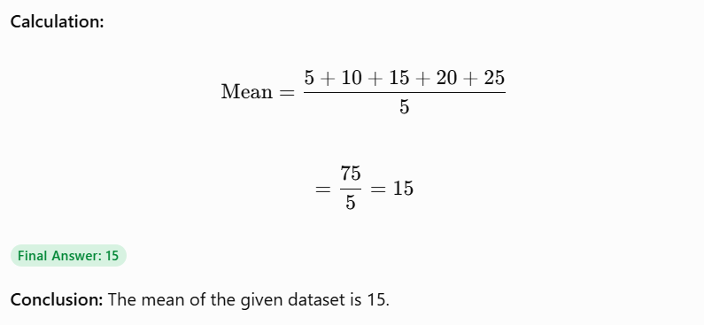
Exam Mathematical Expression / Architecture
Long Analytical Answer Q23. Write a Python function to compute the variance of a list of numbers.
Module 2: Linear Algebra and Statistical Modelling for Data ScienceVariance is a statistical measure that shows how far the values are spread from their mean. Python can calculate variance using a simple function.
Function: Create a function named calculate_variance.
Input: Pass a list of numbers to the function.
Mean: Calculate the average of all numbers.
Variance: Calculate the average of the squared differences from the mean.
Return: Return the calculated variance.
def calculate_variance(numbers):
mean = sum(numbers) / len(numbers)
variance = sum(
(x - mean) ** 2 for x in numbers
) / len(numbers)
return variance
data = [2, 4, 6, 8]
print("Variance =", calculate_variance(data))Output:
Variance = 5.0
Conclusion: This function calculates the population variance of a given list using Python.
Long Analytical Answer Q24. Apply hypothesis testing to determine if a coin is fair (heads = 48 out of 100 tosses).
Module 2: Linear Algebra and Statistical Modelling for Data ScienceHypothesis testing helps determine whether a coin is fair by analysing the number of heads obtained in 100 tosses.
Null Hypothesis (H₀): The coin is fair, so the probability of getting heads is 0.5.
Alternative Hypothesis (H₁): The coin is not fair, so the probability of heads is different from 0.5.
Given Data: Total tosses = 100, heads = 48, and observed probability = 48/100 = 0.48.
Test Calculation: Standard error = √(0.5 x 0.5 / 100) = 0.05. Therefore, Z = (0.48 − 0.50)/0.05 = −0.40.
Decision: At a 5% significance level, the critical values are −1.96 and +1.96. Since −0.40 lies between them, we fail to reject the null hypothesis.
Conclusion: There is not enough evidence to say that the coin is unfair. The result is consistent with a fair coin.
Long Analytical Answer Q25. Compute the standard deviation for the dataset: [4, 8, 6, 5, 3].
Module 2: Linear Algebra and Statistical Modelling for Data ScienceStandard deviation is a statistical measure that shows how much the values differ from their mean. A smaller standard deviation means the values are closer to the mean.
Given Data: 4, 8, 6, 5, 3.
Calculate Mean: Mean = (4 + 8 + 6 + 5 + 3) / 5 = 26 / 5 = 5.2.
Find Squared Differences: (4 − 5.2)² + (8 − 5.2)² + (6 − 5.2)² + (5 − 5.2)² + (3 − 5.2)² = 14.8.
Calculate Variance: Population variance = 14.8 / 5 = 2.96.
Calculate Standard Deviation: Standard deviation = √2.96 = 1.72 approximately.
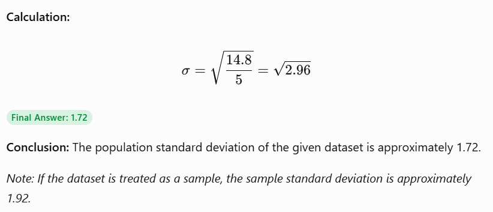
Exam Mathematical Expression / Architecture
Long Analytical Answer Q26. Using Python, calculate the correlation between two lists: X = [1,2,3], Y = [4,5,6].
Module 2: Linear Algebra and Statistical Modelling for Data ScienceCorrelation measures the relationship between two variables. It shows whether the variables move in the same or opposite directions.
Given Data: X = [1, 2, 3] and Y = [4, 5, 6].
Import Library: Use the NumPy library to calculate correlation.
Calculation: Use the corrcoef() function to calculate the Pearson correlation coefficient.
Result: The correlation coefficient is +1.
Meaning: It shows a perfect positive linear relationship because both lists increase together.
Python Code:
import numpy as np
X = [1, 2, 3]
Y = [4, 5, 6]
result = np.corrcoef(X, Y)
print("Correlation =", result[0, 1])Output:
Correlation = 1.0
Conclusion: The correlation between X and Y is +1, which represents a perfect positive correlation.
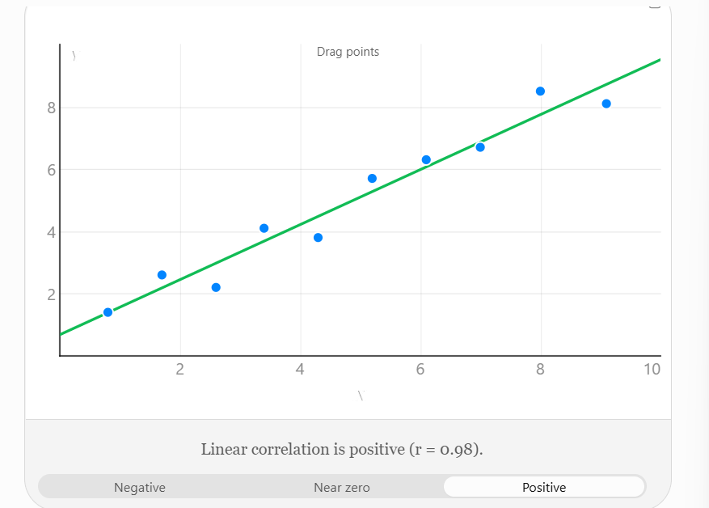
Exam Mathematical Expression / Architecture
Long Analytical Answer Q27. Calculate the eigenvalues of the matrix [2112].
Module 2: Linear Algebra and Statistical Modelling for Data ScienceEigenvalues are special values of a square matrix. They can be calculated using the characteristic equation.
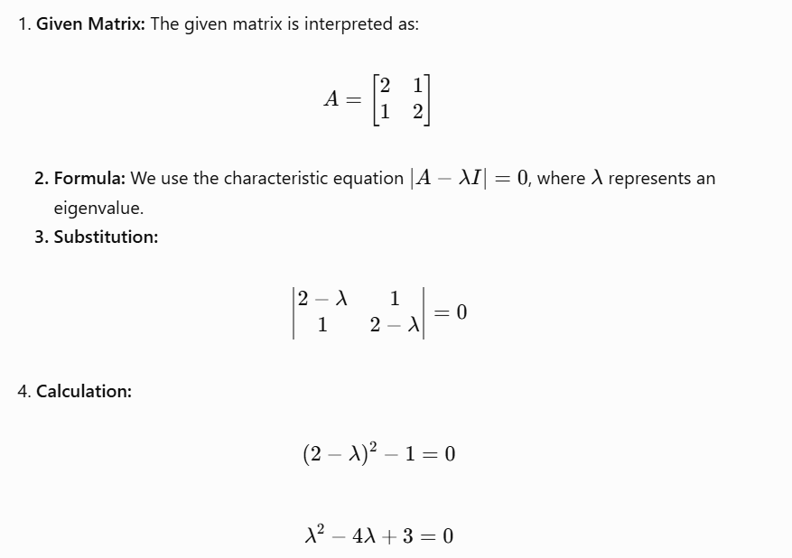
Exam Mathematical Expression / Architecture
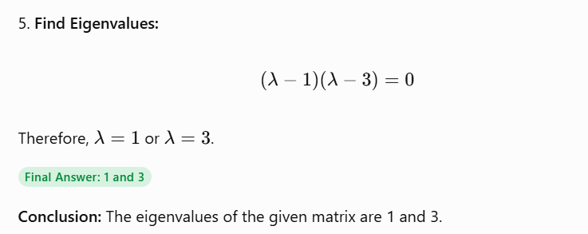
Exam Mathematical Expression / Architecture
Long Analytical Answer Q28. A dataset has values [10, 12, 15, 14, 13]. Compute the standard deviation.
Module 2: Linear Algebra and Statistical Modelling for Data ScienceStandard deviation measures how much the data values are spread around their mean. It helps us understand the variation in a dataset.
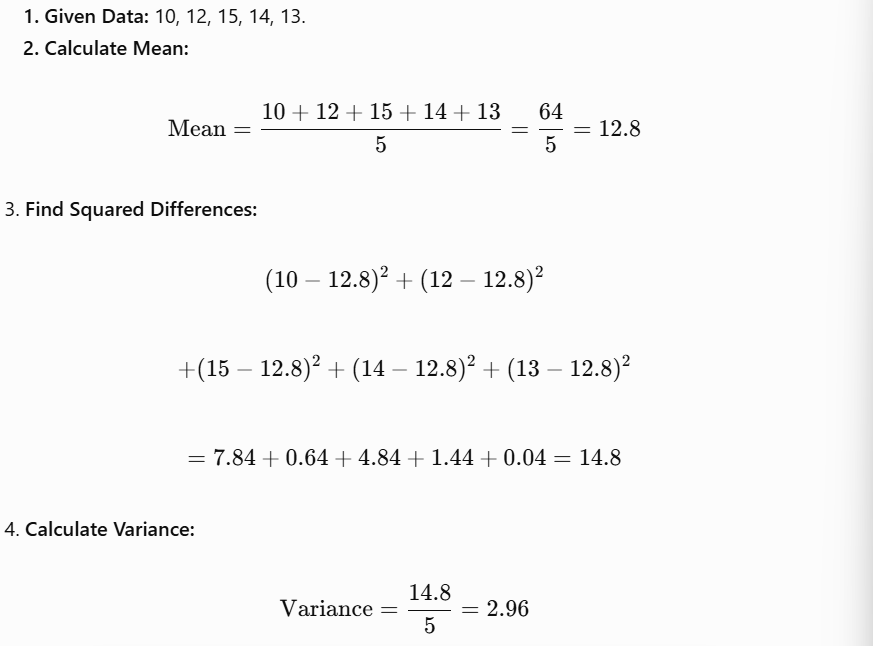
Exam Mathematical Expression / Architecture
Long Analytical Answer Q29. Solve the system of equations: 2x + 3y = 8 and x − y = 2.
Module 2: Linear Algebra and Statistical Modelling for Data ScienceA system of equations contains two or more equations with unknown values. We can solve these equations using the substitution method.
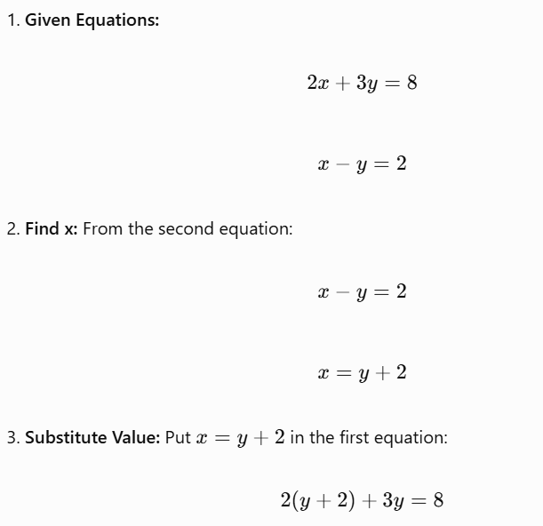
Exam Mathematical Expression / Architecture
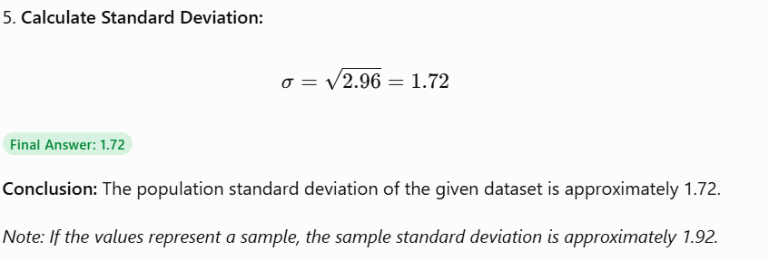
Exam Mathematical Expression / Architecture
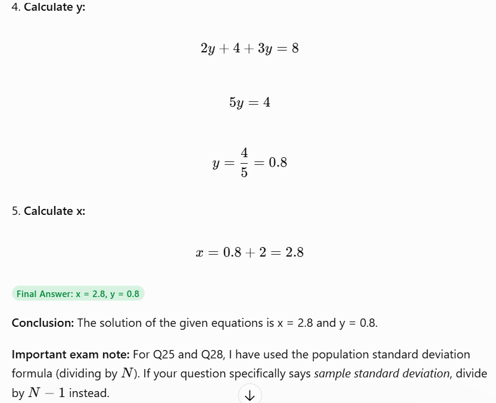
Exam Mathematical Expression / Architecture
Long Analytical Answer Q30. Apply the gradient descent rule to minimize the function \(f(x)=x^2\).
Module 3: Optimization for Data ScienceGradient Descent is an optimization method used to find the minimum value of a function. It updates the value of x step by step.
Given Function: The function is f(x)=x^2.
Find Derivative: Differentiate the function to get f'(x)=2x.
Update Rule: Use the gradient descent rule to update x in each iteration.
Minimum Point: At the minimum point, the derivative becomes zero. Therefore, 2x=0, so x=0.
Minimum Value: Put x = 0 in the function. Therefore, f(0)=0.
Conclusion: The minimum value of the function is 0 at x = 0.
Long Analytical Answer Q31. Write a Python snippet to compute the gradient of \(f(x,y)=x^2+y^2\).
Module 3: Optimization for Data ScienceA gradient represents the derivatives of a function with respect to its variables. Python can calculate gradients using the SymPy library.
Import Library: Import SymPy for symbolic mathematical calculations.
Define Variables: Create two variables, x and y.
Define Function: Write the function \(f(x,y)=x^2+y^2\).
Calculate Gradient: Find partial derivatives with respect to x and y.
Display Result: Print both derivatives as the gradient.
import sympy as sp
x, y = sp.symbols('x y')
f = x**2 + y**2
gradient = [sp.diff(f, x), sp.diff(f, y)]
print("Gradient =", gradient)Output:
Gradient = [2*x, 2*y]
Conclusion: The gradient of the given function is [2x, 2y].
Long Analytical Answer Q32. Apply unconstrained optimization to find the minimum of \(f(x)=(x-3)^2\).
Module 3: Optimization for Data ScienceUnconstrained optimization is used to find the minimum or maximum value of a function without any restrictions on its variables.
Given Function: The function is f(x)=(x-3)^2.
Find Derivative Differentiate the function to get f'(x)=2(x-3).
Set Derivative to Zero: At the minimum point, 2(x-3)=0.
Find x: Solving the equation gives x=3.
Calculate Minimum: Substitute x = 3 into the function. Therefore, f(3)=(3-3)^2=0.
Conclusion: The minimum value is 0 at x = 3.
Long Analytical Answer Q33. How do you apply equality constraints in optimization problems?
Module 3: Optimization for Data ScienceEquality constraints are conditions that must be satisfied while finding the minimum or maximum value of a function.
Meaning: An equality constraint is written as an equation, such as \(g(x,y)=0\).
Objective Function: First, identify the function that needs to be minimized or maximized.
Constraint: Write the given equality condition clearly.
Lagrange Method: Use the Lagrange multiplier method to solve the optimization problem.
Solution: Find the values that optimize the function while satisfying the constraint.
Example: Minimize \(f(x,y)=x^2+y^2\), subject to \(x+y=10\).
Conclusion: Equality constraints help find the best solution while following a given condition.
Long Analytical Answer Q34. Analyze how gradient descent converges in a convex function.
Module 3: Optimization for Data ScienceGradient descent is an optimization algorithm that moves towards the minimum value of a function. A convex function has a bowl-shaped curve.
Convex Function: A convex function has a global minimum point.
Gradient: The gradient shows the direction of the steepest increase.
Update: Gradient descent moves in the opposite direction of the gradient.
Learning Rate: A suitable learning rate helps the algorithm reach the minimum smoothly.
Convergence: With suitable conditions, gradient descent gradually reaches the global minimum.
Conclusion: Gradient descent can efficiently find the global minimum of a convex function when the learning rate is properly selected.
Long Analytical Answer Q35. Compare unconstrained and constrained optimization problems.
Module 3: Optimization for Data ScienceUnconstrained and constrained optimization are two methods used to find the best solution to a problem.
Unconstrained: It finds the minimum or maximum without restrictions.
Constrained: It finds the best solution while following given conditions.
Conditions: Unconstrained problems have no restrictions, while constrained problems have equality or inequality constraints.
Methods: Unconstrained optimization uses gradient descent, while constrained optimization may use Lagrange multipliers.
Example: Finding the minimum of \(x^2\) is unconstrained, while minimizing cost under a fixed budget is constrained.
Conclusion: Unconstrained optimization has no restrictions, whereas constrained optimization follows specific conditions.
Long Analytical Answer Q36. Analyze why choosing an appropriate learning rate is critical in gradient descent.
Module 3: Optimization for Data ScienceThe learning rate controls how much the algorithm changes its values during each iteration of gradient descent.
Meaning: The learning rate decides the step size during optimization.
High Learning Rate: A very high learning rate may skip the minimum point.
Low Learning Rate: A very low learning rate makes the process very slow.
Stability: A suitable learning rate helps the algorithm move smoothly towards the minimum.
Convergence: Choosing the correct learning rate improves the speed and stability of convergence.
Conclusion: A suitable learning rate helps gradient descent reach the minimum efficiently without unnecessary delay or instability.
Long Analytical Answer Q37. Identify the role of the Lagrange multiplier in optimization with constraints.
Module 3: Optimization for Data ScienceThe Lagrange multiplier is a mathematical technique used to solve optimization problems with equality constraints.
Meaning: It is represented by the Greek letter lambda (λ).
Purpose: It helps find the minimum or maximum of a function under a given constraint.
Lagrangian: It combines the objective function and the constraint into one function.
Calculation: Partial derivatives are set equal to zero to find the solution.
Interpretation: In suitable problems, it represents how the optimal value changes when the constraint is slightly relaxed.
Example: It can be used to minimize production cost under a fixed production requirement.
Conclusion: Lagrange multipliers help solve optimization problems while satisfying equality constraints.
Long Analytical Answer Q38. Using gradient descent, compute one iteration to minimize \(f(x)=x^2+4x+4\), starting at x=0, with learning rate α=0.1.
Module 3: Optimization for Data ScienceLong Analytical Answer Q39. Analyze the effect of outliers on a linear regression model.
Module 4: Predictive Modelling -- Linear RegressionOutliers are data values that are very different from other values in a dataset. They can affect the accuracy of a linear regression model.
Change in Line: Outliers can change the position and direction of the regression line.
Prediction Error: They may increase the difference between actual and predicted values.
Accuracy: Outliers can reduce the accuracy of the regression model.
Relationship: They may create a misleading relationship between independent and dependent variables.
Detection: Outliers can be identified using scatter plots and box plots. They should be removed only when there is a valid reason.
Conclusion: Outliers can negatively affect linear regression, so they must be carefully identified and handled.
Long Analytical Answer Q40. How does cross-validation improve the performance of a predictive model?
Module 4: Predictive Modelling -- Linear RegressionCross-validation is a technique used to check how well a machine learning model performs on different parts of a dataset.
Data Splitting: It divides the dataset into multiple smaller parts.
Training: The model is trained using some parts of the data.
Testing: The remaining part is used to test the model.
Repeated Process: The training and testing process is repeated with different data parts.
Better Evaluation: It helps identify overfitting and provides a more reliable estimate of model performance.
Conclusion: Cross-validation helps build reliable models that perform better on new and unseen data.
Long Analytical Answer Q41. When should multiple linear regression be used instead of simple linear regression?
Module 4: Predictive Modelling -- Linear RegressionMultiple linear regression is used when two or more independent variables affect one dependent variable.
Simple Regression: It uses only one independent variable to predict an outcome.
Multiple Regression: It uses two or more independent variables.
Complex Problems: It is useful when many factors influence the result.
Example: House prices may depend on area, location, number of rooms and age.
Better Analysis: It helps understand the combined effect of different factors on the result.
Conclusion: Multiple linear regression should be used when several independent variables influence one dependent variable.
Long Analytical Answer Q42. Justify the use of diagnostic plots in evaluating a regression model's performance.
Module 4: Predictive Modelling -- Linear RegressionDiagnostic plots are graphical tools used to check whether a regression model is working properly.
Residual Plot: It shows the difference between actual and predicted values.
Q-Q Plot: It checks whether the residuals follow a normal distribution.
Scale-Location Plot: It checks whether the spread of residuals is nearly constant.
Leverage Plot: It helps identify data points that strongly influence the regression model.
Error Detection: These plots help identify unusual patterns, outliers and problems in the model.
Conclusion: Diagnostic plots help check model assumptions and improve the reliability of regression results.
Long Analytical Answer Q43. Fit a linear regression model for points (1,2), (2,3), and (3,5). Find the line y = mx + c.
Module 4: Predictive Modelling -- Linear RegressionLinear regression is used to find the best-fit straight line for a given set of data points.
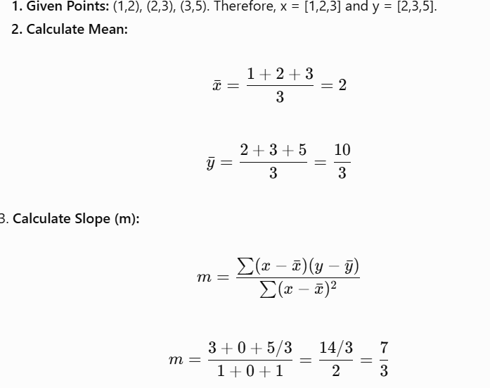
Exam Mathematical Expression / Architecture
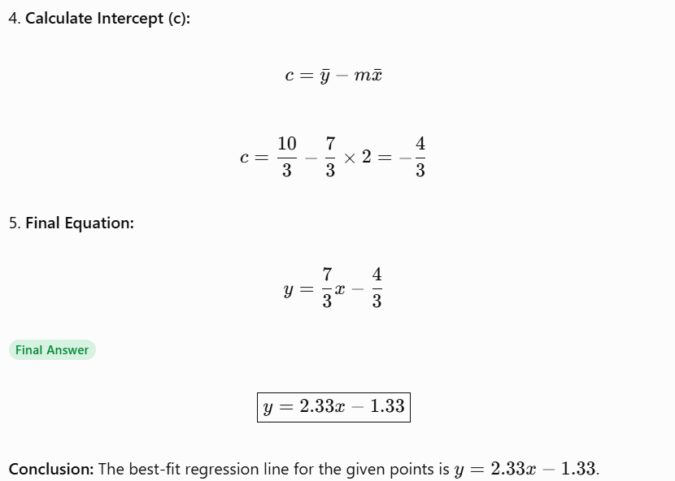
Exam Mathematical Expression / Architecture
Long Analytical Answer Q44. Evaluate the effectiveness of logistic regression for binary classification tasks.
Module 5: Classification and RegressionLogistic Regression is a supervised machine learning algorithm used for binary classification.
It predicts two possible outcomes, such as Yes or No, Pass or Fail.
It uses the sigmoid function to calculate the probability of each outcome.
It is simple, fast, easy to understand, and works well with linearly separable data.
However, it may not perform well when the data has complex non-linear patterns.
Conclusion: Logistic Regression is an effective algorithm for simple binary classification problems.
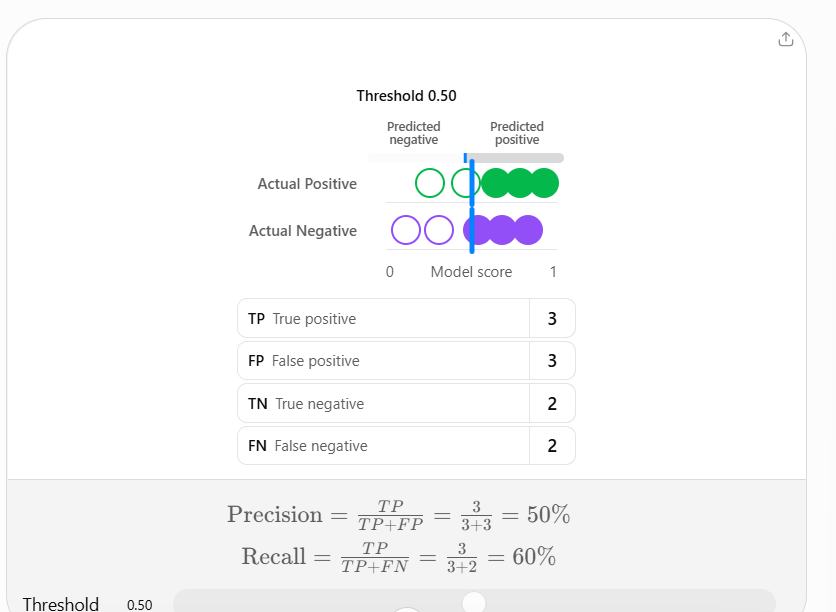
Exam Mathematical Expression / Architecture
Long Analytical Answer Q45. Explain why k-nearest neighbors (KNN) might be preferred over logistic regression in certain situations.
Module 5: Classification and RegressionKNN is a supervised learning algorithm used for classification and regression.
It classifies a new data point by checking its nearest neighbouring data points.
KNN can handle non-linear patterns without assuming a linear relationship.
It is useful when the dataset has complex decision boundaries.
However, KNN can be slower for large datasets and requires proper feature scaling.
Conclusion: KNN may be preferred when data has complex patterns and nearby data points are important.
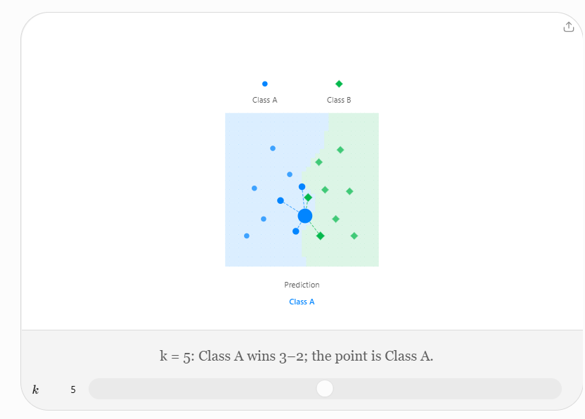
Exam Mathematical Expression / Architecture
Long Analytical Answer Q46. Design a simple scenario where k-means clustering could be applied effectively.
Module 5: Classification and RegressionA shopping mall wants to divide its customers into different groups.
It collects customer data such as age, income, and shopping expenses.
K-means clustering is applied to group customers with similar characteristics.
The algorithm may create groups such as high spenders, medium spenders, and low spenders.
The mall uses these groups to provide suitable offers and improve marketing strategies.
Conclusion: K-means clustering helps the mall understand customer behaviour and make better business decisions.
Long Analytical Answer Q47. Propose a classification problem suitable for logistic regression and justify your choice.
Module 5: Classification and RegressionEmail spam detection is a suitable problem for Logistic Regression.
The system collects email features such as keywords, links, and sender information.
These features are used to predict whether an email is spam or not spam.
Logistic Regression calculates the probability of an email belonging to either class.
It is suitable because the output contains two categories and the model is simple to implement.
Conclusion: Logistic Regression can be effectively used for basic spam email classification.
Long Analytical Answer Q48. Differentiate between supervised and unsupervised learning.
Module 5: Classification and RegressionSupervised learning uses labelled data, while unsupervised learning uses unlabelled data.
Supervised learning learns from input data with known outputs, while unsupervised learning finds hidden patterns.
Classification and regression are examples of supervised learning.
Clustering and association are examples of unsupervised learning.
Supervised learning predicts outcomes, while unsupervised learning discovers groups or relationships.
Conclusion: Both methods are important in machine learning, but they are used for different purposes.
Long Analytical Answer Q49. Justify the use of normalization in machine learning preprocessing.
Module 5: Classification and RegressionNormalization is a preprocessing technique used to scale numerical data into a common range.
It prevents features with large values from dominating features with small values.
It improves the performance of distance-based algorithms like KNN and K-means.
It helps gradient-based algorithms learn more efficiently.
Min-Max Scaling is a common normalization method that usually converts values into the range 0 to 1.
Conclusion: Normalization makes data consistent and helps many machine learning algorithms perform better.
Long Analytical Answer Q50. Formulate a real-life application of clustering in data science.
Module 5: Classification and RegressionClustering can be used in hospitals to group patients with similar health conditions.
The hospital collects data such as age, symptoms, test results, and medical history.
A clustering algorithm groups patients based on similar characteristics.
Doctors can study these groups to identify common health patterns.
This information helps hospitals plan better treatment strategies and medical services.
Conclusion: Clustering helps healthcare organizations discover useful patterns and improve patient care.